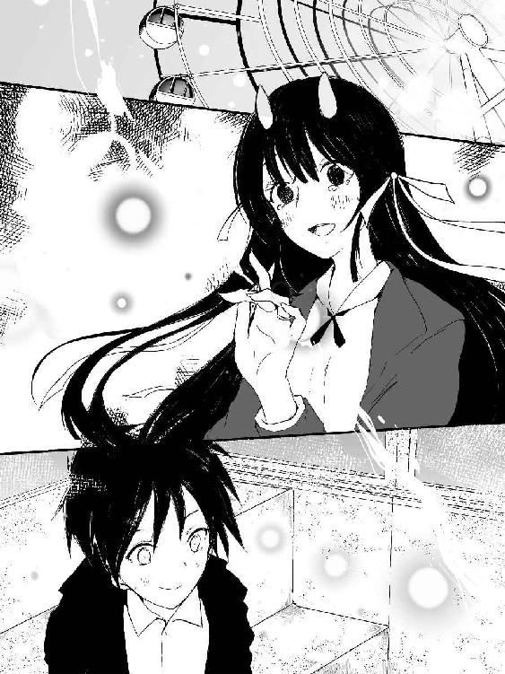
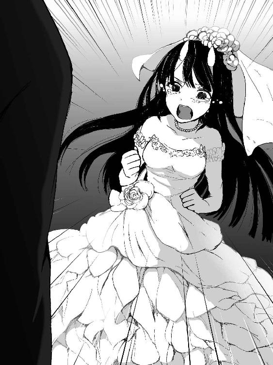
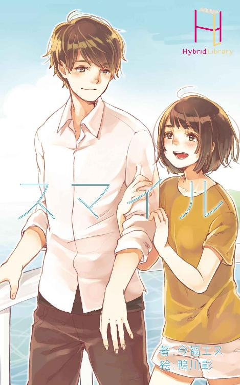
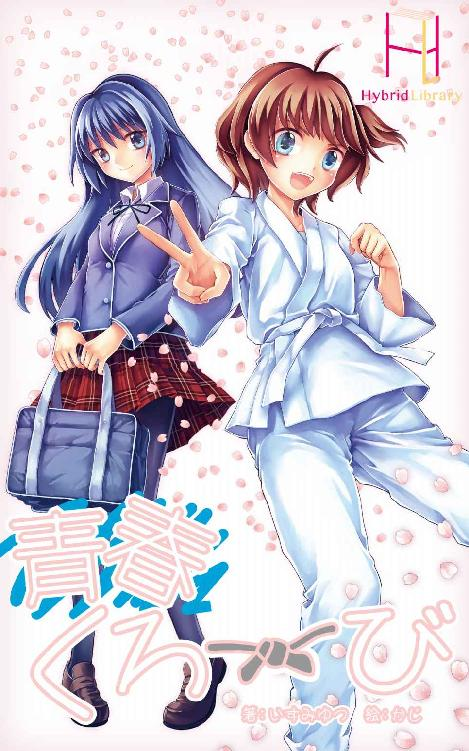
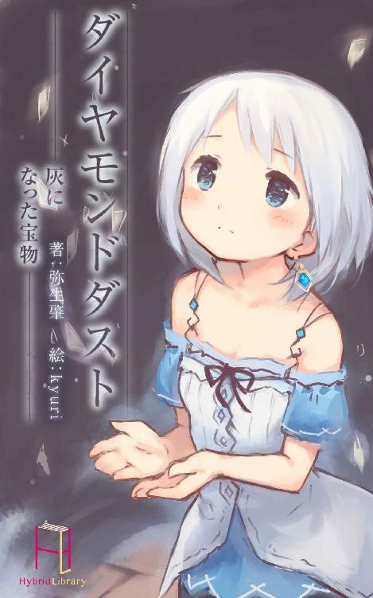
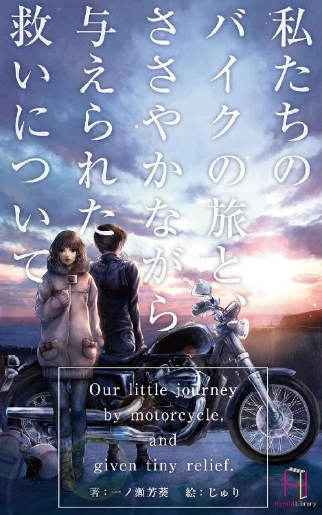

| ひめとり！ (Hybrid Library) | |
| 晴丸 | |
| Hybrid Library (2017) | |
じいちゃんが死んだ。
俺を育ててくれた、たったひとりの大切な家族が死んでしまった。
鏡谷幸八は、庭に面した縁側に腰掛け夜空に浮かぶ月を仰いだ。幸八はこの春、高校一年になる十五歳。
三月末。暦の上ではもう春だがこの時期の夜はまだ寒い。しかし幸八はここに三時間ほどこうして腰掛けている。身体はとうに冷えきり唇は紫に染まっている。幸八は動く様子もなく、ぼんやりと視線を庭の方へ向けていた。
一昨日、幸八の祖父が亡くなった。
急性の心不全。体調が悪い様子もなにもなかった。本当に唐突なお別れだった。
そして幸八はひとりぼっちになった。いわゆる天涯孤独ってやつになってしまった。
両親とは幸八が五歳のときに死別していて、それ以来十年間、幸八を育ててくれたのは母方の祖父だった。
――そのじいちゃんが死んだ。
いまだに実感がわかない。昨日までじいちゃんは元気にしてたのだ。いつものように夕飯を食べて、ビール一缶と日本酒一合を飲んで、顔を赤らめて楽しそうに笑って。
そして幸八の誕生日を、十五の誕生日を祝ってくれていたのに――
「これでお前も大人だな！ 飲め飲め！」
じいちゃんはそういって酒を勧めた。まだ未成年だろ、と幸八がいったら、
「元服っていってな。昔の武士は十五で一人前だったんだよ」
だから、ほれ、飲め飲め。
じいちゃんはそういうと、秘蔵の日本酒を持ち出してきた。
「お前が一人前になった記念だ。大人になったら飲むって約束したろ？ ようやく酒を酌み交わせるようになったんだからよ、いいじゃねえか。じいちゃんへの恩返しだと思ってよ」
お酒は二十歳になってからだろ、と幸八が苦笑すると、
「ちぇ、つまんねえなぁ、おい。でも......んじゃまぁ、あと五年頑張るかぁ」
くっかっかと、うれしそうに笑うじいちゃんに、幸八もにやっと笑い返した。大人になったら一緒に飲むと、幼いころに約束したその酒を、そうして幸八は飲まなかった。
――その翌日、じいちゃんは亡くなった。遅めの朝食を食べたあと、縁側で昼寝をして、そのまま目を覚まさなかった。
その翌日に通夜を行い、二日後の今日、幸八が喪主となり葬儀を執り行なった。
通夜や葬儀のときのことを幸八はよく覚えていない。喪主にはなったが、幸八はまだ十五。だいたいのことは、大人たちが準備をしてくれた。
亡くなったじいちゃんは、いわゆる古武術の道場を開いていて、門下生の大人たちが率先して行ってくれた。
幸八はただいわれたとおりに行動して、気がついたら葬儀は終わり、骨壺を持った自分がいた。手伝ってくれた門下生や関係者、遠い親戚や近所の親交のあった人たちから励まされて、それに愛想笑いを浮かべ適当な返事をしつつ、ようやくひとりになった幸八はそのまま縁側に座った。この春から着る予定だった学ランに一足早く袖を通した、その姿のまま。
「............」
こうして縁側に座っていたら、じいちゃんが今にも隣に腰掛けてくるような気がする。
「............」
だけど、じいちゃんは来ない。じいちゃんどころか、誰もここには来ない。ここにはもう幸八ひとりしかいなかった。
頭の中は真っ白で、胸のあたりにはぽっかりと大きな穴が開いていて。
なにを考えればいいのか、なにかを考えているのかすらわからなくて、呼吸すらも忘れてしまいそうだった。
「............」
幸八は首から提げたお守りを胸元から取り出した。複雑に編み込んだ革紐と角のようにも見える円錐型の笛をトップにした首飾り。これはじいちゃんにもらった、幸八のお守りだ。
『見ろ、幸八。これはな、じいちゃんがその昔鬼を助けた恩にもらった、鬼の角笛だ。困ったときにこいつを吹いたら、鬼が飛んできて助けてくれるんだぞ』
幼いころ学校でいじめられて泣いていた幸八に、じいちゃんはそういって見せてくれた。とんでもない嘘だったが、いたいけな子供だった幸八は、それにまんまとだまされた。
『これから先、どうしても困ったときにこいつを吹きな。一度だけ、鬼が助けに来てくれるからよ。いいか？ 一度だけだぞ？ 一度しか使えねえから、本当に大事なときに使うんだぞ』
じいちゃんはそういいながら、幼い幸八の首にこの首飾りをかけてくれた。それ以来、この首飾りは幸八のお守りだった。
幸八はこの笛をまだ吹いたことがなかった。
吹こうと思ったことは何度もある。だけど、一度しか使えない、というじいちゃんの言葉を思い出して、結局吹くことはなかった。
もちろん、笛を吹いたって鬼が助けにくるはずないことを幸八はもう知っている。だけどこれは今でも幸八のお守りだ。
この笛を吹いたらじいちゃんが助けにきてくれる。
それは理屈じゃなくて、とにかくそういうもんだと思っていた。この笛を吹けば、どこにいてもじいちゃんが駆けつけて幸八を助けてくれると、そう思っていた。
「............」
幸八はゆっくりと笛を口元へと運んだ。唇の間に軽く挟んでくわえ、息を大きく吸い込み――ほんの一瞬、ほんの一瞬だけためらって――
「――ッ」
思い切って強く息を吹き込んだ。
――――――。
笛は、鳴らなかった。
どれだけ強く息を吹き込んでも、強弱をつけてみても、どんな音も鳴らなかった。ただ息の抜ける、スースーという音だけがむなしく響いた。
笛が鳴らないなんて、幸八は考えてもいなかった。でもそれは当然かも知れない。じいちゃんはこれを鬼の角笛だといったいうけど、本当はただこういう形をした首飾りで笛ではなかったのだろう。だから鳴らなくて当たり前なのだ。
それでも幸八は笛を吹き続けた。鳴らない笛に息を吹き込み続けた。
スースー、スースー。
血管がはち切れそうなほど、力を込めて。空気が足りず頭がくらくらとしてくる。だが、それにもかまわず幸八は歯を食いしばって思いっきり吹き続けた。
だけど、どれだけ吹いても笛は鳴らなくて。
肺の中が空っぽになって、息が続かず苦しくなった。
じわり、と押し込められていた熱いものがこみ上げてきた。
ダメだ、泣いたらダメだ。ここで泣いたら認めたみたいじゃないか......もう二度と帰ってこないって、認めたみたいじゃないか。
「う......う......」
......くそ、くそ、くそ、くそ！
シャリン。
涙をこらえる幸八の耳に、その音が聞こえた。その瞬間、幸八は背後に気配を感じた。ぼうっとしていた幸八の頭がすっとさえた。身体の中に冷たい芯がとおるような――まるで幽霊でも背後に立っているような――心地がした。
ああ、と幸八は声を漏らした。あは、と笑いが漏れそうだった。幸八はゆっくりと振り返る。
――なあ、どうしてここにいるんだよ、来たんだよ、来れたんだよ。なあ――
「じいちゃ......え？」
そこには――じいちゃんがいるべきそこには――女の子がいた。
腰に届くほど長く豊かで艶やかな黒髪を波打たせ、赤と黒の裾の長い、まるで時代劇に出てくるお姫様のような着物を身にまとった美しい少女が。
彼女は幸八を認めると、その美しい顔を小さく伏せ、すっと幸八の前へと跪いた。
「幸八様......ですね？」
――誰だ、この子？
口をぽかんと開け、マヌケ丸出しの顔をしつつコクリと幸八はうなずいた。
「お初にお目にかかります。鬼笛でのお呼びに応え馳せ参じました。私、夜行一族が姫、ミナと申します。先代が受けた恩義に報いるため、このミナ、一命を賭してあなた様にお仕えいたします。なんなりとお申し付けください」
三つ指をつき深く頭を下げ一礼をしたミナは、顔を上げてにこり、と微笑んだ。
その拍子に彼女の前髪がはらりと流れ――
「え」
幸八は声をあげていた。
彼女のきれいな額には不可思議な突起物がついていた。ちょこんと額から突き出たそれは月明かりを反射して神々しいほどに輝いて――
「あの？」
不安そうに声をかけた少女は幸八の視線に気づき、ああ、と納得したように声をあげ、そっとおでこを隠した。
「申し訳ありません。驚かれますよね。ですがご安心ください」
そう謝りながら、彼女は驚く幸八へと膝で一歩近づいた。
「！」
幸八はびくっと震え、とっさに一歩下がろうとして――
「あ！ いけません、幸八様！」
足下が抜け落ちた。
――あぁ、ここ縁側だ。
目の前で慌てたように手をさしのべる少女を見ながら、悠長にもそう思った次の瞬間、幸八は縁側から転げ落ち後頭部を打って、プツリと意識を失った。
＊
幸八は夢を見ていた。まだ幼かったころ。じいちゃんと暮らし始めたばかりのころの夢だ。
夢の中の幸八は泣いていた。
幼いころの幸八は毎日のように泣いていた。理由はもうおぼろげだが、両親がいないことを学校でからかわれたとか、純粋に両親がいないことの寂しさだとか、そんな理由だったと思う。そのくせ幼い幸八は意地っ張りで、さびしいことを悟られたくなくて、からかわれたことで泣くのは悔しくて、人前では絶対に泣かなかった。ぎゅっと手のひらを握り締めて、唇を結んでただ黙っていた。はたから見たらとても無愛想な子供だったと思う。
幸八が泣くのはひとりでいるときだけだった。
学校から帰ってくると自分の部屋に閉じこもり、部屋の隅っこでひざを抱え込んで丸くなって泣いた。じいちゃんに知られるのも嫌だったから声を押し殺して泣いた。幼いながらに、自分を引き取って面倒を見てくれているじいちゃんにこれ以上迷惑をかけたくない気持ちもあったんだと思う。
だけど、幸八がどれだけ隠れて泣いていてもじいちゃんにはすぐに気づかれてしまった。部屋の隅で丸くなって幸八が泣いているとじいちゃんは幸八の部屋の前の縁側に腰掛け、障子越しに泣いている幸八に向かって話し出すのだ。
「じいちゃんがお前ぐらいの年の、かっこいい美少年だったころ――」
そんな口上で始まるじいちゃんの昔話を。
最初、じいちゃんが障子越しに急に昔話を始めたときには、びっくりすると同時に妙に腹が立った。隠れて泣きながら、それに気づいて慰めて欲しかったのだ。だから、保護者なら子供が泣いてたら慰めるとか話を聞くとかしろよ、と思った。もちろんそんなことをされたら嫌がるのだが。
今になってみれば、幼い幸八は甘えたかったのだ。
だからじいちゃんが昔話を始めたとき、幸八はムッとした。ばか、と叫びたかった。それも悔しいので歯を食いしばってじっと耐えた。耳をふさいでじいちゃんの話を無視しようとした。
だけど年の功なのかじいちゃんの話はおもしろかった。話自体もだが、話し方が上手だったのだ。じいちゃんはあの手この手で幸八の興味を引いて話の中に引きずり込んだ。
一度引きずり込まれてしまえば五歳の子供。じいちゃんの話が気になって耳をそばだてて聞いた。ちょうど話の導入部分が終わるとじいちゃんは話を切った。
最初は、トイレ休憩かなとか、飲み物を取りにいくのかなとか思うのだが、じいちゃんは立ち上がるでもなく話を再開するでもなくただ黙っていた。幸八はじっと待つのだがじいちゃんはなにも話してくれない。
しびれを切らして幸八は障子を開けて様子をうかがった。すると、じいちゃんはなにをするでもなく、ぼうっと庭の方を眺めていた。
「......続き」
幸八の声にじいちゃんが振り向いた。
「続き、聞かせて」
くぐもったもそもそとした声で幸八はそういった。じいちゃんはにかっと笑うと、幸八を隣に座らせて話を再開した。
じいちゃんの昔話はたとえば、鬼を助けたことがあってそのときに一緒に酒盛りをしたとか、天狗と山でかけっこ競争をしたとか、川で河童と泳ぎの競争をして海までいってしまったとか、そんな妖怪のお話だった。
今では幸八を笑わせるためにじいちゃんが作った話だとわかるのだけど、幼い幸八はその話が本当だと信じ込んで自分も妖怪と遊びたいと本気で思ったものだった。
それで、じいちゃんの話を聞いているうちに幸八は泣き止んで最後には笑っていた。
話が終わって笑っていると、じいちゃんはいつもくしゃくしゃの笑顔で幸八の頭をくしゃくしゃと撫でた。
そうされて初めて幸八は自分が泣き止んでいることに気づくのだけど、意地っ張りな幸八にはそれがまた妙に悔しくて、もうじいちゃんの昔話は聞かないぞと決心するのだが、次の日なんかに泣いていてじいちゃんが話し出すと、わかっているのに「かっこいい美少年だった」のフレーズに「おいおい」と突っ込んでしまって、そこをきっかけに引き込まれて話を聞いてしまうのだ。
その昔話の中に、角笛の話があった。
「こいつはな。昔、夜行さんって妖怪を助けたときにもらった笛なんだよ。夜行さんってのは妖怪の総大将でよ。助けてやったら、その礼に吹いたらいつでもかけつけるっていってこれくれたんだ。三回呼べるらしいんだが、じいちゃんが二回使っちまった。あとの一回は幸八、お前にやるよ」
そういってじいちゃんがくれたのだ。そして一度も吹いたことはなかった。大事にお守りにしていた首飾り。
「一回だからな、大事に使えよ」
その言葉がリフレインする。夢がだんだんとぼやけていくのがわかった。
ああ......俺は今日、それを吹いたのだ。
どこかで、ピー、と笛の音が鳴るのが聞こえた。いや、笛は鳴らなかったんだっけ？ じゃあこの音は？
ふと、夢の中の笛に亀裂が走った。それと同時に幸八の夢にも亀裂が走る。目が覚めようとしていた。
＊
ピー、と鳴るやかんの音と、トントントントン、と包丁を刻む規則正しい音で幸八は目を覚ました。
――やべ、今日の夕飯の当番は俺だった。
ぼんやりとする頭のまま起きた幸八は、
「痛ッ」
ズキッと後頭部に痛みを感じて押さえた。そこには大きなたんこぶができていた。
「いてて、寝てるときに打ったかな？」
たんこぶを押さえつつそうつぶやき台所へ向かってふらふらと歩く。そして台所と居間の間にかけられた暖簾を手で上げながら、
「悪い、じいちゃん。後は俺が――」
幸八はいいかけて言葉を止めた。幸八の声に台所に立つ人が振り返った。
「よかった、お目覚めになりましたか」
振り返ったのは幸八が思っていた人では――じいちゃんではなかった。
「え、誰？」
そこに立っていたのは少女だった。黒い着物を着た少女。彼女はたすき掛けをして袖をつり上げ、頭には三角巾を被り料理をしていた。
「なんで、そこに――」
「頭の方は、大丈夫ですか？」
声をあげた幸八に少女は心配そうな顔をした。その言葉に幸八は焦る。
――あれ、この子知り合いだったっけ。え、なんで、でも、じいちゃんは。
「あ」
ああ、そうだ。じいちゃんは死んだのだ、と、幸八は思い出した。不意にカラカラに渇いた口内を強く意識した。
動きを止めた幸八を心配そうに見つめた少女は、
「今、御夕飯の用意をしておりますので、もう少しお待ちください」
彼女は、どうぞお座りになっていてください、と固まった幸八を居間へと促した。幸八は促されるままに居間のテーブルの前に座ろうとして、うわ、と声をあげる。
テーブルの下から桃色のふわふわとした物体がひょこっと顔を出したからだ。ぼんやりとした頭で幸八はテーブルの下を覗き込んだ。
「......いぬ？」
そこには桃色の毛並みの犬が丸まっていた。テーブルからひょっこりと出てきたのはこの犬の尻尾らしい。犬は幸八に気づいたのかゆっくりと目を開け幸八をじっとみて、興味をなくしたようにそっぽを向いた。
「............」
寝ぼけている幸八は興味をなくされたことによって、じゃあいいか、と変に納得してテーブルの下から顔を上げた。
そしてテーブル前に置かれた座布団に座った幸八はお茶を淹れる彼女を見つめた。彼女は馴れた手つきでお茶を注ぐと幸八の前にそっと両手で湯飲みを差し出した。
「どうぞ」
にこり、と微笑まれて幸八はぼーっとしながら、ありがとう、とその湯飲みを受け取った。彼女は幸八のことをじっと見ている。幸八も彼女をぽーっと見つめながらお茶に口をつけた。
「おいしい」
思わず幸八は声を漏らした。
口に含んだお茶は熱すぎずちょうどいい温度で、眠っている間に乾いた幸八ののどを潤しじんわりと幸八の身体に温かさを染み渡らせた。
よかった、と微笑んだ彼女は小さくお辞儀をすると、すっと立ち上がり台所へと戻っていった。
手のひらに載せた湯のみの温かさを感じながら、幸八はようやく回ってきた頭をゆっくりと働かせた。湯飲みのお茶をもう一口いただく。
身体が温まり落ち着いた幸八は湯飲みをためつすがめつ眺め次にあたりを見回した。犬の尻尾が幸八の足に、ぱたぱた、とぶつかる。
ほっぺをぎゅっとつねってみる。
――痛くない。夢か？
そう思いながら頬をつねる手に力を込めた。
「ッ痛」
幸八は鋭い痛みに顔をしかめた。涙目になり痛む頬をさすりながら幸八は思った。
――こんな状況、夢以外にどう納得すればいいんだ。
幸八は台所でパタパタと動き回る彼女をそっと眺めた。
パタパタ、ガチャ、カタカタ、パタン、パタパタ、ガチャ、カタカタ、パタン。
彼女は火にかけたなべやグリルの魚を気にしながら、戸棚の開け閉めを繰り返してせわしなく動いている。
ふと気づくといつの間に隣にいたのか、桃色の犬がテーブルの下から頭を出して幸八をじっと見ていた。
「............」
撫でてみようと幸八が手を出すと、犬はそれを避けるようにテーブルの下へともぐりこんだ。......幸八はちょっとさみしくなった。
ちょっとさみしくなった幸八は台所の彼女に目をやった。そして幸八は改めて料理を作っている彼女のことを考えた。
この子はいったい誰だろう、と。
さきほどから頭の片隅でずっと悩んでいたのだが、寝起きのぼーっとした頭では彼女が誰かを考えるよりも、彼女のお茶を注ぐときの指先のなまめかしさだとか、戸棚に頭を突っ込んだ彼女の左右にゆれるお尻だとか、ちらちらと揺れる裾からほんの少しのぞく真っ白な生足だとか、そっちに意識がいってしまって、彼女が誰かなんて些細な疑問は頭の隅に棚上げされていたのだ。
今、落ち着いてお茶を飲みながら改めて幸八は考える。どうしてこんな美少女がここにいるのか。どうして夕飯を作っているのか。
さきほど彼女は幸八と知り合いであるようなことをいっていた。が、幸八には心当たりがない。もしかしたら葬式の時に挨拶をされていたのかもしれないが覚えていなかった。
思い悩んだ幸八は可能性を挙げてみることにした。
実は彼女は幸八の幼馴染で、小さいころに結婚の約束をしていたのだけれど親の都合で転校してしまった。その彼女が幸八が天涯孤独になったと聞き、放っておけなくて親の制止を振り切って駆けつけた。幼いころから幸八の妻になるために花嫁修業に明け暮れた彼女は、理想的な良妻賢母となれる女性へと育った。床の相手は経験がないためまだ未知数だが「ほかならぬ、あなたのお願いならなんでもします」と恥ずかしそうに頬を染めつつ着物の帯を解いて、幸八にその身体を預けて――。
ないな。
幸八は自分の妄想を一蹴。漫画やゲームじゃあるまいし、そんなことあってたまるか。
――となると親戚かな。
幸八は至極まっとうな結論に至った。
幸八は父方の親戚を知らない。詳しい話を祖父はしてくれなかったからわからないが、どうやら幸八の父は母と結婚する際に両親と喧嘩になり自分の家との縁を切ったらしい。それは徹底的な絶縁で、幸八の父と母が亡くなったときの葬式にも父方の親戚は誰も来なかったそうだ。
幸八の今後の身の振り方をどうするか、というのは現在親戚の間でももめていて、幸八の母に兄弟はいなかったから残っているのは遠い親戚だけだった。彼らの誰にも幸八を引き取ろうという意思はなさそうだった。そんな彼らが幸八を引き取らせようと父方の祖父などに連絡をしていてもおかしくはない。
それで、父方の方でも放っておくわけにはいかず、とりあえず年代の近い子を送って幸八の様子を伺わせよう、と。そんなところじゃないか。つまり彼女は幸八のいとことか、そんなところだろう。
若干無理がある説明な気もするが、さっきの妄想に比べたらよっぽどマシだ。
料理の支度を終え、こちらに戻ってきて配膳を始めた彼女に幸八は口を開く。
「あの......さ。いまさらなんだけど、きみは」
「ミナ、と申します」
「ミナさんは......」
「どうぞ、ミナ、とお呼びください」
にこりと微笑まれて、幸八は言葉に詰まった。言葉に詰まった幸八にミナは、なんですか、と問うように微笑んだ。この笑顔を前に「誰ですか？」なんて不躾なこと面と向かって聞けるわけがない。いや、でも聞かないと......と優柔不断にうだうだと考えて黙る幸八を見て、なにか察したのか彼女――ミナが口を開いた。
「許可も得ず無断で御勝手を使ってしまい、本当に申し訳ありません。材料も買い置きのものを使ってしまって......」
心底申し訳なさそうに彼女は目を伏せ、幸八へと向き直って謝った。
「いや、それは構わないっていうか、むしろ作ってくれてありがたいんだけど......」
言葉を濁す幸八を、頭を上げた彼女が不安そうに見つめた。
「ミナさ――ミナはいとことか、そういう親戚......だったよね？」
へ？ と間抜けな声を出した彼女を見て幸八は焦った。
「あ、あれ、違ったかな。ごめん、俺、葬式の時ぼんやりしてて覚えてなくて、もしかしたらそうなのかなって思ったんだけど。その、ごめんなさい」
「......幸蔵様からなにも聞いていらっしゃいませんか？」
目を丸くしたまま彼女は聞いた。
「え？ うん。じいちゃんは父さんの実家のことは話したがらなかったから」
「いえ、あの、そういうことではなくて......あの、本当になにも聞いていらっしゃいませんか？」
「え？ 聞いてない、と思うけど」
少し考え込んだ彼女は幸八に向かって頭を下げた。
「まことに申し上げにくいのですが、私はあなた様のいとこや親戚ではございません」
え、それじゃあ......と、言葉を挟もうとした幸八を制して彼女は続けた。
「これについて、なにか幸蔵様から聞いていらっしゃいませんか？」
そういって彼女は袂から取り出したものを幸八に見せた。それは幸八のお守りの首飾りだった。
「あ、」
幸八はとっさに自分の首元を確認したがそこに首飾りはなかった。
「申し訳ありません。先ほど、幸八様が倒れたさいに手からこぼれたものをお預かりしておりました」
幸八の手へ、そっと首飾りを手渡したミナは、これについてなにか聞いていないか、と繰り返し尋ねた。
――俺が倒れた？
その言葉に引っかかりを覚えながらも幸八は答えた。
「なにか、って......そうだな。俺は、これはお守りのようなものだと思ってたけど。じいちゃんは昔、妖怪を助けたときにもらった鬼の角笛だって。それで、これを吹いたら鬼が助けに来てくれるって――」
あ、と幸八は間抜けな声をあげた。その瞬間に幸八は思い出した。そうだ、自分は今日この笛を吹いたのだ。
気絶した際に頭を打ったからか、それとも祖父の死で精神的に参っていたためか、幸八は今の今まですっかり自分が倒れたことを忘れていた。それを今、思い出した。
「そうだ。笛を吹いて君が来て」
着物姿で膝をついたミナの姿を思い出す。同時に額の角のことを思い出して幸八に視線は自然とミナの額に向かった。
ミナは幸八の視線から隠すようにおでこを押さえた。
「あ、その、ごめん。え、でも、あれ、そうすると......どういうこと？」
彼女のいったことと自分の見たことをそのままに受け取るのなら、彼女はつまり――。
戸惑う幸八が問いただそうとした瞬間、グー、と幸八のおなかが大きな音を立てた。
「少し長くなりますので、詳しい話はご夕飯の後でもよろしいでしょうか？」
クスリ、と彼女は微笑んだ。
タイミングを読まない自分のおなかの虫をうらみに思い、羞恥に顔を赤らめつつ幸八は、うん、とうなずいた。
それは今から半世紀ほど前のこと。
人間の世では世界的な戦争をしていた時代。妖怪の世界でも同じような戦争が起こった。西洋妖怪による日本占領を目的とした戦争だった。
夜行家は百鬼夜行を統べる妖怪一族で、人間の歴史でいえば江戸時代の徳川家。百鬼夜行とは夜行家の束ねる百の鬼という意味で、徳川家を支える大名と考えるとわかりやすいらしい。
夜行一族は百鬼夜行の指揮を執り西洋妖怪と戦った。その戦いの途中、当時夜行家の当主だったミナの祖父、夜市は敵の大将と戦い重傷を負った。意識を失った夜市は人間界へと落ちていき、そこで幸八の祖父、幸蔵に助けられたそうだ。
幸蔵の手当てによって傷を回復した夜市は戦場へと舞い戻り、それにより日本妖怪は西洋妖怪を退けた。その礼に幸蔵に渡したのが鬼笛であり、それを吹けば必ず駆けつけて力になると夜市は約束をした。
「私の祖父はその後の内乱によって討ち取られましたが、死ぬ前に私にその話をするとともに、鬼笛の音が鳴ったならば自分に代わって約束を果たすように申し付けました」
それが、私が今ここにいる理由でございます。
夕食を食べ終わったあと、お茶を淹れなおした彼女は幸八にそう語った。
彼女の話――じいちゃんの話が本当だったということ――はにわかに信じがたく、幸八は戸惑い目頭を指でもんだ。
「あの、ひとつお聞きしておきたいことがあるのですが......幸蔵様は、今......」
「じいちゃんは、死んだよ。一昨日、ね」
「そうですか、やはり幸蔵様は亡くなられたのですか......」
失礼だとは思ったのですが、幸八様が気を失われたときに骨壷が縁側に置きっぱなしになっていましたので仏壇の方へと運ばせていただきました。その際、もしかしたらと思っていたので......とミナはいった。
「これはきっと、ひとり残した孫息子を心配したおじいさまのお導きでしょう。ですから亡くなられた幸蔵様に代わってこのミナ、幸八様のお世話をさせていただき、それをもって恩返しとさせていただこうと思います」
目に涙をため、ぐっと握りこぶしをつくりながらミナ姫様はそうおっしゃった。
幸八はその話を聞いてぽかんとしていた。この子は一体なにをいうのだと思っていた。幸八には彼女が妖怪であるということが信じられなかった。当たり前だ、どこからどう見ても人間である彼女を見てどうやって鬼であると信じられようか。
だが同時に幸八は彼女の説明を聞いて、どこか納得している自分を感じていた――それはじいちゃんが嘘をついていなかったと思いたいためかもしれない。あるいはそれは彼女の放つ現代人離れした物腰のせいかもしれなかった。
だがどう考えてみても妖怪が存在するということは信じられない。幸八はじいちゃんの影響で妖怪自体は好きだったし、機会があれば遊びたいと幼いころには思ったりもした。が、それは幼いころの話で今はそんなことやっぱり信じていないのだ。妖怪はいない。その前提がある以上彼女の話も信じられない。
だが同時に思い返されるのは彼女の額にあった、角。
見たのはほんのわずかな時間だったが、あれは確かに角だった。
自分の常識と彼女の言葉と見たもの。その三つの間で戸惑いどうしたらいいのかわからず、幸八が困惑していると――
ドドドド。
突如、地響きが聞こえた。遠くの方から聞こえてきたその音とゆれは徐々に激しさを増して、どんどん近づいてきているようだった。
――地震か？
不自然に大きくなる揺れに幸八が身構えた、直後。
「ひぃぃめぇぇさぁぁまぁぁぁぁ!!」
ドゴン、と音を立てて居間の襖が吹き飛び、様々なモノが飛び出してきた。
先頭を切って、転げるように息せき切って飛び込んできたのは、背丈の異様に低い、しわくちゃの老人。彼はまだ「まとも」な姿だった。
老人のあとからなだれ込んできた異形のモノたちに幸八は言葉を失った。
頭から巨大な二本の角を生やした二メートル超の巨躯の牛頭の化け物。首のない馬。全身からビリビリと光る閃光を発しているイタチのような生き物。漫画で見るような河童。さらに、足元にはわらわらと手のひらサイズの小人と小鬼。毛むくじゃらの変なヤツ。提灯お化けや唐傘お化け、天井には、馬の首や狐火が漂い、なぜかやかんも漂っていた。
――嘘、だろ。
ハハ、と幸八は乾いた笑いを漏らす。
だが、目の前にいるのは紛れもない妖怪だった。
――怖い。
幸八がじいちゃんに聞いた話に出てくる妖怪の姿、そのままだった。
――怖い、怖い......なんだよ、なんだよこれ！
「姫様！ お久しぶりでございます！」
「じいや、久しぶりですね」
小柄なしわくちゃの老人が口を開いた。向かいにいたミナを見れば、彼女は怯える様子もなく懐かそうに老人を呼んだ。
「ようやく、ようやく、御力が戻られましたな！ じいやはうれしゅうございます！」
興奮した様子の老人に、ピク、とミナの動きが止めった。
「早速ですが、姫様には婿をとっていただきたいと思います。御力の戻った姫様と有力な妖怪が主人となれば、夜行復興にも勢いがつきましょう。今こそ、ぬらりひょんを打ち破り、百鬼夜行を取り戻しましょう！」
『ウオオオオオオ――!!』
「ヒッ」
妖怪たちの雄叫びにビリビリと空気が震えた。幸八は怯え悲鳴を飲み込む。
「祝いの宴じゃ、準備しろ！」
「酒だ酒、酒をもってこい！」
「肉をよこせぇ！ 人間の肉を、血をよこせぇ！」
妖怪たちは口々にそんな言葉を発し、家中を荒らし宴会の準備を始めた。
ゾッと背筋が凍る。圧倒的な恐怖が襲いかかってきた。
――なんだよこいつら！
必死に身を小さくしてカタカタと震える幸八にイタチの妖怪が声をあげた。
「あれー？ なんかおいしそうな匂いがすると思ったら、人間だよ！ おいしそうな人間！」
「ひぃ」
イタチはクンクン、と幸八に鼻をすりつけて匂いを嗅ぎながらよだれを垂らした。このまま食べられるんじゃないかと幸八は怯える。
――でも、ミナの家臣らしいからまさか食べられたりはしないよな？
そう幸八が思った瞬間、イタチはグバッと口を開いた。鋭く光る無数の歯が幸八に迫った。
――え？
「いっただっきま――」
バクン、と閉じかけたその口を、横から止めるモノがいた。それは桃色の毛をした犬だった。
「なにするんだよ、モモ！ 邪魔するな――ってうわ、やめて、やめて」
なおも飛びかかろうとするイタチの鼻っ面をモモが尻尾で連続して払った。
――助かった。けどこの犬もやっぱり妖怪なのだろうか。だとしたらこいつも危ないんじゃ......。
そっとにじり下がった幸八の背中が、トン、となにかにぶつかる。
「おっと、失礼」
「あっ、すいませン～～～～～～ッ」
恐る恐る振り返った幸八は必死で悲鳴を飲み込んだ。そこにいたのは牛の頭をした筋骨隆々の巨人。
「おおっ、人間が紛れていると思えば幸蔵殿ではありませんか！ いや、お懐かしい。我輩は剛鬼です。覚えておいでですか？ いやぁ、お変わりありませんなぁ」
と、牛頭の妖怪、剛鬼が幸八の肩をバンと叩きぐいっと肩を組んだ。
「今日は、祝いだ！ 夜行家再興の宴だ！ 酒を出せ！ 肴を出せ！」
うははっは、と笑いながら剛鬼はいった。酒はどこだ、肴はないか、と小さな妖怪たちが家中を駆け回る。
いつの間にか、台所の酒をあけた妖怪たちが酔いだして、小鬼が蛍光灯に乗っかって揺らしていたり、小人たちが襖や障子にポコポコと穴をあけている。冷蔵庫の中のものもぐちゃぐちゃと取り出しそこら中にこぼしていて、目も当てられぬ惨状だ。
そのうち一匹の小人が、いい酒、見つけたッス！ と剛鬼に一升瓶を差し出した。
「あっ」
それはじいちゃんが幸八と二十歳の誕生日に飲もうと約束したお酒だった。それはダメだ、と止めたいが恐ろしさで声が出ない。なんとか手を伸ばして止めようとする幸八にうしろから酔っ払ったイタチが飛びついた。
「うにゃー、人間も飲めー」
床に押し倒され、うぐっ、と幸八は苦しげな声をあげる。
「うむ、これはいい酒ですな。一緒に飲みましょう」
剛鬼がそういって、日本酒の包み紙をビリッと破くと栓をあけようと手をかけ――ダメだ、それは！
「静まれ!!」
きんっ、と耳が痛くなるほどの怒声が響き渡った。その瞬間、家中のすべてのモノたちが一斉に動きを止めた。日本酒をあけようとしていた剛鬼の手も、あける寸前で止まった。
鬼がそこにいた。全身からはじける怒気を立ち上らせ、金色に光る瞳で周囲を見据える鬼が。
いつの間にか被っていた三角巾は外され、風もないのに漆黒の髪はなびき、額の角があらわになる。
――ああ、やっぱりこの子は妖怪なんだ。
ビリビリと肌を刺すその圧倒的なまでの彼女の威圧感、存在感。
――見た目は少女のようだと思ったけど、違う。そんなのは勘違いだ。怖いとかそんな言葉じゃ足りない。
幸八は息を止めていた。もしも今、彼女の怒気が自分に向いたら死ぬと直感した。
言葉では表せない、魂に響く恐怖が幸八の身体と心までをも支配していた。
怒鳴ったミナは無言で牛鬼に歩み寄るとその手から日本酒を奪った。そして幸八の背に乗るイタチを平手で打って突き飛ばし、幸八を抱き起こそうとして――
「......」
ビクリ、と震えた幸八にその手を止めた。金色に輝いていた瞳がフッとその光を収めた。
ミナは破かれた包み紙を丁寧に拾うと綺麗にたたみ膝をついて、倒れ伏す幸八に差し出す。
「ひ、姫様？ どうされたのです？」
ミナの尋常ならざる様子におどおどしながら剛鬼が尋ねた。ミナはキッと剛鬼を睨んで立ち上がると、険しい目つきのままゆっくりとあたりを見回してその口を重々しく開いた。
「お前たちは一体誰の許可を得て、このような騒ぎをしているのです？」
ミナの凍てつく怒気を感じて妖怪たちは押し黙った。
「こちらの御方は鏡谷幸八様です。幸蔵様のお孫にして、現在このお屋敷の主人でいらっしゃる御方です」
冷たい凛とした声が響く。
「じいや。お前はこの者たちをなぜ止めないのです？」
「そ、それは――」
「この家は恩人の御方の家。先代にも鬼笛がなったならば、吹いた御方の力になれといわれていたはずです。それを忘れましたか？」
「ですが、姫様――」
「いい訳は無用。恥を知れ！ 私は、私は――」
ミナは激情のあまり言葉を続けられないようだった。
「じいや、先ほど私の婚姻がどうのといっていましたね」
「は、はぁ」
唐突に話を変えたミナに戸惑い、じいやはオロオロと答える。
「では、ちょうどよい。みなのモノ！」
そこでミナは言葉を区切って、伏したままミナを見上げている幸八へ視線を送り、立っていただけますか、とそっと促した。
その言葉に先ほどまでの重圧感はなかった。幸八は促されるままに立ち上がる。
ミナは改めて周囲を見回して、すべての視線を集めていることを確認するとスッと幸八の頬に両手を添え、
「失礼いたします」
むぐっと、幸八の唇をふさいだ。
呆然として動けない幸八の唇を、ミナはじっくりねっとり絡ませるように奪った。
絡みつくやわらかくあたたかな感触が幸八の唇にはっきりと感じられた。蕩けそうな快感が脳を焼く。
重なった唇の温度が一緒になり輪郭を失うほどになって、ようやくミナはその唇を離した。
二人の唇の間を、つ、と糸が引く。
ミナは熱っぽく潤んだ瞳で上目遣いに幸八を見てから、フ、と気持ちを切り替えるように視線を外し、毅然と周囲に目を向け――
「私は、夜行の姓を捨て、幸八様のもとへ嫁ぎました」
ゆっくりと噛んで含めるようにミナはいった。周囲がざわめく。じいやが声を荒らげた。
「ひっ、姫様！ なっ、なっ――」
「お黙りなさい。今、みなのモノも見たとおり口吸いによる夫婦の制約を交わしました」
ミナが冷たい視線を周囲に向ける。
口付けの衝撃で頬を上気させ、ぽーっとしていた幸八は夫婦という言葉に、ぽやーっとしたまま薄い反応を示した。
確かに結婚式で新郎新婦は誓いの口付けを交わしたりするけどここまで熱い口付けはしないんじゃないか、そもそもどうして俺が結婚とか、まぁその他いろいろ思うところは本来あるべきなのだろう。しかし幸八は今、そんなことは考えられない。ただ脳みそが融けてしまったような目つきで先ほどの口付けを反芻していた。
「私が鏡谷の姓になったことにより、夜行の姓はついえました。よって夜行家はこれをもって解散といたします」
そんな幸八と対照的に冷やかな態度のミナは、困惑する周囲のモノたちにそういい放った。
「な、なにを申されるのですか姫様！ 夜行家を解散するなど、そんなこと許されるわけが――」
「うるさい！」
ぐいっ、とミナはキーキーと喚き立て走りよってきたじいやの頭を片手で掴んだ。そして居間に面した縁側の戸をあけると、
「ひ、姫様っ」
「しつこい。もう決めたことです。私はもう、夜行の姫ではない」
ミナはじいやの言葉をさえぎると大きく振りかぶって、じいやをぶん投げた。
ひーめーさーまー、というじいやの悲鳴が遠く響き渡った。ミナはそれを見送ることもせず戸を閉めると、言葉を失う妖怪たちに向けていった。
「みなのモノ、わざわざ駆けつけてくれたことには礼を申します。しかし、私はもう夜行の姫ではありません。私は幸八様の妻となり、人の世で彼を支えていくと決めました。ですが今は幸蔵様の喪に服するとき。結婚の祝いはまた後日のこと。そして、騒ぐのならばそのときになさい」
周囲のモノたちへ有無をいわせぬ迫力でミナはいい、
「話は以上です。みなのモノ、帰りなさい」
妖怪たちは困惑したが、ミナが再び戸をガラリとあけたため、投げられてはたまらんと、そそくさと逃げ帰っていった。
「モモ、あなたももう自由です。好きなところへおいきなさい」
ミナはモモの首をするりと撫でた。モモはその手に顔をすりつけていたが、ふと、幸八の方へ一瞥をくれると、あけられた戸から夜の帳の中へ飛び出していった。
あとには、ミナと放心状態の幸八だけが残された。
ミナの唐突な口づけにとろけていた幸八だが、ふと我に返って部屋を見回し言葉を失った。
「............」
家の中はまるで竜巻が通ったような有様だった。テーブルが倒れ食べ物と酒が散乱し、襖は破れ障子も骨子までやれらてしまっている。うわー、と幸八はうめき声をあげた。
「申し訳ありません」
ミナが土下座した。その額の角が折れるのではというぐらい強く畳みに頭をすりつけて。
「いろいろ勝手なことを申しまして、本当に申し訳ありません」
このままでは畳みとの摩擦熱で自害でもしかねない様子で謝るミナに幸八はあわてた。
「いや、いいよ。いいからさ。頭上げてよ」
ミナの肩を両手でつかんで頭をこすりつけるのを必死で止める。申し訳ありません、といいながら頭を上げたミナと目が合った。瞬間、二人の顔がボッと火がついたように赤くなり、二人はパッと離れた。
「あ、あの、その......本当に、先ほどは申し訳ありません。その、ゆ、ゆ、幸八様の、くち、くちび――」
「い、いいよ！ 全然、気にしてないから！ は......ハハっ！」
再び頭を畳にこすりつけたミナに幸八はあわててその肩をつかんで止めた。嘘である。大嘘だ。めちゃくちゃ気にしてるしなにより幸八の初めてのキスだった。だが、今そんなことをいったら大変なことになるのは目に見えている。
「あの、本当ですか？」
「もちろんだよ」
恐る恐る顔を上げ、不安そうにこちらを見上げているミナの肩を力づけるように幸八はぽんぽんと叩いた。
「あ、ありがとうございます！ 身勝手な行為に加え、妻を名乗るなど、大層なご無礼を働きまして、幸八様に嫌われることは覚悟の上でしたが......よかった」
目元を潤ませてほっとしたようにミナはそういった。
「お許しを得たからには、妻として、幸八様を支えられるよう精一杯お仕えさせていただきます。不束者ですが、どうか末永くよろしくお願いいたします」
感極まったように瞳を潤ませ、肩に置いた幸八の手に自らの手を重ねたミナに対して幸八は、
「え、ちょ、ちょっと待って！」
あわててその重ねられた手をぱっと離し彼女からひざで距離をとった。
あ、と払われた手を見てミナがぽつりと声をあげた。
「あ、いや、その――」
「やはり、私などではおいや、ですよね」
ミナはおでこの角を手で隠すようにしてそういった。
もちろん幸八はそんなつもりではなかった。結婚なんていきなりいわれても、と飛び退っただけだったのだがミナは勘違いした。
そして幸八はミナが角を隠したことで彼女が妖怪であることを思い出し、先ほどの恐ろしい姿を思い出した。一度意識したら気にしないのは無理だった。
「............」
「............」
押し黙る幸八に対して、ミナはくたっと床に座り今にも泣き崩れそうな姿勢になっていた。幸八はなにかをいおうとして身体を乗り出し、結局なにもいえずに視線をさまよわせていたが、ふとその視線が一カ所に止まる。
視線の先にあったのはミナの姿勢が崩れたことにより見えてしまった、彼女の真っ白な胸元。
着物によって隠されていた事実――ミナの胸が豊満だということ――があきらかになった。正直、思った以上に大きかったです。
幸八はさらに気づいた。気がついてしまった。
ミナの胸元には白磁のような肌しか見えない。肌しかないのだ。
ミナは下着を着けていなかった。
彼女が着ているのは着物だから、それは当然のことなのかもしれない。だが、それは......それはすごいことだった。
幸八だって着物のときに下着をつけないということは知っている。でもそれは知識として知っている、というレベルのことで本当ならば一生そうあるべきものだった。決して目の当たりにしていいことではなかった。
そのありえないことが、幸八の目の前に存在していた。ジャスト、ナウ。
不意に幸八は泣きたくなった。泣いて彼女に謝って頭を地面にこすりつけて許しを請いたくなった。同時に、同じくらいの感謝を捧げたかった。ありがとうと、心が叫びたがっていた。
ノーブラ。
言葉にすればたったの四文字。それが恐ろしい衝撃で幸八を襲った。
「そうですよね。こんな化け物など、おいやですよね」
片手で額を覆ったまま、ミナは目元を拭った。
打ちのめされた脳のまま幸八は考えた。確かに角は気になる。気にならないといったら嘘だ。さっきの姿も怖かった。でも今になって見てみれば、その姿は人間となんら変わらない。泣かれたらやっぱり心が苦しくなる。その辺りは人間を相手にしているのと変わらない。
それにだ。
胸を見たらわかる。一緒だよ。関係ないよ。そう幸八の本能が囁いた。
胸に貴賤なんてない、という言葉の意味がわかった気がした。ノーブラ。その四文字の前には、人も妖怪も等しく平等だった。
「申し訳ございません。私は、迷惑をおかけするだけで――」
「いやじゃ、ないよ」
気づいたらいっていた。ノーブラ、というその言葉の魔力にとりつかれていってしまった。
「ほぇ？」
「俺は、いやじゃないよ」
間抜けな声をミナがあげた。幸八は繰り返す。
「ほ、本当ですか!?」
勢い込んだミナがガバッと起き上がり幸八に迫った。
「本当に、よろしいのですか？」
ぽわん、と揺れた。なにがかはいうまでもない。
「う、うん」
「よかったです。......本当に、ありがとうございます」
ほっとしたように胸に両手をあて、心底うれしそうな彼女の笑顔に幸八は、もしかしたら自分はものすごい決断をしてしまったんではないだろうかと思うがもう遅い。
「改めまして、不束者ですが、どうぞよろしくお願いします」
そういって三つ指ついて深く頭を下げた彼女はゆっくりと頭を上げてから、三回目ですね、とクスッと笑った。そんな彼女の様子にいまさら否定の言葉もいえずに幸八は、
「こちらこそ、よろしく」
まいったな、と思いながらもそういった。そんな幸八の手をミナはうれしそうにぎゅっと両手で包み込むように握り締めた。幸八の心臓がドキリと跳ね上がる。
まぁ結婚だとかムズカシイことはおいおいじっくり考えていくとして、とりあえず彼女としばらく一緒に暮らすというぐらいはいいかもしれない、と。
正直なところ、じいちゃんがいなくなってこの広い家にひとりきりで暮らすというのは寂しいし......ぶっちゃけつらい。だからミナの申し出はありがたいことだった。
それに、と幸八は思う。
――こんな美少女と一緒に暮らせるのは悪くないというか、たまりません。
手を握って喜ぶミナのやわらかさを感じながら幸八はそう思った。
まぶた越しに突き刺さる日の光によって幸八は目を覚ました。
「ん......」
寝ぼけたまま幸八はのそのそと起き上がる。
――朝ご飯、作らなきゃ。
ぼんやりと考え寝ぼけ眼をこすりながら居間へいくと、既に起きて朝食の支度をしている人の姿があった。
――誰、だ？
そこにいたのは着物姿でたすきがけをして料理を作る少女――ミナ。
――ああ、そうだ、この子と一緒に暮らすことになったんだ。
寝ぼけながらぼんやりとそのことを思い出して、幸八は不思議な心地に襲われた。
うちの台所で年頃の女の子が料理を作っているなんてどうにも信じがたいような、それでいて妙にくすぐったくてこそばゆいような。そんな気持ちになった。
幸八がミナを見つめていると、視線を感じたのかミナが振り返った。
「おはようございます」
幸八を見つけたミナは、パッと花が咲いたような笑顔を浮かべた。
「お、おはよう」
見つめていたことに気づかれたかもと幸八は少しばかり顔を赤くする。
「もう朝食ができますので、少しだけお待ちくださいませ」
「ん、ああ」
反射的にうなずいて幸八は、いやいや、と気がついた。
「いや、ごめん。俺もなにか手伝うよ」
「いえいえ、そんな、どうぞおくつろぎになってお待ちください」
「でも、そんな......申し訳ないよ」
「妻が夫の食事の支度をするのは、当然のつとめです」
くす、とミナが笑った。
幸八はその言葉にきょとんと目を見開いた。
――そうだ。俺、この子の旦那さんになったんだ。
「どうかされましたか？」
小首をかしげるミナを、幸八はじーっと見つめた。
切れ長で涼しげな目元、きれいな眉、すっと通った鼻梁、そして桜色の艶めく唇。どこをとっても非の打ち所のない美少女で、その上家事もこなし亭主に尽くす大和撫子。そんなこの子が......自分の妻。
困ったように眉をハの字にしたミナが反対に首をかしげ、さらりと髪が流れた。トクン、と幸八の胸が高鳴る。あらわになった額に幸八の視線が釘付けになる。
額からちょこんと突き出た角を見て幸八の鼓動は急に速度を増した。
「あの......？」
「いや、なんでもない。テーブルの上、片付けておくね」
慌てたようにそういってごまかし、幸八はミナに背を向けテーブルに向かった。
――そっか。鬼、なんだよな。
テーブルを片付けながら、台所に立って料理を再開したミナの背を見ていると、ドックンドックン脈打っていた心臓が落ち着いてきた。落ち着いてもう一度ミナの姿を見る。
るんるん、とちょっと楽しそうに動くミナの長い髪と、くびれた腰回りに自然と視線が引き寄せられた。
――ふむ。この子が奥さんか。妻になるとか急にいわれたときはどうしようかと思ったし、実感がなかったけど、これはなかなか......いい。いや、なかなかなんてもんじゃない。
「すごく、いい」
ムフフフフフ、ときもちわるいぐらい頬を緩めて幸八はそうつぶやいた。
「ごちそうさまでした。おいしかった」
「お粗末様です」
朝食を食べ終わり、ミナの淹れてくれたお茶を飲みながらテレビを見ていると、ピンポーン、とインターホンが鳴った。
「こんな時間に、誰だろ」
郵便や宅配便にはまだ早い時間だよな、と幸八は首をかしげた。
「私が出てきますね」
「あ、うん。お願――って待った！ 待って待って。俺が出ます！」
はーい、と玄関に向かって返事をして、当たり前のように出ようとしたミナを幸八は慌てて止めた。
「そうですか？」
「うん、ミナはそのままでいいよ」
もしも親戚や知り合いだったらミナのことをなんと説明したらいいのかわからない。ミナを制して幸八は玄関に急いだ。
「はい、どちら様でしょう――うわっ」
思わず幸八は声をあげた。
「おはようございます」
そこに立っていたのは親戚や知り合いではなく、それどころか人間ですらなかった。そこにいたのは昨日ミナが叩き出した「じいや」と呼ばれた背の異様に低い老人だった。
「朝早くに申し訳ありません。昨日は大変、失礼をいたしました」
じいやは深々と頭を下げた。
「私、夜行家の家老、名を忠宵と申します。この老いぼれ、昨日は少々興奮しておりまして、大変失礼をいたしました。本日はそのお詫びと、改めてミナ様とお話をさせていただきたくやって参りました」
つまらないものですがどうかお納めください、と忠宵は手に持った紙包みを差し出した。わざわざご丁寧にどうも、といいながら幸八は差し出された包みを受け取る。
「えーと、とりあえずあがってください」
動揺しつつ幸八は忠宵を家の中へと促した。
「失礼いたします」
幸八が忠宵を玄関にあげていると、物影から様子を伺っていたミナが来客の正体に気づき、幸八の隣へやってきた。
「......じいや。なにをしに参ったのですか」
ミナの恐ろしく冷たい視線と声を聞いて幸八はゾッとした。
「姫様、おはようございます」
そんなミナの様子に忠宵は動じない。
「なにをしに参ったのです」
忠宵のことを冷たい視線で見下ろしたまま、ミナは繰り返した。
「帰りなさい。昨夜のことを忘れたとはいわせません。幸八様に対して働いた無礼の数々、許すつもりはありません」
ミナには取り付くしまもない。
「本日はそのお詫びに参りました。それからもう一度姫様にお話を聞いていただこうと」
「詫びるのであれば私ではなく、幸八様にお詫びするのが筋というもの。そのようなこともわからないのですか？ そして私にはする話などありません。幸八様にお詫びを申し上げたならば早々に立ち去りなさい」
そんなミナに、やれやれ、と忠宵はあからさまなため息をついてみせた。
忠宵のその態度にミナは眉間にしわを寄せてツンとそっぽを向けく。
それっきり黙り込んだ二人の気まずい空気に耐え切れず幸八が声をあげた。
「ま、まぁ。ほらミナもさ、こんなところで立ち話もなんだしさ、忠宵さんがお茶菓子も持ってきてくれたし。座ってさ、落ち着いて話し合おうよ」
忠宵さんもこちらへどうぞ、とおたおたしつつ幸八は促した。
「幸八様、そんなことをなさる必要はありません。じいやたちの昨夜の無礼は許されるものではありませんし、たとえ幸八様が許されるとしても、じいやの詫びが済んだのなら、即刻追い返すべきです」
「いや、でも、そんな」
「いえ。本日は昨晩の非礼を許していただくためにきたのは本当のこと。お詫びを済ませましたらお暇いたしましょう」
そういうと忠宵は、幸八に向き直った。
「昨晩は私どもの手勢が、大変失礼いたしました。改めてお詫びを申し上げます。手前どもの壊したものは、後ほど修理をさせていただきたく思いますが、よろしいでしょうか？」
「あ、はい。お願いします」
「ありがとうございます」
ではこれで、と帰るのかと思われた忠宵は、その場を動かずじっと幸八を見つめていった。
「ところで幸八殿。あなたはよろしいのですか？」
「へ？」
「いえ、姫様に一方的に妻になるなどといわれてご迷惑ではないかと」
「はぁ」
ちらり、と忠宵は視線をミナに向けた。
「姫様は説明されたのでしょうか？ 私どもや、姫様自身について。そして――」
「私は夜行の家を捨てました。同時に、すべての過去を捨てたのです。今の私にはそのようなことは関係ありません」
そういい切ったミナに、やれやれというような顔を浮かべた忠宵は幸八の目を見た。
「姫様は、ああいっておりますが、幸八殿は気になりませぬか？」
それまでまったく気にもとめていなかったが、幸八はよく考えるまでもなくミナのことをなにも知らなかった。いわれてみれば気になってくる。
「姫様、あの話はきちんとされたのですか？」
「......っ」
ミナの表情がさっと曇った。じいやは幸八の方を見る。なんのことかわからず幸八は眉根を寄せる。
「そうですか」
ふむ、とじいやはうなずき、
「本日はこれでお暇させていただきます。修理のものは後ほど遣わせますゆえ」
それではお邪魔いたしました、とお辞儀をして忠宵は立ち去った。
忠宵を見届けた幸八が居間へ戻ると、ミナはいきなり幸八の前に座り頭をついて謝った。
「申し訳ございません。せっかく幸八様が間を取り持とうとしてくださったのに」
「いや！ 別に気にしなくていいから、ほら、頭あげて、ね」
土下座するミナに、幸八は慌てて彼女の前に同じように座る。
ミナはしょぼんと落ち込んだように肩を丸め頭を下げたまま小さくつぶやく。
「確かに私は、自分のことをなにも幸八様にお話ししておりませんでしたね......じいやのいうとおりです。私は、幸八様に尽くすといっておきながら、自分のことしか考えておりませんでした」
すっと頭をあげたミナは幸八を見据えた。
「......少し、私の話を聞いていただけますか？」
そのまっすぐな瞳に幸八は、うん、と答えるしかなかった。
「なにからお話ししましょうか」
お茶を煎れて、二人でテーブルを挟んで向かい合うとミナはそうつぶやいた。
「私がここに来た理由は、お話しいたしましたよね」
「うん。じいちゃんとの約束でって」
幸八の言葉にミナはうなずく。
「はい、その通りでございます。幸蔵様に受けた恩義をお返しするために、亡き祖父に代わり私が幸八様のお側に侍りお助けしようと思った次第にございます」
「それで......結婚？」
「は、はい......その、申し訳ございません。私にできることを考えたのですが、ほかになにも思いつかず」
あたふたとするミナに、それはいいんだけど、と前置きしてから幸八はいった。
「っていうか、その......いいの？ ミナはお姫様なんでしょ？ 昨日の話だと、夜行ってのは妖怪の王様みたいなものだと思うんだけど。そのお姫様が俺みたいな人間と結婚してっていうか、家を捨てて大丈夫なのかなって、その......」
口ごもる幸八に、ミナは少し困ったように微笑んだ。
「夜行が百鬼夜行を束ねる長と申しましたが、それはもう過去のことなのです」
「過去？」
はい、とミナは微笑んだまま続けた。
「家臣であったぬらりひょんが反乱を起こし、先代が討ち取られ、夜行家は滅ぼされました」
ミナはなんでもないことのように笑顔を崩さず告げた。
「夜行家の中で生き残ったのは唯一私のみ。それからは、ぬらりひょんから逃げ、人間の世界で暮らす妖怪のもとに身を寄せ、隠れ過ごす日々を送って参りました」
そして昨日、鬼笛を聞きつけ駆けつけた次第にございます、とミナはひとくちお茶を飲んで、テーブルに湯呑みを置いた。
「本来ならば百鬼夜行をあげて幸八様をお助けするべきなのですが......お恥ずかしながら、ほとんどの家臣に裏切られ、残っているのは昨夜おしかけてきたモノたちでほぼすべて。ですが彼らも追われる身、表だって動くことはできませぬ。ですから、幸八様をお助けするにも私ひとりの身しか使うことが叶わず、これといって能のない私では、我が身を捧げてお仕えすることしか思いつかず、結婚などと申した次第にございます......大変、申し訳ございません」
ミナは深々と頭を下げた。
「そんな......こっちこそごめん。そんなこと知らずに笛吹いたりしちゃって」
ミナの思いもよらない過去に、幸八はあっけにとられながら謝った。彼女はなんでもないことのようにいったが、そんなわけがない。
「その話を聞くとなおさらなんだけど、いいの？ 俺なんかと......」
気後れした様子の幸八にミナは、はい、と微笑んだ。
「先代への恩義からじいやなどは、有力な妖怪を私の婿に迎え、夜行家の再興などといい立てておりますが......そんなこと私は望んでおりませぬ。できれば、もう静かに日々を暮らしたいのです」
「そっか、そうなんだ。そうだよね」
ごめん、と幸八は謝る。
「いいえ、気にしないでください。それよりも......幸八様をお助けする、と申しましたが、本当のところ助けられたのは私の方。妖怪の世界を追放された私には、静かに暮らせるようなところは、ここよりほかにありません」
ミナは顔を少し伏せた。
「じいやたちの手前、妻などといってしまいましたが、そんな図々しいことは申しません。側室でも妾でも、どのような扱いでも構いません。幸八様の都合のいい女にしてくださいませ。ですから、どうか私をお側に置いてはくださいませんでしょうか」
スッと居住まいを正し手をついて、ミナは思い詰めた表情で幸八を見つめた。
「あ、ああ、いや、そんな、そういうことなら全然構わないよ。どうぞうちにいてください」
ミナの真摯な目に圧されて、ミナの言葉もよく理解しないままうなずいた幸八だが直後に気づいた。
――ええと、側室とか妾っていうか、都合のいい、女？ っていうのは、つまり......。
ボッと幸八の顔が真っ赤に染まった。ミナも頬を赤く染めつつほっとしたように緩めると、
「ありがとうございます。幸八様のお役に立てるよう、精一杯つとめさせていただきます」
三つ指をついて、深く長い間頭を下げた。
「あ、ええと、その、こ、こちらこそ」
しどろもどろになりながら返す幸八に、頭をあげたミナは、あ、と声をあげた。
「申し訳ございません。話がずれてしまいましたね」
「いや、いいよ。こっちこそありがとう」
ミナは不思議そうな顔をしてから、くすり、と微笑んだ。
幸八がきょとんとすると、いいえ、とミナは首を振った。
「お礼をいうのは私の方なのに、幸八様が仰ったのが少しおかしくて」
申し訳ございません、と謝りながらもミナは笑みを深くした。
ピンポーン。
幸八とミナがそんなやりとりをしていると、チャイムが鳴った。
「お、修理の人が来たかな。俺が出るよ。はーい」
そういった幸八が玄関まで出ていくとそこには小人がいた。五〇センチぐらいの背丈で顔立ちの整った小人は、幸八を見ると目を糸のように細めて笑った。
「こんにちはッス！ オイラ、カムイっていいます。忠宵様にいわれて家の修理に来ました。早速ですけど、お邪魔していいッスか？」
カムイと名乗った小人はそういってニパっと笑顔を見せた。
「あ、ああ、どうぞ、どうぞ」
――そっか。忠宵さんがよこすんだから、そりゃ、妖怪だよな。
人間が修理に来ると自然に思っていた幸八は、少し面食らいながらもカムイを家にあげた。
「ありがとうございます。じゃあお邪魔させてもらうッス。みんな、出てくるッスよ～」
カムイがそういうと、玄関の向こうから彼よりも小さい一〇センチ～三〇センチぐらいの背丈の少し頭でっかちな小人たちが、ぴょこん、と顔を覗かせた。
ぴょこん、ぴょこん、ぴょこん、ぴょこん。
「うわぁ、ちっこいのがいっぱいいるなぁ」
「こっちッスよ～」
現れた小人たちは先導するカムイに、頭を揺らしながらトテトテトテ、とついていく。
「か、かわいい......」
「オイラの仲間たちッス」
思わずつぶやいた幸八にカムイが自慢げにいった。
トテトテトテ、と歩く小人たちと一緒に幸八も歩く。
「姫様、どうもこんにちはッス」
「......カムイですか。しっかり直してくださいね」
「はい、丁寧にやらせていただくッス」
途中、様子を見に来たミナとすれ違いカムイ以下妖怪たちは姿勢を正してピシッと敬礼した。ノリで幸八も一緒に敬礼したが、ミナにきょとんとした目で見られ恥ずかしくなった。
「全体止まれ！ 一、二！ はい、じゃあみんな、急いで取りかかるッスよ～！ 散るッス！」
カムイのかけ声にちっちゃな小人たちは、ワーワーと声をあげると作業に取りかかる。
キンコンカンコン。トントントン。
とったかたー、と柔らかいながらも素早い動作で小人たちはそれぞれ壊れた障子や襖などを、カムイの指示に従って直していく。
「おお、すごいなぁ」
幸八はその仕事ぶりに感心する。
「幸八様......なにか気になることでもありましたか？」
幸八が戻ってこないことを心配したミナが様子を見に来て話しかけた。うん、ちょっとね、と幸八は小人たちを見ながら答える。
ホーホーヘイホー、ヤーホーホ。
小人たちはそんなかけ声をかけながら作業をしていく。
「あの子たちは、なんていう妖怪なの？」
「彼らはコロポックルと呼ばれる小人たちです。以前、北国を追われてこちらにきたのを保護しまして。手芸や工芸、建築などのほかに狩りも得意なんですよ。非常に善良な子たちです」
「へえ、そうなんだ」
ミナの説明を、幸八は頬を緩めながら聞いた。
「どうされました？」
「いやぁ、ちっちゃくてかわいいなぁ、と思って」
「かわいい、ですか？」
「うん。あれ？ そう思わない？」
「確かに、彼らは愛らしいですが......幸八様は小さいのがお好きなのでしょうか......」
ごにょごにょ、とミナは自分の身体を確認してつぶやいた。
「ホーホヘイホー、ん？ なにミナ？ なにかいった？」
かけ声をまねしながら小人を見ている幸八は、そのことにまったく気づかなかった。
「いえ......なんでもございません」
「あ、そうだ、お茶とか煎れてあげたら喜ぶかな？ あと、お茶菓子とか」
「そのような気を遣う必要はないと思いますが」
「そう？」
幸八は残念そうな顔をした。
「......やはり、用意しましょうか。私がお茶を用意いたしますので、幸八様はお茶菓子をお願いいたします」
「え！ いいの!?」
「はい。ですが、あんまり甘やかすと調子に乗りますので、お気をつけください」
「わかった！」
ミナの忠告も話半分に、うれしそうに返事した幸八は茶菓子をとりにいく。
るんるん、と台所へお茶菓子をとりに来た幸八は、台所へ入る手前でピタリと足を止めた。
ガサゴソ、と台所から物音がする。覗いてみると戸棚の戸が半分開けられていて、そこに小さな影が見えた。
――ははぁ、さては小人の誰かがサボって、つまみぐいしてるな。
そう思った幸八は、ちょっと驚かせてやろうとそっと戸棚に忍び寄る。
「こら！ サボってるとミナにいいつけるぞ～」
パッと、戸棚を開けた幸八は、そこにいたモノに目を丸くした。
「あ、おまえは......！」
ビクッと震えて振り返ったそいつは小人ではなかった。かといって人間だったわけでもなく、そこにいたのは――
「おまえ、昨日の......イタチ！」
「あー、人間だ。見つかっちゃったぁ」
昨夜幸八を食べようとしたあのイタチは、口の周りにお菓子の食べかすをいっぱいつけて幸八を振り返った。イタチがしゃべる、ということに幸八は改めて驚く。
「ねえ、お菓子もっとない？」
「え、お菓子はその戸棚の中が全部......って、あ！ こら！」
気づくと、そこら中に食い荒らされたお菓子の包みが転がっていた。戸棚を覗くと、中にあったお菓子類はあらかた食べられてしまっていた。
「な、なんで勝手に戸棚漁ってお菓子食べてるんだ!?」
「まぁまぁおいしかったよ」
お菓子の包みを手に持ちワナワナと震える幸八に、イタチは口の周りを舌でベロッとなめ回して答えた。その拍子に見えた鋭い牙に、幸八はたじろぐ。
「......勝手に食べてえらそうだな。っていうか人の話聞けよ」
後ろ足で耳の裏を掻くイタチに怒ることもあきらめ、幸八はため息をついてその場に座る。
イタチは幸八に構わず残ったお菓子を鼻先でつついてみたり、身体をぐ～と反らせて伸びをしたりしていたが、くるりと身体の向けを変えると座り込んだ幸八の膝の上に飛び乗った。
「お、おい」
イタチは幸八に構わず身体を丸めて心地よさそうに目を閉じた。非常に勝手なヤツだがこうしてみると、小型犬ぐらいのかわいらしい動物に見えなくもない。
「おまえは......他の連中みたいに片付けたりなにかをしようという気はないのか」
我が家でくつろぐように自由気ままに過ごすイタチに、思わず幸八はつぶやきをもらした。その声にイタチは目を半分開いてうるさそうに頭を振った。
「おまえじゃなくてライチだもん。ガブ」
「痛っ！ バカ、噛むな噛むな！」
手にかみついたイタチに、幸八は驚いて立ち上がり慌てて振り払った。その拍子に膝から落ちたイタチはくるりと空中で回転してスッと地面に降りたつと、楽しそうに身体をフルフルと振った。
幸八が痛む手を見ると軽く歯形がついている。どうやらふざけて甘噛みしただけらしいが、昨日のこともあって幸八の心臓はバクバクだった。
「......で、ライチだっけ。おまえは手伝わないのか？」
「別にボクは関係ないもーん。忠宵にいわれたわけじゃないし」
ツーンとライチは顔を背けた。
「じゃあなにしに来たんだよ......」
「ん～？ 暇だからカムイの邪魔しよっかなーって」
「おまえなぁ」
「でも、なんか怒られそうだからやめた。チビたちががんばってたし」
「......そうか、よかったよ」
「まぁね～」
ライチはふらふらとその辺りにあるものを興味があるのかないのか適当に見回りながら幸八と話をしていたが、急に興味がなくなったように視線を向けるのをやめると、幸八の足の周りをくるくると回り出した。しっぽを幸八の足に軽く巻き付かせながら、クンクンとその鼻をひくつかせる。
「ん～人間、すごくいい匂いする」
「そ、そうか？」
気持ちよさそうに目を細めるライチに、幸八はちょっと照れて頭を掻いた。匂いをほめられたことは初めてだ。人間ではないどころかイタチの妖怪だけど、やっぱりちょっとうれしい。
「うん、すっごくおいしそう」
「は、ハハ......そういう意味か」
まぁそうだよな、と思うと同時に幸八は背筋にヒヤリとしたものを感じた。
「ん～、本当おいしそうぅ」
じゅるり、とライチが舌なめずりした。やばい、と思ったときにはもう遅い。
「いっただっきまぁ～す！」
ガバッと裂けるほど口を大きく開いたライチが幸八に飛びかかり――
バチン。
「!!」
幸八の目の前からライチの姿が消えた。ガシャン、と音がしてそちらに顔を向けると、ライチが戸棚にぶつかって倒れていた。
「いったぁい！ もう誰だよぉ」
ライチはそういうと身体を振って起き上がり、自分を突き飛ばした相手の方を睨み――
「ボク、怒ったよぉ――ってうわあああああ!?」
相手が誰かわかったライチは悲鳴をあげた。
「ひ、ひ、ひ......姫様！」
「あ、ミナ」
ライチの視線を追った幸八は、ミナがいつの間にか自分の隣に立っていたことに気がついた。ミナが笑顔を幸八に向けた。能面のようなその堅い表情に幸八は固まる。
「幸八様が戻ってこられないと心配してきてみれば......」
低い声でそっとつぶやいたミナは視線をライチへと向ける。
「ライチ、あなた私の旦那様に手を出すとは......なかなかよい度胸ですね」
「ひ、姫様!? ええと、違うんだよ、これはあの！ ええと」
あわあわとするライチをミナは凍てつく視線で縫い止める。
「――覚悟は、できていますね？」
「え、ええと、その、ええと......ご、ご、ごごごご、ごめんなさいぃぃ～」
シュパン。
次の瞬間、ブワッと風が巻き起こり、収まったときにはライチの姿がかき消えていた。
「まったくもう、あの子は......」
ふ、と張り詰めた空気を緩めてミナはつぶやいた。
「幸八様、大丈夫でしたか？」
「う、うん。だ、大丈夫ですよ」
ミナのドスの利いた声を聞き、ちょっとチビリそうなぐらいビビっていた幸八は虚勢を張って答えた。ミナが困ったように眉をハの字にした。
「まったくあの子は、いたずらが過ぎて困ります。悪い子ではないのですが......本当に申し訳ございません」
そうやって謝るミナを見て、幸八の速くなっていた鼓動がようやく和らいだ。
ほっと胸をなで下ろすと、まだライチのことを怒っているミナの姿に幸八はクスッと笑いを漏らした。
「どうされました？」
「いや、なんていうか。いたずらっ子を叱るお母さんみたいだな、って」
「お、お母さん、ですか？ お、お姉さんとかでは......？」
うん、と幸八はうなずいた。姿はまったく違うけれど、それは人間の親子が叱るそれと変わりないように幸八は感じた。
「ところで、今ライチが姿を消したけど、あれは妖怪の特技みたいなもの？」
「お母さん......お姉さんじゃなくて？ お母さん？ そ、そんな年ではないのに......」
ブツブツブツブツつぶやくミナに幸八は再度尋ねた。
「ミナ？」
「え？」
「いや、ライチが姿を消したのは妖怪の特技？ って聞いたんだけど......どうしたの？ 大丈夫？ なんだか、眉間にしわ寄せてたけど」
「あ、はい！ 大丈夫です。ええとですね。先ほどのは、ライチが雷の妖怪だからです。あの子は電光石火、という言葉のままに移動できるんですよ。姿を消すのとはまた別ですね」
へー、そうなんだ、といった幸八だが、そもそも姿を消すということがどういうことなのかわからない。それ以前に、妖怪がなんなのかよくわかっていない。幸八にとっての妖怪の知識はそのほとんどがじいちゃんに聞いた話だけであるため、実際のところどうなのかわかっていないのだ。
「今更なんだけど......妖怪って、どういう存在なの？」
こういう聞き方をしていいのかわかんないんだけど、と前置きをして幸八は尋ねた。
「妖怪っていうのが、結局なんなのかよくわからなくて」
「私たちがどういう存在か、ですか」
そうですね、とミナは考えるようにして幸八を見た。
「私たちもすべてを理解しているわけではございません。ですが私たちがなにか、ということを一言で表すならば、異界人、でしょうか」
「異界人？」
「はい。この世界には目に見えない被膜のようなものがいくつもあり、それによって分断されたそれぞれを『異界』と私たちは呼んでいます」
「世界の被膜？」
いきなり想像を超えた話になり、幸八はついていけなくなる。
「はい。ですが、あくまでもそのようなものとお考えください。そうですね、私の感覚でいいますと、膨らませた風船ガムのような感じでしょうか」
ベタついたりはしませんが、とミナは笑顔を見せた。
「この被膜は無数にあるといわれておりますが、私たち妖怪が見ることができるのは、人間の住む人間界、妖怪の住む妖界、神の住む神界、死者の住む霊界、その四つです」
四本の指を立て、一つずつ折りながらミナは説明する。
「それぞれの異界は互いに影響を及ぼし合い存在しています。特に妖界と神界は人間界に強い影響を受け、存在しています」
「強い影響？」
「はい。たとえば文化面でいいますと、こちらの電化製品と似たような機械や、学校などの教育機関、病院などの医療機関などをはじめ、似たものが多くございます」
「......そっか。だからミナは炊飯器とか冷蔵庫とかガス台とか、普通に使えるんだ」
「そうですね。私が使えたのは、人間界に身を潜めていたという理由がありますが、確かに妖界にも似たようなものがございます」
少し意外に思われるかもしれませんがパソコンのようなものもあるんですよ？ とミナは笑った。
「私たち妖怪の一部や神といったモノはこの被膜を見ることができ、さらに特定の場所を通り、自由に行き来することができます。私たちはそれを霊道などと呼んでおりますが......そうですね、私が昨夜幸八様の元に来たときにとおったのが、ちょうどそれです」
その言葉に幸八は昨日の晩、ミナが突然背後に立っていたことを思い出した。
「どうして妖怪と神にはそれができるのか、というのはわかりませんが......妖怪や神が神出鬼没、といわれるのはそれ故です。神隠しと呼ばれるものは、人間が妖怪や神に連れられたり、または偶然、この被膜を越えてしまったときにそのように見えるのです」
そこまで説明したミナは少し考えるようにしていった。
「妖怪というのは、人間とは違う理で違う異界を生き、しかし人間に強く影響を受けるモノたち......というところでしょうか」
そうまとめたミナは、知らないことを次々に教えられて頭がいっぱいいっぱいになっている幸八を見て、心配そうな顔をした。
「妖界の学校では、おおよそこのように世界のことを習うのですが......おわかりいただけましたでしょうか？ つたない説明で申し訳ございません」
「ああ、いや、ううん。ありがとう。なんとなく、わかったような気がする」
本当になんとなくだけど、と幸八は笑った。
「お役に立てたならよかったです。さ、カムイたちのところに戻りましょう。お茶菓子は......もうないようですが、せめてお茶だけでも煎れてあげなければ」
「うん、そうだね」
妖怪のことを、そしてミナのことを少しだけ理解できたような気がして幸八は頬を緩め、ミナと居間へと戻っていった。
そんな風に勢いで始まった二人の生活は、たまに邪魔が入ることもあったが意外にも順調だった。
邪魔というのは主にというかほとんどがカムイとライチである。ライチがいたずらをしにきてカムイがそれを止めるというのが常だった。
それに加えて小人や、やかんづる（天井からつる下がっているだけで動きもしゃべりもしないただのやかんだが、ちゃんとした妖怪だそうだ）、ちょうちんお化けや狐火など雑多な妖怪が時折出没しては、小さな騒ぎを起こして二人の邪魔をした。その騒ぎを通じて二人が打ち解けていった部分もあったので一概に邪魔ともいえないのだが。
そんなこんなで、二人は順調に仲良くなっていったように思われた。
だがしかし。妖怪とは本来人間にとって恐ろしいもの。いくらミナが美人で大和撫子で模範的な新妻であろうと、根本的な部分は変わらない。
だからそれは起こるべくして起こった出来事だった。
それは二人が幸八の祖父の遺品を片付けているときだった。ミナが本棚の整理をしていると一冊の本から写真が一枚ひらりと落ちた。
「これは......アルバムでしょうか？」
それは今よりも少し幼い幸八が写っている写真だった。もとあった場所に戻そうと、アルバムを開いたミナは目に飛び込んできた写真にハッとした。
「この写真に写っているのは......」
「ああ、それは俺の両親だよ」
「！」
突然、横から話しかけられビクッとミナは震え、アルバムをバタンと閉じた。
「も、申し訳ございません、勝手に見てしまい」
「？ ううん、いいよ。へぇ......アルバムなんて、じいちゃん作ってたんだ。懐かしいなぁ」
ミナからアルバムを受け取って幸八はページをめくった。
「へー、こんな写真あったんだなぁ」
「幸八様の、ご両親は......」
「両親は俺が五歳のときに交通事故で死んじゃってね。それからはじいちゃんが育ててくれんだ」
「申し訳......ございません」
恐縮するミナに、あはは、と幸八は笑った。
「いや、気にしないでいいよ。正直、小さなときの話だから俺、両親のこととかそのときのこととかさっぱり覚えてないし、あんまり実感ないんだよね」
「そうなのですか？」
「うん」
それは本音だった。幸八が両親と死別していることを知ると、よく人は「かわいそうに」とか「さびしいでしょう」とかいったが幸八はそんなこと意識したことはなかった。
別れたのが子供のころでよく覚えていないというのもあるし、なによりじいちゃんがいた。幸八にとってはじいちゃんが両親の代わりだったから、そんなことはあんまり感じなかった。
「それに、俺にとっての親はじいちゃんだから」
「幸蔵様が......」
「そう、じいちゃんは色々教えてくれたよ」
幸八は、ゆっくりと思い出すように、話をはじめた。じいちゃんがどうやって自分を育てたのか。なにを教わったか。一つ一つ思い出すように、丁寧に話した。
格闘技を教わったこと、妖怪の話を聞いたこと、毎晩ビール一缶と日本酒一合飲んでいたこと、一緒にゲームをしたこと......思いつく限り、すべてを話した。
「だから、じいちゃんは俺のじいちゃんで両親で兄弟で、そういう存在だったんだ」
幸八は祖父のことを思い出して、少し熱くなった目頭を押さえた。
「だから、両親のことは気にしないでいいよ――」
そういった瞬間、太陽が雲に覆われたのか、それまで明るかった室内が急に暗くなった。
明るく笑いかけた幸八は、すぐそばにあったミナの顔を見てゾッとした。その表情は人間のモノではなかった。恐ろしいほどに無表情で、しかし内側から迸る力を感じた。
幸八の背筋が凍り付いた。その力はミナの角から発されているように思えた。暗くなった室内でミナの金色の目が炎のように揺らめいた。
ドキン、と心臓が跳ねた。
写真に向けていた視線をミナが幸八へとあげ――
「うわぁっ」
幸八は部屋の隅へと飛び退った。
ミナが不思議そうな顔をした。暗くなった部屋の明かりが戻る。
「どうされました幸八様？」
大丈夫ですか？ と近づくミナから幸八はバッと距離をとる。
「幸八、様？」
ミナは心配そうに、ビクビクとおびえる幸八に近づこうとして、ハッと気づいたように自身の額に手を当てた。
「あ、その、これは......も、申し訳ございません！」
おでこを隠してミナは慌てたように幸八に頭を下げ、幸八から距離をとった。
ハッハッハ、と浅い呼吸を繰り返していた幸八は、次第に呼吸を落ち着けていった。そして呼吸とともに気持ちが落ち着いてくるとハッと気づいた。
ミナが背を向けてしゃがみ込んでいた。その姿にドッと罪悪感が湧き起こる。
「あ、いや、その......ごめん」
慌てて幸八はそう謝まりミナに近づこうとして、ビク、と足が止まった。それ以上一歩も進めなかった。進もうとしても、身体がうまくいうことを聞かなかった。膝がカクカクと笑う。ミナに近づきたいのにちっとも進めなかった。
幸八がそうしている間に、ミナは自分の肩を抱くように小さなくなったまま立ち上がった。
「お......お夕飯の支度を、して参りますね」
ミナは幸八に背を向けたまま、逃げるように部屋を出ていった。
「......あ」
幸八はミナになにもいうことができなかった。
それから歯車が徐々に狂いだした。ミナが角を隠すことにそれまで以上に気を遣うようになった。それまで家事のときだけ頭に巻いていた手ぬぐいを、常にかぶるようになった。
ミナは表面上ではいつも通りに振る舞っていたが、ふと表情が曇ることがあり、口数が少しずつ減っていった。
そんなミナに対して幸八はなにもできずにいた。
ミナが妖怪だというのはわかっている、と思っていた。
ミナの角はだんだんと見慣れてきていたし、カムイやライチや他の妖怪たちと関わることで、妖怪というのが実はそんなに怖い存在ではないと思っていた。
そして、ミナの普段の様子から彼女が妖怪だということを忘れようとしていた。角があるけれどそれ以外は一緒だと。それが違うことを唐突に思い知らされた。
どうしてあのとき急にミナを恐ろしいと感じたのか。理由があるのかもしれないが、おそらくあまりたいした理由ではないのだろう、と幸八は思う。
夜道を歩いているとき唐突に怖くなることがあるように、怖くなるのだ。妖怪というのはそういうものなのだ。本当は、いつだって恐ろしいものなのだ。それを思い知らされた。
今はミナを見てビクッとするようなことはないが、それでもあれ以来なんとなくミナに対して畏怖のようなものが根付いてしまっている。幸八はそれをうまく消化できずにいた。
ミナのことが嫌いになったわけじゃない。ミナの角がどうしようもなく怖いとまではいわない。だけど、ミナの角を見てなにも感じないということもまたできない。
そんなもやもやが幸八の中に残っていた。
「............はぁ、もう朝か」
ここ数日、幸八はちゃんと眠ることができなかった。あの日の以来ミナと気まずい感じが続いている。それが気になって夜もいまいち寝付けない。
もぞもぞと起きだした幸八は、部屋の前の庭に下駄をつっかけて降りる。
朝、起きてから軽く運動をするのは幸八の日課だった。ここ数日はいろいろあってせずにいたが、そろそろ動かしておかないと身体のきまりが悪い。
じいちゃんは古武術の道場で師範をしていて、幸八は通わなかったが、幼いころからじいちゃんに稽古をつけられていた。
両親がいないことでいじめやからかいの対象になりがちだった幸八だが、幼いころからの稽古のおかげで暴力をふるわれてひどい目にあったことはない。
軽くストレッチをして身体を温めた後、型に入る。
「ひゅっ、ふっ、はっ、せっ」
全身の感覚を一致させるように、細部に気を遣って身体を動かす。一見、たいした運動じゃなさそうだが、これが結構ハード。時間にして三十分ほど。いつもよりも少し多めに一通りの型を終えたときには、汗をびっしょりかいていた。
「ふぅ」
久しぶりにしっかりと汗をかけば、いい案が浮かぶかと思ったがそういうわけにもいかなかった。タオルで汗を拭い、幸八は縁側に腰掛ける。
「はぁ」
「どうしたんすか？」
縁側に座ってため息をついた幸八は、突然横から話しかけられてびっくりした。が、そこにある姿にほっと息をつく。
「なんだ、カムイとライチか」
「どもッス」
「むー、なんだとはなんだよ！ 遊びにきてやったのに！」
怒るライチの頭を、悪い悪い、と幸八はなでてやる。
「で、どうしたんスか？ なんか姫様も元気ないッスけど」
「そうそう。ボクがいたずらしてもあんまり怒んないの」
「......すんなよ」
じとっとした目で幸八はライチを見た。それからハァ、とため息をつく。
「でも、本当にどうしたんスか？ オイラたちでよければ話ぐらい聞くッスよ？」
心配そうに尋ねるカムイに実は誰かに話を聞いて欲しかった幸八は、ホント？ と尋ねて、
「実はさ――」
思いきって二人に事情を話した。
「なるほど、そういうことッスか」
幸八の話を聞いたカムイは納得したようにうなずいた。
「なんで人間をビビらせたのに、姫様が落ち込むの？ おかしいよ。普通喜ぶところでしょ？」
ボクならルンルンになっちゃうけどなぁ、とライチは跳ねながら、不思議そうにした。
「おまえが特別なんだろ......」
そうつぶやいた幸八にカムイが、いやいや、と手を振った。
「ライチさんのいってることは正しいッスよ。妖怪ってのは人間をビビらせてなんぼの存在ッスから。怖がってくれないと立場がないですし、人間を怖がらせて喜ぶものッス。だから幸八さんが姫様に対してビビったのは当然っていうか、それで正しいんス」
幸八さんが悪いわけじゃないッスよ、とカムイはいった。
「まぁ、姫様の気持ちもわからなくはないッスけどね」
「え～、ボクは全然わかんないなぁ。人間がおびえるとボクなんてチョーうれしいけど」
ガバッと口を大きく開き、幸八をビクッとさせてケタケタとライチが笑った。
「そりゃライチさんはその姿ッスからねぇ。姫様を一緒にしたら失礼ッスよ。姫様は人間に似てるんスから」
「人間に似てるっていうのはなにか関係あるの？」
無駄に驚かすライチに眉をひそめ、乱れた心臓を落ち着けて幸八は聞いた。
「はい。基本的に外見が人間に近い姿をしていると、精神面も人間に近くなるんス。だから、まぁほとんど人間と同じ姿の姫様ですから......幸八さんにおびえられたらへこむと思うッス」
オイラもどっちかっていうと人間に近い方なんで、ちょっとわかるッス、とカムイは頬をかいた。
「でもそれは幸八さんが悪いわけじゃないッス。妖怪と人間だから仕方ないんスよ」
仕方ないんス、とカムイは困ったように笑った。
「そうなんだ......でも、どうにかしたいんだよな」
幸八は自分の胸にあったもやもやを二人に話す。
「仕方ないのかもしれないんだけどさ、なんとかしたいんだよ。一緒に暮らしてるんだし......一応、夫ってことになってるんだしさ。このままじゃいやなんだよ。それに......ミナには笑顔でいてもらいたいし」
なんとかならないかな、と幸八は二人に話した。
「それを姫様に直接話したらいいと思うッス」
「え？」
「幸八さん、今オイラたちに話してくれたようなこと、姫様にいってないッスよね？」
「うん。そりゃいってないけど」
そういった幸八に、ダメッスよ、とカムイは指を突きつけた。
「いわなきゃ伝わらないッスよ。妖怪だからって心まで読めるわけじゃないッス。読めるやつもいますけど姫様にはできないッス。だからいってあげてください」
「それだけでいいの？」
「それでなにか変わるわけじゃないですけど......でも姫様は喜ぶと思うッス」
そうかな、と幸八はためらう。
「いきなりいうのが恥ずかしいなら、どこか出かけたらどうッスか？ デートってやつッスよ。それだけでも姫様は喜ぶと思うッスよ？」
デート？ と幸八は聞き返した。
そういえばミナとどこかへ出かけたことは一度もない。気分転換にはちょうどいいかもしれない。
「......でも、どこいけばいいのかな。ミナの好きそうな場所とか全然わからないんだけど」
「基本的にオイラたち妖怪は、こっちを見てるだけで楽しいッスよ。妖界と人間界は全然違うッスから」
「うんうん。それはボクもそう思う！」
「そうなんだ？ でもそれで喜ぶのかな......」
首をかしげる幸八に、当たり前ッス、とカムイはいった。
「そりゃそうッスよ。好きな人にデートに誘われたら、うれしいにきまってるッス」
幸八はきょとん、と目を丸くする。
「姫様だって女の子ッスから、デートとかプレゼントとか、そういうのはうれしいッスよ」
自信満々のカムイに、
「わかった。誘ってみるよ」
そこでいろいろと話そう、と幸八は思いを固めた。
「二人とも、ありがとな」
二人は照れくさそうに笑った。
「ミナ、ちょっといい？ 話があるんだけど」
幸八はその晩、早速そう切り出した。夕飯の片付けを終えて一休みしていたミナはその言葉に身を固くする。
「は、はい、なんでしょう」
姿勢を正して身構えたミナに幸八は少し苦笑する。
「明日、デートしませんか？」
「え......デート、ですか？」
眉をハの字にして困ったようなミナに幸八は不安になる。
「ダメ、かな？」
「い、いいえ！ 滅相もございません。わかりました！ 支度しておきます！」
それまで見たことがなかったミナのあたふたする姿に驚きながら、幸八はほっと息をついた。
「よかった。じゃあ、明日よろしくね」
「は、はい！」
ミナは緊張したように強く返事をした。
そして翌朝。
「あ、あの......どうでしょうか？」
朝食の後、デートのためにビシッと気合いを入れて身なりを整えたが普段となんら変わらない幸八から遅れること三十分。不安げに声をかけてきたミナに、幸八は言葉を失った。
「デート、ということなので着てみたのですが......そ、その、変ではありませんか？」
もじもじと、膝をこすりあわせながらミナは聞いた。
「以前、人間界でお世話になっていた方にいただいたのですが、着る機会がなくて......思いきって着てみたのですが......その、どうでしょうか？」
そういって恥ずかしそうにするミナは――洋服姿だった。
上は白いブラウスにブラウンのジャケットを合わせ、下は黒っぽいミニスカート＋膝上の黒のニーハイ。頭にはキャスケットをかぶっている。その格好でミナは、キャスケットのつばやスカートの裾を何度も触ってそわそわとしていた。
「幸八様？」
ハッと幸八は我に返る。ミナが洋服を着てくることも予想外だったが、それ以上にその服を着たミナの姿に幸八は呆然としてしまっていた。
「あ、あの......」
「だ、大丈夫だよ。すごく、似合ってます」
ミナはほっと安心した表情を浮かべうれしそうに笑った。
その姿に幸八は思わず見惚れた。
特にやばいのはスカートとニーハイの間から覗く太もも。通称「絶対領域」と呼ばれる部分が幸八の心を全力で支配した。普段、着物で足なんてまったく露出していないミナだからこその感動があった。
――この子が俺の奥さん、なんだよな。
そんな事実に今更ながら衝撃を受け、輝くほっそりとした太ももに目を奪われながら、幸八は自分を必死に保ちつつ、ミナに声をかけた。
「よ、よし、じゃあ、いこうか」
「は、はい。よろしくお願いします」
二人はそうしてバリバリに緊張しながら、人生初デートへと臨んだ。
「わぁあ」
幸八がミナを連れてきたのは、バスと電車を乗り継いで一時間ほどのところにある、遊園地とショッピングモールをくっつけたような施設。このあたりに住む人たちの定番のデートスポット。春休みということもあり、周囲はカップルと親子連れでいっぱいだった。
「す、すごいですね」
周囲をきょろきょろと見回して圧倒されたようにミナはいった。
「どこから見て回ろうか？ いきたいところある？」
「ええと......」
幸八が尋ねるとミナは困ったように視線をさまよわせ、口ごもる。
「申し訳ありません。私、こういうところ初めてでよくわからなくて......」
「そうなんだ？」
「はい、人間の世界で暮らしていたといっても、家からは一歩もでられない生活でしたので......」
ミナは楽しそうに幸八に微笑んだ。そっか、と幸八はつぶやく。
――ぬらりひょんから隠れて暮らしてたんだもんな......そっか。
「じゃあ、全部回ってみようよ。気になったところ片っ端からさ、つきあうよ」
「はい！」
幸八の言葉にうれしそうにミナは答えた。
「幸八様、次はあれに――」
「ちょ、ちょっとタイム！」
ひいひい、と幸八は息をつく。
あれから幸八たちはいろいろな場所をミナの興味の赴くままに回った。ミナは特に絶叫マシーンが気に入ったらしく、ジェットコースター、フリーフォール、バイキング等々、次から次へと連続して絶叫マシーンに乗せられて幸八はもう限界だった。
楽しそうなミナに申し訳ないと思いつつ、ベンチに座り込む。
大丈夫ですか？ とミナが心配そうに幸八の隣に座った。
「ミナは、絶叫マシーン得意なんだね」
ベンチに座り一息ついて落ち着いた幸八は、少しやつれた笑顔を見せる。
「も、申し訳ありません！ 幸八様、もしかして苦手でしたか？」
「いや、苦手ってほどじゃないけど......」
さすがにこれだけ連続して乗るのはきつい。
「申し訳ございません。私、ついはしゃぎすぎてしまい......」
「いや、いいんだよ。ミナに楽しんでもらいたかったんだから。こっちこそごめんね。つきあう、とかいってこんな有様で」
ベンチの背もたれに寄りかかりながら幸八はそう謝まる。
「いえ、そんな。私、本当に楽しくて、うれしい気持ちでいっぱいです」
心底楽しそうに笑うミナに、幸八はドキッとして顔を伏せた。そんな笑顔でそういわれたら、無理をしてでも楽しませてあげたくなる。
幸八はベンチから立ち上がった。ぐーっと伸びをしてミナに手を差し出す。
「よーし。まだまだこれからだよ！ いくよ、ミナ！」
「はい！」
アトラクションやお店を片っ端から回り、幸八とミナはデートを楽しんだ。
デートの締めの観覧車。それに乗るための列に並びながら、幸八はポケットの中にある箱の感触を指で確かめる。それは、ペアの指輪だった。
歩いている途中、不意にミナが足を止めたことがあった。それは店と店の間にある、出店のアクセサリーショップ。ミナの視線を追うとその先には、天使の羽を模したシンプルなデザインのペアリングがあった。
「それ、気に入ったの？」
じーっと見つめるミナに幸八が尋ねると、ミナは、いいえと首を横に振って、いきましょう、と幸八を促した。
ミナはそういったものの気にしているのは明白だった。だから幸八は途中でトイレにいくといって戻り、こっそり買ってきたのだ。
少しクサい演出な気もするが、初デート記念といい聞かせて、思いきって買ってしまった。
「はい、次の方どうぞー」
係員に券を渡し、ミナと観覧車のボックスに乗る。ミナと向かい合うように席に座った。
「わぁ、すごいですね」
観覧車が回る中、ミナは外を眺めてうれしそうにそういった。
「あ、見てください。あっちの方が、私たちの家でしょうか？」
楽しそうにはしゃぐミナに、幸八はクスリと笑みを漏らす。ミナが幸八を見た。
「幸八様、今日はデートに誘っていただいて、ありがとうございました」
「楽しんでくれた？」
「はい！ とても、楽しかったです。本当に、ありがとうございました」
そっか、ならよかった。と幸八はつぶやいた。今しかないと思った。
「ちょっと話があって......でもその前に、確かめたいことがあるんだけど」
「はい、なんでしょう？」
ミナが笑顔を幸八に向けた。幸八は少しためらいながらも口を開く。
「帽子をとってもらえる？」
え、とミナの笑顔が固まった。幸八がそのままじっと見つめると、ミナはためらいながら、前髪が乱れないように注意しながら、そっと帽子をとった。
「......角を、見せてもらいたんだけど」
「！」
幸八はずっとそれが気になっていた。あの日以来、ミナが角を自分に見せないように気を遣ってくれていることが胸に重くのしかかっていたのだ。
「お願いします」
まっすぐに見つめた幸八に、ミナはためらいながら前髪をかき分けた。額の角があらわになる。
ごくり、と幸八はつばを飲み込んだ。
「触っても、いいかな」
「え」
ずっと気になっていた。幸八にとってミナの角は彼女が妖怪である象徴だ。その角を見るたびに幸八はドキッとして、ミナが妖怪であることを思い知らされてきた。だからミナは角を隠すのだろう。
同時に幸八はその角を見ただけで、触ったことはなかった。見ているだけならばその角は「飾り」かもと思えた。そうすることで、ミナが妖怪であるという事実から目をそらそうとしている自分を幸八は感じていた。
だから、触って確認しておきたかった。自分にいいわけができないように、しっかりと受け入れるために。
「ごめんね」
「あ、幸八様――」
ミナがなにかをいう前に、幸八は指を伸ばしそっと角に触れる。
「ひゃっ」
ミナが声をあげた。幸八は少しためらいながらも、そのままミナの角から手を離さなかった。指先をそっと這わせる。
「んっ......はんっ」
幸八はやさしくその角を触る。堅いながらも、表面は弾力がありすべすべとしている。角は骨でできていて、それを皮膚が覆っているらしかった。
「ふぇ......んんっ......やっ......はんっ」
角は敏感な場所らしく、幸八が指を這わせるたびにミナがピクンピクンと反応する。その角を指の腹で丹念に撫でまわし、指先でつまんだり、転がしたりして、幸八はしっかりと角の感触を確かめた。角は徐々に触るごとに熱を帯びて熱くなるように思われた。
――ああ、うん。やっぱり本物だ。うん。
「ありがとう」
じっくりたっぷりと触り、幸八は角から手を離した。幸八の胸にあったもやもやがようやく吹っ切れた。これでようやく、ミナにちゃんと話ができる。
「あの、ミナ――」
すっと姿勢を正して話を切り出そうとした幸八は、ミナの様子がおかしいことに気づいた。
「うぅ、あうぅぅ、幸八様......いきなり、なにをなさるんですかぁ」
顔を真っ赤にして、ぽーっとし、うわごとのようにつぶやくミナに幸八は焦る。
「え、あの、ご、ごめんね......その、大丈夫？」
「い、いえ。その、幸八様なら」
ぽわんとしながらも、そういってくれたミナに幸八はほっとした。
「あの、幸八様......それで、なんのお話なのでしょうか」
ミナはまだ顔をちょっと赤くしながらも幸八に聞いた。ふぅ、と深呼吸を一つして、幸八は姿勢を正す。そんな幸八の様子にミナもなにかを感じ取ったのか、姿勢をしゃんとした。
幸八は思いきって口を開いた。
「ミナが妖怪だってことを、最近ようやくわかったんだ。妖怪と人間が違うってことも、今更だけどわかった」
角を触らせてもらって、はっきりとそれがミナの一部であることを感じた。見ればわかることだが、実際に触れるとまた違う。
角は飾りでもなんでもなく、しっかりと体温を持ってミナの一部としてあった。
「やっぱり、ミナは鬼なんだね」
幸八の言葉にミナが泣きそうな顔をした。幸八は慌てて言葉をつなげる。
「でも、別にだからってなにもないんだ。ただ......ミナが鬼だってことを理解して、受け入れられたっていうか」
自分の中にある気持ちを探るように言葉にしながら、幸八はなんとか自分の思いをミナに伝えようとがんばった。
「すぐに全部を受け入れられるとはいえないから、これからもこの間みたいなことが起きるかも......いいや、きっと起きると思う。それでミナにいやな思いをさせるかもしれない。でも俺はミナともっと過ごせたらいいな、って思ってて。もっとちゃんと向かい合いたい、って思ってて」
幸八の言葉をミナは黙って聞いていた。
「だから、もう角を隠したりしなくていいから。そうすると俺の反応でいやな思いをさせちゃうかもしれないんだけど、でもできればそういうことを気にしないで、そのままの姿で、俺と一緒にいてください」
今の幸八にいえるのはこれが精一杯だった。自分でもずいぶんと勝手なことをいってる気がする。だがこれが偽らない本音だ。
ごめん、と幸八は謝った。
「いいえ」
目をゆっくりとつむって、ミナは首を横に振った。
「十分でございます。幸八様がそこまで思っていてくれているというだけで、もったいないことです。ありがとうございます、幸八様」
目を潤ませて頭を下げるミナを見て、幸八はほっとする。
おもむろに、幸八がポケットから小箱を取り出した。ミナがきょとんとしながら、かわいらしい小箱を見つめる。
「これ」
幸八が、箱をゆっくりと開けて中身を露わにした。
「それは......！」
ミナの目が丸く見開かれる。照れたように笑いながら幸八は箱から指輪を取り出した。
「初デート記念ってことで。手、貸して？」
幸八はミナの手を取り指輪を嵌めた。場所は左の小指。
「あ、あれ？」
ピンキーリングと書かれていた指輪は、しかしミナの細い指には大きくゆるゆるだった。
「ええと、じゃあ、こっちは......」
そういって、幸八は隣の指へと指輪をつけてみる。
「よかった、ぴったりだ」
指輪はミナの左手の薬指にぴったりと嵌まった。幸八も指輪を嵌めた。場所はミナと同じ。ちょっと恥ずかしいがサイズが合うのだから仕方ない、と自分にいい訳する。
「幸八様」
「ミナ、え、どうして泣いて――」
「ありがとうございます......私、うれしくて」

ぐず、と鼻を鳴らしながら、ありがとうございます、と繰り返すミナに、幸八は、そんな、と照れた。
「この指輪、大切にしますね」
ミナは薬指に嵌めた指輪をやさしく撫でる。
幸八はその表情を見て、ずっと抱えていたもやもやがほどけていくのを感じた。
カムイの言葉を思い出す。
『姫様は、確かに妖怪ッスけど、同時に女の子なんスよ』
その意味を、唐突に理解した。
自分が今ミナに語ったことが間違っていたことを知った。
ミナは妖怪で自分とは違うのだ、ということを受け入れようと躍起になっていた。でも違ったのだ。
あのときのミナはとても恐ろしく、妖怪だと思い知らされてどう接したらいいのかわからなくなっていた。でも、違ったのだ。
考えてみれば幸八が意識する前。ミナを普通の女の子として扱っていたが、二人はうまくやっていた。お互いを理解しようと気を遣い合いもしたが、順調に暮らしていた。
それでよかったのだ。
ミナは妖怪だ。でも同時に女の子なのだ。
指輪をプレゼントしたら喜んで泣いてしまう女の子なのだ。
ハハ、と幸八は笑いを漏らした。
――なんだ、そっか。そういうことか。
うれしそうに指輪を見つめているミナを見ながら、幸八はようやく自分がミナのことを理解できたような気がした。
そんな二人の様子を遠く離れた物影から忠宵が無表情な目で見守っていることに、二人は全く気がつかなかった。
「姫様に、お取次ぎ願えますかな？」
唐突にやってきた忠宵は、玄関で出迎えた幸八に有無をいわせない口調で迫り、幸八の返事を待つことなく家の中へとあがりこむと、居間でお茶を淹れていたミナを見つけ口を開いた。
「姫様、お戻りくださいませ」
「私はもう鏡谷のものです。戻るところはここ以外ありません」
取り付くしまもなくいい捨てるミナに、忠宵は声を低くした。
「ぬらりひょんが動き出しました。どうやら姫様が生きておられることに気づいたようです」
ミナはピクッと震えた。が、あえて無視するように湯飲みにお茶を注ぐ。
「......どうしても嫌だと申されますか」
はぁ、と忠宵はため息をついた。
「仕方ありませんな......では、条件を出しましょう。もしも、幸八殿が我らが仕えるにふさわしい御方と認められたなら、姫様との婚姻もなにもかも認めます。しかし、そうと認められない場合には、我らの言葉に従っていただきます」
「しつこい。私はもう夜行とはなんの関係もありません。そのようなものに従う必要などない」
「姫様。我が儘も、もう十分でしょう」
いいですか、と忠宵は続ける。
「ハッキリいいますが、姫様に選択肢はございません。おわかりでしょう？ 最初からこのようなことが叶うはずないと。こちらも姫様の我が儘に付き合うのもいい加減疲れました」
やれやれ、と凝った肩をほぐすように忠宵は首を回した。
「もしも姫様がこの条件を飲まないのであれば、今すぐに力ずくでお連れいたします。いいですか？ これは我らの最大限の譲歩なのです。そのあたりお間違えのないように」
ミナは忌々しげに忠宵を睨みつける。
「......その条件とは、なんですか。いってみなさい」
「我らが認める条件は一つ。幸八殿が剛鬼と戦い、一撃を入れること。それだけで結構です」
なっ、とミナが声をあげた。剛鬼とは、あの晩じいちゃんの酒を開けようとした大きな牛頭の妖怪である。幸八はそれを思い出して身を固くした。
「ふ、ふざけたことを――」
「ふざけてなどございません。彼は、夜行家一の武将。みなの信も篤く、先代の後を継ぐのにふさわしい人物でしょう」
「そうではありません！ 剛鬼に一撃をいれるなど、人間にできるわけがないでしょう！ 妖怪ですら彼に一撃をいれられるモノなどそういないというのに。認める気など、最初からないではないか！」
激昂し怒りに声を震わせるミナに、忠宵は諭すようにいった。
「姫様、これが我々の最大限の譲歩です。できなければ従ってもらうまでです」
そこで、忠宵は幸八へと目を向けた。
「もっとも、幸八殿がこの試験を受けるなら、ですが」
ミナがぎゅっと唇を噛む。
「わかっておいでかと思いますが、いざ試験となりましたら手加減はいたしません。命を奪うつもりはございませんが、手足の一本や二本を失う覚悟はしていただくことになります。幸八殿、いかがいたしますか？」
忠宵は言葉とは裏腹に嘲笑や挑発の笑みを浮かべるでもなく、無表情だった。
「お待ちなさいっ！ そんな試験承諾するわけ――」
「受けます」
ミナの言葉を幸八は遮った。ミナが驚いたように息を飲み、幸八の袖をぎゅっと引っ張った。
「そんなっ、いけません！」
幸八は振り返らない。びくともしない。
「......よろしいのですな？」
幸八はしっかりとうなずいた。
「そうですか」
「お待ちなさい！ じいや」
止めようとするミナの肩をグッと幸八は掴んだ。ビクッとミナが振り向く。
「いいから。大丈夫だから」
「ですが......ですが」
ミナはぎゅっと唇を噛み締めた。忠宵はそんな二人の様子を感情の窺えない目で見ていたが、
「それはそうと姫様、あの話はされましたか？」
「っ」
忠宵の言葉にミナが身体をこわばらせた。
「まだなのですか......」
忠宵はあからさまにやれやれ、と肩をすくめた。
「試験までに、きちんとお話ししておかねばなりませんよ、姫様」
もっとも、その話を聞いたら幸八殿は辞退されるかもしれませんが、と小さくつぶやきながら忠宵はミナに告げた。
「では、私はこれで。試験は明後日に行いたいと思います。それまでに御覚悟をなさってください」
不吉な言葉を残して忠宵は去った。
「幸八様、やはりいけません。試験の件は――」
忠宵が去ったあと、ミナは何度も何度も幸八に考えを改めさせようと迫った。
「どうか、お考え直しください。お願いします。幸八様――」
「いいから！」
あまりのしつこさについぶっきらぼうに答えた幸八に、ミナがびくっと怯えた。
「申し訳ありません」
縮こまるミナに、違うんだ、といって言葉が続かなかった。
幸八はいらだっていた。それはミナに対してじゃない。しつこく説かれるのも心配してくれてのことだとわかっている。いらだっているのは忠宵に対してだ。
いきなりやってきて家の復興のために帰ってこいだなんて勝手すぎる。しかもそれをいやがるのを我が儘なんて......姫として生まれたからってなんだよ、幸八はそう思っていた。
生まれや境遇とか、本人にはどうしようもないことで生き方を制限されるというのが、幸八はいやでしょうがなかった。
幸八は両親がいない。それは幸八にはどうしようもないことだ。だけどそのことで世間は、幸八をいろいろな意味で特別扱いする。
「ご両親がいないのに、わがままをいわなくていい子ね」
「やっぱりご両親がいないから、クラスメイトと喧嘩をするんじゃ」
「ご両親もきっと喜んでますよ」
違うだろ、と幸八は叫びたかった。自分がいい子にしているのと両親がいないことは関係ないのだ。自分が喧嘩をするのに両親は関係ない。頑張ったのはじいちゃんにおもちゃを買ってもらう約束をしたからで、両親を喜ばせるつもりなんてまったくない。
「ご両親が――」
枕詞のようにつけられるその言葉が幸八は大嫌いだった。
それは、自分のことをちゃんと見てくれ、という子供っぽい構って欲しさからくる気持ちなのかもしれない。でも、それでもなんでも腹がたった。それがたとえ、自分のことじゃなくても怒らずにいられなかった。
自分以外の誰かがそういった力に従わされる姿を見過ごしたら、自分までその力に負けてしまった気がして、悔しくてたまらないのだ。だから幸八はこの試験を受けるといった。それはミナのためだけじゃなく、自分自身がそういった力に従わないためなのだ。だからミナが気に病むことじゃない。
そういうことを幸八はミナにいいたかった。でもそれを言葉にすることができなかった。
うまく言葉にまとめられないのと、恥ずかしさが邪魔をした。
「幸八様、やはりおやめください。しつこいのはわかっています。ですが――」
「ミナはそれでいいの？」
幸八の問いにミナは口ごもった。ずるい質問だ。いいはずがない。もしもよければ、彼女は最初からこんなところに来ていない。
「俺は、今の生活、嫌いじゃないよ」
それは幸八の本音だった。
本人にはどうしようもない事情に人生を決められるのがいやだ、という思いも確かにある。だけど幸八がミナを引き止めたいのは、ミナとの生活が楽しいから。もっと一緒にいたいからにほかならない。
じいちゃんがいなくなって、もうひとりぼっちなのだと思った。この世界には自分のことを思ってくれる人間はもう誰もいなくて、ひとりで生きていくんだと。
それはいつかくるとわかっていたし覚悟もしていた。だけど、いざ現実になって実感すると怖かった。ものすごく怖かったのだ。
そこにミナが来た。
いきなり知らない子が台所に立っていたのには驚いたし、妖怪とか電波なことをいいだして、困惑もした。本物の妖怪だと知って、少し怖かったし、妻になるといわれて唇を奪われてドキドキした。そして、デートしてようやく少し打ち解けられたような気がした。
普通ならそれは迷惑だと思うのかもしれないけど、幸八は自分でも不思議なくらいうれしかった。自分がひとりじゃないということが、すごくうれしかった。自分のことを心配してくれる誰かがいる、朝起きて挨拶する相手がいる、一緒に買い物にいって、料理を作って食べる相手がいる、テレビを見て一緒に笑える人がいる。
そうやって一緒に過ごしてると、じいちゃんはもういないのだということを実感させられもするが、そのときに、すごく感じるのだ。
――ああ、俺は今ひとりじゃないんだ。俺はミナと一緒にいるんだ。
幸八はそのことが泣きたいぐらいうれしかった。恥ずかしくていえないけれど、幸八は今の生活を守りたい、と思っているのだ。
「俺は今の生活、楽しいよ」
ミナが幸八のその気持ちに気づいたのかどうかわからない。だが、ミナは幸八にそういわれてうれしそうな顔をした。同時に悲しそうな顔をした。二つが合わさって、今にも泣き出しそうな顔だった。
それに、と幸八は続けた。
「負けるつもりはないよ」
じいちゃんに武術は習ってたんだ、と幸八はいう。
じいちゃんは、昔妖怪と戦ったときに使った、といって幼い幸八に武術を教えた。幼い幸八に興味を持たせるための嘘だと思っていたが、そうではないというのはここ最近で理解した。
じいちゃんが戦った相手ならば、自分にもなんとかなるかもしれない。
「やるだけ、やってみるよ」
ぐっと握り拳を作って幸八は精一杯笑ってみせた。
「......はい」
ミナは微笑んだ。しかしその不安は決して晴れることはなかった。
そうして、ミナが幸八に話を切り出せないまま、一週間は過ぎていった。
試験の日がやってきた。
試験は幸八の家の庭で行われた。その場所で、幸八はあの晩の妖怪たちに囲まれて見られていた。ライチ、カムイ、小人、小鬼、猫耳娘、馬の首、首のない馬、やかん、忠宵、そして今日の相手である、剛鬼。
剛鬼と向かい合い、幸八は相手の大きさを改めて知った。背の丈は二メートルを超え、巨大な二本の角が生える牛の頭を含めたら三メートルはあるだろう――本当になんとかなるだろうか。いまさらながら、そんな思いが頭をよぎる。
幸八は剛鬼との戦いに備えて着た道着の帯をギュッと締め直した。
「では、改めて条件を確認いたします。幸八殿が剛鬼に一撃をいれることができれば、それをもって認めることといたします。また、幸八殿が気絶、もしくは動けなくなったときにはそれまでとさせていただきます。よいですな？」
ああ、と幸八はうなずいた。
「両者前へ」
幸八と牛鬼は向かい合った。
「はじめ！」
チャンスは一度だ。
剛鬼はこちらを非力な人間だと思って油断をしている。そこを突くしか勝機はない。一撃当てればいい、倒さなくていいんだ。ならば、油断しているところへ自ら飛び込んで剛鬼が拳を振るう前に自分の拳を当てる。もしも剛鬼の拳を一発でも受けたら、ひとたまりもないのはわかりきっている。
できるだけ油断を大きくし、確実な隙を作りたい。それにはどうすればいいか――考えをめぐらす幸八に剛鬼が話しかけた。
「幸八殿。武芸の心得はおありですかな？」
「ないよ」
幸八は大嘘をついた。そして幸八は剛鬼の油断を誘うため、わざと考えなしに見えるよう、飛び掛かった。
予想通り、剛鬼は幸八をたやすく払ってのけた。いなされた幸八は無様に地面に転がった。はぁ、と失意のため息が辺りから聞こえた。
「幸八殿」
構えを解いて剛鬼が幸八に話しかけた。幸八は立ち上がり構えなおしてから、なんですか、と聞いた。
「もうやめ――」
話の途中で幸八は拳を振りかぶって飛び込んだ。ぺしん、とまたもたやすく払われる。
「もう、やめましょう」
今度は転ばなかった幸八は振り向きざまに拳を突き出す。が、足を払われ、幸八は地面に転がった。
「どうあがいても、あなたが我輩に勝てる見込みはない。大層な啖呵を切ったというので、幸蔵殿仕込みの武芸を身に付けているかと思えば、そうでもない。我輩としても、一族の恩人のお孫を傷つけるような真似はしたくないのです。どうか、負けを認めてください」
地面に転がった幸八に追い討ちをかけるでもなく、そのまま放置して剛鬼はいった。じいちゃんに教わっていたことを見抜かれたかとヒヤッとしたが、幸い剛鬼はこちらの真意には気づいていないようだった。同時に思う。
やっぱりこの人は俺をナメている。忠宵は手足を失うことを覚悟しろなんていったが、そんな風に怪我をさせるつもりは毛頭ないんだろう。こちらのギブアップを待つつもりだ。ミナを渡す気も毛頭ないことがわかる。
幸八は起き上がり体制を整えて、しっかりと剛鬼の目を見ていい放つ。
「いやです」
そしてまた飛び込む。それを剛鬼が今度はいなさず受け止めた。そして、
「では、仕方ありません。少しばかり、痛い思いをしていただくましょう。悪く思いますな」
剛鬼は、ぐっとその右腕を振りかぶった。
――ここだ。
剛鬼が幸八を気絶させようと大振りの一撃を振るう瞬間。懐が大きく開いたその瞬間を幸八はずっと待っていた。そのために、わざわざ無様な戦い方をした。その作り出した一瞬のチャンスを逃さぬよう、幸八は身体を滑らせるように、前方へと踏み込む。間合いを詰め、振るわれた剛鬼の腕をかいくぐり、懐へと飛び込む。
幸八は細く鋭く、スピードとリーチを求めた抜き手を放った。指先が剛鬼に届く――
「もらった！」
え？
ぐん、と幸八は自身の身体が、頬から後方へと持っていかれるのを感じた。遅れて耳に、ドン、と鈍い音が届く。
「幸八様！」
ミナが悲鳴をあげた。
剛鬼は幸八の一撃を受けそうになり、反射的に幸八に手加減なく拳を振るってしまった。剛鬼の拳をまともに受けた幸八は空中を五メートルほど飛ばされ、ぐしゃっと地面に落ち転がった。
「やっ、これはいかん」
殴った本人である剛鬼も慌てている。周りで見ていた妖怪たちも慌てた様子だった。忠宵は、いわんこっちゃない、といった様子でいち早く動き、部下に幸八の救護手当ての手配を命じた。ミナが幸八に駆け寄る。
「幸八様！ 幸八様！」
幸八は地面に転がったまま動けずにいた。だが、意識はまだある。殴られた瞬間に飛びそうだった意識は、身体を打ちつけた痛みによって保たれた。
クソ、と幸八は毒づいた。なんだ今のは、と歯噛みした。絶対に当たるタイミングだった。絶対に避けられない距離だった。当たるまであと一センチもなかったはず。そこで初めて剛鬼は当たる、と思ったはずだ――そこで反応して、どうして間に合う。
ナメていたのは自分だった。妖怪という存在がどういうものか、まったくわかっていなかった。ミナやカムイたちと接してわかった気になっていただけだ。
彼らには人間の法則なんて、この世の法則なんてまるで関係ない。そんなことわかりきっていたはずなのに、それなのに自分は、なんとかなると思っていた。
そんなわけがなかった。まったく歯が立たない。歯が立たないどころじゃない、文字どおりの化物だ。剛鬼が反射的に振るった拳は全力でもなく、ただ少し力が入ってしまった程度なのだ。それが痛いほど理解できた。
――ふざけるな、ふざけなよ。
「幸八様！ 大丈夫ですか！ 今、医者を――」
「姫様、試験は終わりということで、よろしいですな？」
叫ぶミナに忠宵は冷静に話しかけた。
「バカモノ！ そんなことなどどうでもよい！ それより医者を！」
「医者はもう呼びました。それに落ち着きなさい。死ぬような怪我ではありません」
意識もあるようです、と忠宵は幸八を見下ろした。
「ですが、幸八様の負けを認めていただかなければ、彼を医者に見せることはできません。姫様、よろしいですな？」
様子をうかがっていた剛鬼が声をあげた。
「忠宵殿、それはあまりないい様では。今の幸八殿の動きはよかった。我輩もひやりとしましたぞ」
「いいえ、負けを認めていただけねば――」
「わかりました！ 認めます。私はじいやたちに従いますから！ だから早く医者を！」
ミナたちの会話を聞いて、幸八はどうしよもない怒りを覚えた。従うというミナに、従わせようとする忠宵に、そういった運命というやつに、そして非力な自分自身に。怒りが幸八の頭を白く染める。
「――ま、て――、待てよ」
幸八はガクガクと震えながら起き上がる。
「ま、だ――、俺は――」
ガク、とひざが折れる。はぁ、はぁ、と息をつきながら、幸八はどうにか身体を起こす。揺れる視界、こみ上げてくる吐き気、顔面と全身の痛み。それらに耐え、崩れそうなひざに意識を集めて、立ち上がる。
「――戦える」
ぼろぼろになりながら、幸八はいった。立ち上がった幸八にミナと剛鬼は目を見開いて驚いた。忠宵も少なからず驚き、だが、
「なにを、馬鹿なことを――」
「ふざけんなよ」
ふざけんじゃねえよ、と、今にも倒れそうになりながら、幸八は喚いた。
「なにが従うだよ――ふざけんな、家がどうしたってんだよ！ 生まれがなんだってんだよ！ そんなのしょうがねえだろうがよぉ。本人にはどうしようもねえだろうがよ。親がいないからなんだってんだよ、ちくしょう、ふざけんな――ふざけんな！」
ずり、と足を引きずりながら幸八は歩を進めた。立ち上がって啖呵を切ったはいいものの、意識は朦朧としてきて、視界もぶれ、もうよくみえていない。
ガク、とひざが折れ、幸八は両手を突いて四つんばいになる。うう、うう、とうめく。くそ、くそ、くそ、立て、立て、立て、ダメだ、ダメだ、ダメだ、動け、動け、動け、一撃でいいんだ、当てるだけでいいんだ、だから、だから――、
ううううううううおおおおおおおおおおおおおおおおおおおおお――――――
幸八は雄たけびをあげた。最後の力を振り絞って、地面を蹴った。剛鬼に向かって、力いっぱいに握った拳を振るう。
当たれ、当たれ、当たれ――――――――。
幸八の意識は、プツリと途切れた。
姫様、よろしいですか。と、忠宵が襖越しに声をかけた。
「......入りなさい」
「失礼します」
ミナは幸八が気を失い運ばれ、医者の処置が済んでから付きっ切りでそばにいた。幸い幸八は命に別状はなく、後遺症などの心配もいらないとのことだった。
「姫様。姫様の生存が知られた以上、どれほど気をつけても、遅かれ早かれこの場所はぬらりひょんに嗅ぎ付けられるでしょう」
忠宵は遠回りに話し始めた。
「そのときに、自分はもう姫の立場を捨て、人間の妻となったから放っておいてくれ、などという言葉がやつらに通じると、本気でお考えですか？」
わかっているのでしょう、と問うように。
「やつらの狙いは姫様の血なのです。夜行家の正統な後継者の血を絶やそうとしているのです。やつらにそんな理屈は通じません。この場所を特定次第、追っ手を差し向けて来るでしょう」
徐々に、ミナを追い詰めるように。
「そのゴタゴタに幸八殿を巻き込むのですか？ 彼は我らと本来なんの関係もありません。姫様が妻になる、などと申さなければこのような怪我に見舞われることもなかったのです」
ミナの表情が、ぐっと硬くなった。
「もしもぬらりひょんが襲ってきた場合、彼等は間違いなく非力な幸八殿を狙うでしょう。姫様、それでもあなたは、幸八殿の妻になると申されますか？」
姫様、とそこで忠宵はミナに同情するような目を向けた。
「姫様のお気持ちもわからないではありません......彼のご両親と幸蔵殿のことを気に病んでいるのでしょう」
ミナはその話題を避けるように、パッとその顔を伏せた。しかし、忠宵は逃がさない。
「しかし、僭越ながら、そのような贖罪の気持ちで一緒になって、彼は本当に幸せになれるでしょうか？ 姫様は、そのような後ろめたい気持ちを隠したまま、彼と本当に愛し合うことができますでしょうか？」
ミナはぎゅっと、着物のすそを握りしめた。忠宵はそれを見つつ、フッとその身の緊張を解くといった。
「幸蔵殿とは個人的に親しい間柄でした。失礼ながら、幸蔵殿への恩義は姫様より強く感じております。ですから、私も幸八殿に幸せになっていただきたいのです......姫様が妻とならなくとも彼は幸せになることができます。それも、普通の人間としての幸せです」
そこで忠宵は、一気にまくし立てる。
「彼には私のほうで信の置ける者を後見人に定めましょう。また、金銭的な援助もいたします。彼が社会に出て自ら生計を立てられるようになるまで、支えましょう。もちろんなにか危険が迫ったときは、助けられるよう、常時護衛もつけます。それも幸八殿の気にならないよう、彼には見えぬ者たちを選びましょう。それでは、いけませんか？ そのように彼を支えるのでは、恩義を返すのに不足でしょうか？ 姫様は――」
「もうよい、じいや。お黙りなさい」
「失礼ながら、姫様はご自分の我が儘で――」
「じいや！ ......お願いです。わかりました。わかりましたから。だからもう、なにもいわないで......」
「失礼いたしました」
そういうと深く頭を下げて忠宵は下がった。
ひとりになったミナは、糸が切れたようにその場にヘタリとへたりこんだ。
ただの我が儘だということは、じいやにいわれるまでもなく自分が一番知っていた。
ミナには幸八に対して黙っていることがある。それは自分の犯した罪だ。
彼にいわねばならぬ、いわねばならぬ、と思い続けて結局これまでいえなかった。
その罪をミナは、少しでも償いたかった。だから幸八の妻になると無理やりいった。じいやのいうとおり贖罪になればと思っていた。自分にできる限りの奉公をするつもりだった。
――なのに。
自分にできる限りのすべてを捧げ、少しでも彼から奪ってしまったものの代わりになれば、と思った。だからこの命でも身体でも、彼が望むものはなんでも捧げるつもりだった。
――なのに。
与えられていたのは自分のほうだった。普通ならば、追い出されても仕方のないような自分を置いてくれた。無理やり妻になる、といったのにそれを認めてくれた。
彼を救っているつもりで、本当は自分が救われていた。
彼にしてみたら形だけの妻なのに。そのためにこんな風に命をかけるなんて......。
ほんとうに馬鹿なひと、とミナは呟いて幸八の頬を優しく撫でた。
「............」
彼が目を覚ましたら話す、と決めていた。
話せば彼は自分を嫌うだろう。最初からそうするべきだったのだ。そうやって嫌われておけば、彼がこんな風に傷つくこともなかったのだ。
このまま去れば、彼は嫌わずにいてくれるかもしれない。だから話すのだ。
彼に嫌われるために。
「............」
そのとき、幸八がうっすらと目を開いた。ミナは身を硬くする。
「............」
目をうっすらと開けた幸八は、かすれてほとんど聞こえない声でミナの名を呟いた。ぼろぼろになった顔を引き攣らせるようにして、よかった、と微笑んだ。
おぼつかない視線をさまよわせて、ミナの手をつかんだ幸八は、その手にぎゅっと力をこめた。
ミナの手を握り締めると、安心したのか、そのまま目を閉じ、また眠りについてしまった。
「............」
なんでつかむのだ。なんで、私の手をつかむのだ。まるで、どこへもいくな、といわれているみたいじゃないか。勝手に妻になるといわれて、そのせいでこんな目にあったというのに。なんで、なんで......。
もしかしたら、この人は私だと思っていないのかもしれない。目を開けてはいるが、きちんと見えてはいないだろう。かすんだ視界では、相手が誰かわからないだろう。だから、彼は夢を見ているのかもしれない。そして、亡くなった祖父、あるいは両親と勘違いをして、この手を握っているのかもしれない......だけど、だけど......。
この人はほんとうに馬鹿だ。ミナはそう思った。同時に涙がこみ上げて来る。鼻の奥がツンとして、視界が歪んだ。
ミナはたとえ自分の勘違いだとしてもいいと思った。彼が自分の手を最後につかんでくれた、そう信じたかった。これまで自分勝手を押し付けた自分の、最後の自分勝手。
――ダメ、もう、限界。
ぽたぽた、と涙がこぼれた。ミナの目から大粒の涙が零れ落ちた。
ミナはその場に泣き崩れた。握った幸八の手を胸に抱きかかえ、額に当て、頬ずりして、声を出してしまわぬように、ぐっとこらえて。ミナは泣き続けた。
幸八が目覚めたのは数時間後のことだった。
痛む身体とぼんやりとする頭に、もう一度目を閉じてしまおうかと考えて、ハッと目を開けた。
「幸八様」
枕元に、ミナがいた。
「ミナっ！」
ガバッと跳ね起きようとして全身の痛みに顔をしかめ、幸八は布団の中に再び落ちた。
「幸八様、起きてはいけません。ひどいお怪我をなさっているのですから」
ミナはそういいながら乱れた布団を幸八にかけなおした。幸八はホッと息をつけく。
「よかった......ミナが無事で」
「............」
幸八の言葉にミナは胸をえぐられる。今から自分がする話を聞けば、幸八はもう二度とこのような顔を向けてはくれないだろう。そう思うと胸が痛んだ。
「......幸八様。お話があります」
「なに？」
幸八は眠たそうに枕に頭を沈め、閉じた目をうっすらと明けてそう聞いた。ミナはその手のひらをぎゅっと握り締めると、意を決して口を開いた。
「幸八様のご両親のことでお話があります」
「両親？」
はい、とミナは顔をこわばらせる。
「幸八様のご両親が亡くなられた原因は......」
震える手を抑えて、ミナは告げた。
「私なのです」
幸八は目を見開いた。
話は、十年前にさかのぼる。
＊
十年前、ぬらりひょんに追われた幼いミナは、その身を隠すため妖界を逃れ人間界へと送られた。そこでミナは、彼女の祖父と親交の深かった幸蔵のもとに預けられた。
「いろいろ大変だと思うけどよ。ここは安全だから、安心して過ごしてくれよな」
忠宵に連れられて、幸蔵のもとに預けられたその日、幸蔵はミナにそういった。
幸蔵は、先の西洋との戦争の折に、妖界で名を知られた犬神憑きであったし、人間界はおよそ普通の妖怪には縁のない場所であったため追っ手が来ることもなく、来ても幸蔵がすべて退けていたため、ミナにとってここでの生活は穏やかなものだった。
ここには、下女も誰もおらずいろいろなことを自らやらなければならなかったが、今まですべてをまわりに任せきりで育てられてきたミナには、そのことが楽しかった。
平穏な日々が続いたある日。ここしばらくは追っ手も来ず気がゆるんでいた。もう追ってもあきらめたものだと思っていた。
そんなとき、幸蔵に家を数日あけなければいけない用事ができた。
「悪いな、ミナちゃん。ちょっと知り合いの葬式でよ。三日ほど開けることになっちまうんだが......念のため、娘夫婦にミナちゃんのこと頼んだからよ」
幸蔵はそういって、ミナに謝った。
「まぁ、もう追ってもあきらめたようだし、大丈夫だとは思うけど。念のためな。あいつらも一流の使い手だから、ちゃんとミナちゃんを守ってくれる。だから安心しな」
ミナはそのことで不満に思ったり不安を覚えたりはしなかった。ただ、娘夫婦に五歳になる息子がいるときいて、どんな子なんだろう、と思った。幸蔵の孫なのだから、きっと男らしくてかっこいい子なのだろうと思った。そのとき人間に換算すると小学校低学年程度の年齢だったミナは、仲良くなれればいいな、とわくわくしていた。
そして、事件当日。
娘夫婦が車でやってきた。彼らは車を降りて、幸蔵に挨拶を済ませると、その影に隠れていたミナに向かって微笑んだ。
「ミナちゃん。しばらく一緒に暮らすことになるけど、よろしくね」
ミナは幸蔵の影から隠れるのをやめて、二人に、よろしくおねがいします、と挨拶した。
「まぁ、かわいぃ～」
幸蔵の娘の幸子は、そういってミナをぎゅっと抱きしめると頬ずりした。そんなことをされたのは初めてでミナは目を白黒させて驚いた。幸子は、暖かくほのかに甘い匂いがした。
「じゃあ、頼んだぞ」
「はい、任せてください。お義父さんもお気をつけて。じゃあいこうか」
幸子の夫の信也は、ミナにデレデレな妻に苦笑しながらそういった。信也は、眼鏡をかけた優しそうな人だった。
ミナは、後部座席に幸子とともに乗り込んだ。
「じゃあ、これから家に向かうけど、その前に、保育園に息子を迎えにいかなきゃいけないんだ。ちょっと遠回りになるけど、勘弁してね」
そういうと、信也は車を発進させた。
「ミナちゃん。いろいろ大変だと思うけど、安心してね。私たちと過ごす間は、あなたは私たちの家族。遠慮しなくていいからね」
隣に座る幸子は、ミナにそう笑いかけた。はい、とミナは緊張気味に答えた。
「ほーら、そんなに緊張しなくていいから。それに家族として暮らすからにはお手伝いもいっぱいしてもらうんだからね！ そうだ、夕飯はなにがいいかしら？ ミナちゃん好きな食べ物ある？」
ええと、と戸惑うミナに、幸子はまくし立てた。
「そうだ、どうせなら今日は外食にしましょうか！ ミナちゃんが来たお祝いに。幸八も喜ぶわ。あ、幸八っていうのは私たちの息子なんだけど、大丈夫、きっと仲良くなれるわ。そうだ、うちが気に入ったら、お父さんのところじゃなくてうちで暮らせばいいわ！ それで、将来的には幸八のお嫁さんに――」
きゃー、と騒ぐ幸子を、運転席の信也が、こらこら、と笑いながら止めた。
「いっぺんにしゃべって、ミナちゃんが困ってるだろ。まったく、そんなにはしゃぐなよ」
「だって！ 娘ができたみたいでうれしいじゃない！ ね？」
そういって、幸子はミナに笑いかけた。たくさんのことをいっぺんにいわれて頭がぐるぐるになっていたミナは、
「は、はい！ がんばって、いいお嫁さんになります！」
一生懸命に答えた。そんなミナに幸子は、かわいい～と頬ずりをして、信也も、あははと笑って、なにがおかしいのかわからなかったけれど、ミナもつられるように笑って――、
ドゴン。
突然、車を激しい衝撃が襲った。ミナは身体に妙な浮遊感を覚えて、次の瞬間、落下の衝撃を感じた。
それは本当に一瞬の出来事。それまで普通に走っていた車は、ゆるいカーブに差し掛かった瞬間、横から激しい衝撃を受け、ガードレールを突き破り、崖を落ちていった。
――え？
わけがわからなかった。気がつくと、幸子が自分を守るように覆いかぶさっていて、運転席の信也は血まみれになっていた。
混乱するミナは、フロントガラスの向こうにいるモノに気づいた。そこにいたのは巨大な猿の妖怪たちと、全身が真っ黒いヘドロのようなドロドロの一つ目の妖怪たち。それらが車を囲んで、手を打ち合わせて喜び踊っていた。
「ッ、クソ......」
運転席から聞こえた声に、ミナはハッと我に返る。
「......あなた、大丈夫？」
自分に覆いかぶさる幸子も、気がついたようだった。
「ああ、なんとかね......にしても、油断したな......」
頭からでる血を拭いながら、信也は悔しそうにそういった。アクセルを踏み込むが、車は動かない。
「アイツら、お義父さんがいなくなるのをずっと待ってたのか......くそ」
「あなた......」
そのとき周りにいた妖怪の一体がミナを狙って、車のドアを殴った。
「きゃっ」
「ミナちゃん！」
とっに幸子はミナをかばう。くっ、と幸子の痛みに耐える声が聞こえた。
「クソっ」
信也はシートベルトを外すと、その胸のポケットから一枚の紙を取り出し車に貼り付ける。途端に、車は結界に覆われた。護符と呼ばれる陰陽師の使う道具だ。信也はそのときにもう一枚紙を手に取ると、わずかにあけたドアのガラスから、それを外に放り投げた。
「この数が相手じゃ、あまり時間は持たない。幸子、ミナちゃん大丈夫か？」
「ええ、大丈夫よ」
はい、とミナは怖がりながらうなずいた。
「式紙を飛ばして、お義父さんを呼んだ。僕がこいつらの相手をするから、幸子はその隙にミナちゃんと、お義父さんのところへ」
「わかったわ」
そう答えた幸子は、ドアポケットに隠し持っていた短刀を取り出し構える。
よし、じゃあいくよ。そういうと信也は、もう一枚紙を取り出して、先に貼り付けた紙の上に重ねる。その瞬間、結界が外に向かって爆発するように壊れた。それにあわせて、信也とミナを抱えた幸子は車から飛び出す。
「ギン！」
幸子が叫ぶと、銀色の毛並みの犬神が現れた。幸子はミナを抱えたままギンに飛び乗る。
「お父さんのところへ！」
幸子が一声そうかけるとギンは、ダンッ、と地面を蹴り宙を駆った。だが、妖怪たちも簡単には通さない。巨大な猿たちが飛び掛る。
「させるか！」
信也が紙を投げつける。その紙に触れた猿たちは、ボッと真っ赤な炎に包まれた。信也はさらにいくつかの紙を投げつけ、妖怪たちをけん制する。
「今のうちに、早く！」
「あなたは？」
「僕なら大丈夫。こいつら程度なら、ひとりの方がやりやすい」
服の内ポケットからバサッと紙の束を取り出して、信也はいった。
「わかったわ！」
幸子がギンを駆った瞬間だった。
キン、と鍔鳴りがした。
妖怪の間を抜けて、宙に舞い上がった幸子とミナは、振り返ってそれを見る。そこには、ひとりの少年がいた。黒の着流しに、一振りの刀を佩いた十代半ばの少年が。
そして、その少年の後ろには――
「あなた！」
胸から真っ赤な鮮血を吹き上げる信也の姿があった。信也は血を出し、膝をついて倒れこみながらも、幸子に向かって叫んだ。
「逃げろ！」
そして、手に持つすべての式神を少年に向かって投げつける。彼はそれをたやすく避けると、一閃。信也の身体が二つに裂けた。
一瞬、それを呆けたように見つめた幸子は――
「いやあああぁぁぁぁぁぁぁぁぁ!!」
我をなくしたように叫んだ。ギンの身体がブワッと大きく膨らむ。幸子はギンを駆り、短刀を抜き放ち男に向かって突き進む。
男はそれを無表情な目でチラと見た。
「ああああああああああああああああああああ!!」
すれ違う。瞬間。またも一閃。
少年は、幸子とギンをまとめて斬った。
ぐしゃりと音を立てて幸子とギンが崩れ落ちた。ミナは放り出されるように地面に落ちる。
あ、あ、あ、あ、とミナは無意識のうちに声をあげた。
少年がミナに歩み寄る。
そのとき、致命傷を受けていた幸子がなんとか立ち上がりミナのもとに這い寄った。そして、ミナをかばうように覆いかぶさる。
「ミナちゃん......あなたは......」
ゴポッ、と幸子が血を吐いた。息も絶え絶えに、彼女はミナになにかをいおうと口を動かした。だが、それはミナには届かない。
少年は邪魔な幸子の身体に刀を突き立てとどめを刺すと、放り捨てるようにその身体を投げた。
ミナは、目の前で、幸子と信也が死んでいくのを、見ているしかなかった。
あ、あ、あ、あ、と声が漏れる。
自分のせいだ。自分のせいだ。私がいたから。私を狙って。二人が殺された。私がいたから。
少年が、ミナの前に立った。
こいつが、こいつが、こいつが、二人を――――少年がその刀を振り下ろす瞬間。
ミナの中で、糸がプツリと音を立てて切れた。
あああああああああああああああああああああぁぁぁぁぁぁぁぁ――――。
ミナは、我を失った。
＊
「......それが、幸八様のご両親が亡くなった本当の理由です」
ミナは淡々とした声でいった。
「ずっと、話さねばならないと思っていました。本当は、出会ったときに話すべきことでした......それを黙っていたこと、深くお詫び申し上げます」
ミナは幸八に頭を下げた。
「幸八様からご両親を奪ったこと......本当に申し訳ございません。謝っても到底許されることではないとわかっています。幸八様には、恨まれ、憎まれて仕方ないと思っております。幸八様が望むなら、私を許せないとおっしゃるなら、命も差し出す所存です......本当に、申し訳ありません」
幸八はミナの話を聞いて呆然としていたが、声の震えを必死で押し殺しながら謝るミナを見つめ、ふと、その表情を緩めた。そして、そっか、とつぶやいた。
「いいよ」
といった。その予想外の言葉に、ミナは、え、と声を漏らした。
「ミナ、顔上げて」
幸八はミナに顔を上げさせ、布団から自分の手を出すとミナの手を掴む。
「今まで、つらかったろ。黙ったまま俺のそばにいるの。ごめん、気づかなくて。でも、もう大丈夫だから。誰も責めたりしないから。だから安心して」
幸八はミナに笑いかけた。
「なんで......そんなっ」
「ミナのせいじゃないよ。俺の両親のことはさ。ミナのせいなんかじゃない」
「でも......でも、私がいなければ！」
ミナは泣き叫ぶようにいった。そのミナの手を幸八はぎゅっと握り締める。
「ミナ、いいんだ。もういいんだよ。大丈夫」
自分を責めなくても。悲しんでいい、泣いていいんだ。
幸八にそういわれてミナは押し殺していた嗚咽をとうとう堪えきれなくなり――、
「う、う、う、ううう、うぁあ、うあぁぁぁん、うああ、うあぁあん」
声をあげて泣いた。泣き崩れ、布団に横たわる幸八に覆いかぶさるように、泣いた。幸八は自分の胸の上で泣くミナの背中を、トントンとやさしく叩いた。ミナが泣き止むまで、ずっと、ミナを抱きしめるようにそうしていた。
「ううぅぅう......っ申し訳ありません。みっともないところを見せてしまって」
一通り泣いたミナは、涙を拭いながら謝った。目を真っ赤にしながらも、どこか憑きものの取れたような顔をしていた。いいよ、と幸八は微笑む。
「最後に幸八様に、そういってもらえて、うれしかったです」
小さくはにかんだミナの言葉に、え、と幸八は声をあげる。
「これまで散々ご迷惑をおかけして、本当に申し訳ございませんでした。ですが、これ以上、幸八様にご迷惑をおかけするわけにはまいりません」
幸八にはミナがなにをいっているのか理解できなかった。
「じいやに申し付けて、幸八様が妖怪と関わることのないように手配いたします。そして、もうなに一つ失うことのないように」
唐突過ぎて、幸八には声をあげることすらできなかった。それでもどうにか、混乱する頭で声を絞り出す。
「な、なにいってるんだよミナ――」
グン、と引っ張られるような眠気が突然幸八を襲った。
「な、なに、これ――」
幸八は自分の頭を押さえた。抵抗のしようのない眠気が幸八の意識をみるみる奪っていく。
「申し訳ありません。麻酔術をかけさせていただきました......これでお別れです」
朦朧とする意識の中、幸八はなんとか意識を保とうと抵抗した。
「幸八様。どうか私のことも、妖怪のこともすべて忘れ、普通の人間として幸せになってください。それが私の願いです」
ふざけるな、という声が出せたかどうか幸八には定かではない。
「幸八様。今までありがとうございました。私はあなたと暮らせて幸せでした。幸八様、どうかお幸せに。幸せになってください」
ミナが幸八の手を握り、微笑みながらそういうのを幸八は、かすかに見た。
「さようなら」
幸八の意識は、落ちていった。
ミナが去ってから、一週間が経った。
幸八が目を覚ましたときミナはすでにいなくて、代わりに幸八の保護者兼護衛となった妖怪がいた。
その妖怪は、ミナが以前身を隠していたときの保護者で、三人家族の妖怪だった。天狗で父親の鞍馬雅人、その奥さんでセイレーンのセイラ、二人の娘のまゆ。そしてなぜか戻ってきた犬の妖怪のモモ。現在、幸八はその三人と一匹と一緒に暮らしている。
「ミナちゃんは、あなたにとても感謝していました。それから、ごめんなさい、と」
「......そうですか」
幸八はそれ以上のことを尋ねなかった。
それから一週間。
彼らから見て、幸八はとても元気そうだった。怪我もほとんど癒え、よく食べ、よく笑い、ミナのことはもう気にしていないようだった。もうすぐ高校も始まる。昨日は高校の入学説明会で、それには雅人が一緒にいった。高校生の父親にしては若く、かっこいい雅人と一緒で周りの注目を集め幸八はこそばゆかった。来週の入学式にはセイラもまゆも来てくれるという。
三人と一匹での生活は穏やかで、楽しいものだった。まゆは歳の離れた妹のようで、幸八にとても懐いていて、セイラと雅人は両親の記憶がほとんどない幸八に、急に両親ができたような錯覚を与えた。
幸八はそんなふうに、ミナのことも忘れ祖父の死も乗り越え、元気にしているように見えた。
たまに時間があると縁側に腰掛けてぼーっとしながら、笛をいじったり指輪をいじっていたが、それもごくたまにのことだった。
祖父の死から二週間。いろいろな出来事があったが、幸八の日常はそうして落ち着きを取り戻していった。
そのときも、幸八は縁側に腰掛け指輪を手慰みにいじっていた。いつもなら、そうしている幸八をそっとしておく雅人だったが、そのときは幸八に話しかけてきた。
「幸八くん、話があるんだけど、いいかな？」
雅人の真剣な表情に、幸八は姿勢を正した。
「......ミナちゃんの結婚が正式に決まったそうだよ。今、剛鬼さんから連絡が来たんだ」
「そうですか」
幸八は表情を少し固くして静かに答えた。
「それを伝えたかっただけなんだ。邪魔したね」
「いえ、ありがとうございます」
「幸八くん、きみは......いや、なにでもない。もうすぐ夕飯だから、またあとでね」
雅人はなにかをいいかけて、口をつぐむと去っていった。
幸八は自分の部屋に戻ると、隅で体育座りをして丸くなった。
そして幸八は考えた。いや、この一週間、幸八はずっと考えていた。
目が覚めてミナがすでにいないと知ったとき、幸八が抱いたのはどうしようもない悔しさと怒りだった。
剛鬼に勝てるかも、なんて楽観視していた自分が憎かった。もっと自分が気をつけていれば、あと一瞬速く撃ち込めていれば勝てたかもしれない。そう思うとやりきれない気持ちでいっぱいになった。
あるいは最初からあんな試験なんて受けなければよかった。ミナのいう通り、辞退するべきだった。そしてミナを留めることのできる別の方法を考えるべきだった。そうすればミナは連れていかれずにすんだかもしれない。
いいや。そんなことしても無駄だったってことはわかってる。従わないなら力ずくでと、忠宵はいっていた。もしも剛鬼や他の妖怪たちが束になって襲いかかってきたらどうしようもなかった。万にひとつの可能性もなかった。
それがわからなかった自分が憎かった。結局、連れ去られてしまう以外にどうすることもできない自分が憎くて憎くてたまらなかった。
同時に、突き放されたようなさびしさが襲ってきた。いや、どちらかというと、そちらの気持ちの方が強かったかもしれない。
「どうかすべて忘れて幸せになってください」
その言葉がずっと心に突き刺さっていた。
それでこの一週間は、ミナのことを考えないように、と努力していた。
新しく始まった鞍馬親子との生活は、新鮮でとても居心地のいいものだったから、忘れるのなんて簡単だと思った。
――だけど、なんだか全然ダメだった。なにかをしているときや、ふと時間ができたときにミナがいたら......なんて考えてしまった。ミナはああしていたな、とか、こういうだろうな、とか。自分でも不思議なくらい、ミナのことばっかり考えていた。
それで今日、ミナが結婚すると聞かされヘコんでいる。
そしてこうして丸まって、泣きたいような叫びたいような気持ちをぐっとこらえている。
ミナが結婚する。
その言葉を反芻した途端、幸八は怖くなった。
ガタガタと震えが止まらず泣き出して喚いてしまいたくなる。怒りたくなる。わけがわからなかった。ただ恐ろしいほどの焦燥感と絶望感にさいなまれ、自然に呼吸が荒くなり、背中をいやな汗が伝う。
「幸八おにいちゃん、晩御飯だよ」
部屋の隅でうずくまる幸八にまゆが襖越しに声をかけた。今いくよ、という返事はできなかった。嗚咽をかみ殺すのに必死で、声なんて出せなかった。
「おにいちゃん？ 開けるよ？」
幸八は慌ててなんでもない風を装うとするが遅い。それでも涙を拭うのだけはなんとか間に合った。
「おにいちゃん、どうしたの？ 具合悪い？」
心配そうにまゆは幸八の顔を覗き込んだ。その顔を見て、なんとか平静を取り戻した幸八は、ゆっくり深呼吸して、ふうと一息つくと、顔を上げて笑った。
「ちょっとうとうとしてただけだよ。大丈夫。よし、いこうか」
鼻声で答えた幸八は立ち上がると、心配そうなまゆの頭にポンポンと手を置いた。
「あのね......聞きたいことがあるの」
「なに？」
「......幸八おにいちゃんは、ミナおねえちゃんのこと、怒ってるの？ 嫌いになっちゃったの？ だから、ミナおねえちゃんは違う人と結婚しちゃうの？」
まゆの突然の質問に固まった幸八はゆっくりと呼吸をすると、首を横に振った。
「じゃあ、どうして？ どうしておねえちゃんは、他の人と結婚するの？ だって、おにいちゃんはミナおねえちゃんの旦那さんでしょ？」
まゆは細かい事情を知らない。だから、幸八がミナと成り行きで結婚したとは思っていないのだ。二人は愛し合って結婚した、と思っているのだろう。
幸八は急に胸が痛くなった。膝がガクリと折れる。
「どうしたの？ おにいちゃん、大丈夫？」
「......わかんない」
「胸が苦しいの？」
うん、と幸八は胸を押さえた。
「幸八おにいちゃんは、本当にミナおねえちゃんのこと好きなんだね」
「え？」
「おにいちゃんは、ミナおねえちゃんのことがすごく好きで自分の奥さんになって欲しくて......だから、ミナおねえちゃんがよそにお嫁にいっちゃうと胸が苦しいんでしょ？」
「............」
まゆの言葉に幸八は、きょとんとした。目を丸く見開いた。幸八はパッと目の前が明るくなったような気がした。
――俺は、ミナのことを好き、なのか？
そう自問してみると、胸が、すっと通るような気がした。それまで胸の中でわだかまっていたものがするっとほどけていき、不思議な高揚感に襲われた。笑い出したい気持ちだった。
散々悩んで、わけもわからず苦しくなって、どうしたらいいのかわからなくて、その正体が、まさかそんなに簡単なことだったなんて。
アハハ、と幸八は声に出して笑った。
そうか、俺はミナのことを好きだったのか、と幸八は確認した。
最初は成り行きで一緒に暮らし始めたけど、いつのまにか好きになっていたのだ。
俺は馬鹿だ。大馬鹿者だ。こんなことに、散々考えて、今の今まで気づかないなんて。
「まゆちゃん、ありがとう」
「どうしたの？」
まゆが首をかしげた。
「俺、いかなきゃ」
自分の気持ちに気づいた。まだどうにかなるうちに、気づくことができた。なら、なんとかしなきゃいけない。この気持ちを嘘にしないためにも、いかなきゃいけない。
幸八は、手にぐっと力をこめた。
「ミナがどこにいるか、わかる？」
「ごめんなさい、まゆは知らないの......でも、お父さんとお母さんは知ってると思う」
「そっか、ありがとう」
幸八は立ちあがった。自分の部屋をあとにし、居間へと向かう。
「おねえちゃんを迎えにいくの？」
うん、と幸八は振り返って答える。
「がんばって！ おねえちゃん、きっと待ってるから」
まゆは笑顔で幸八にそう告げた。
「そうかな？」
その言葉に幸八は少しだけ苦笑いを浮かべる。どうだろうか、果たしてミナは待っているだろうか？ 待っていない気がする。だってミナは、あっさりと自分のもとを去ってしまったのだ。もしかしたら迷惑がられるかもしれない。
「絶対に待ってるよ。だって、指輪してたもん。おにいちゃんとおそろいの指輪」
「......そっか。ミナはまだつけてくれてるんだ」
自らの左手に視線を落とし、うれしそうに幸八はつぶやいた。もう悩む理由はなにもない。
「ありがとう」
幸八はまゆの頭をくしゃくしゃと撫で、自分の部屋をあとに駆け出す。ミナの居場所を知るために、居間にいる雅人とセイラに話を聞こうと思った。
「雅人さん！ 教えてください！」
居間に駆け込んだ幸八は、息せき切って尋ねた。
「どうしたんだい、今日の夕飯はメンチカツだけど――」
「ミナの居場所を、教えてください！」
幸八の言葉に雅人は、おや、と目を丸くした。
「申し訳ないんだけど、それは......」
「お願いします」
幸八は膝をついて頭を下げた。
「ごめんね、幸八くん。僕らは忠宵様に恩があって、今回は忠宵様にきみを止めるように頼まれてるんだ」
申し訳なさそうな雅人に、幸八はなおも食い下がる。
「どうしても、ミナに会わなきゃいけないんです。このままお別れなんて、ミナがどこかにいってしまうなんて、絶対にダメなんです！ お願いします！」
幸八は土下座して叫んだ。彼らに迷惑をかけるのは気が引ける。だけど今は他に頼るすべがない。迷惑をかけることがわかっていても引き下がれなかった。
台所で料理を作っていたセイラが居間へとやってきた。雅人がセイラへ目配せすると、彼女はにこりと微笑み幸八の隣にならんで、
「あなた、わたしからもお願い」
膝をついて頭を下げた。幸八は驚いてセイラを見た。
「だって、こんなに想ってくれる人がいるのに、それを知らないまま他の人と結婚するなんて、ミナちゃんがかわいそうだもの」
セイラはいたずらっぽく微笑んだ。最後の方は、雅人へ向けた言葉だろう。あちゃーと声をあげた雅人は、頭をかいた。
「うーん。まいったなぁ。忠宵様から、万が一、幸八くんに頼まれても、手を貸すなっていわれてるんだけどなぁ」
そこへ、居間の前で様子を伺っていたまゆもテテテと歩み寄ってくると、幸八の隣にならんで上目遣いで父親を見上げ、
「お父さんお願い。幸八おにいちゃんを助けてあげて」
「う～ん......かわいい娘と妻の頼みじゃ、しょうがないかなぁ」
デレデレになり雅人はいった。セイラとまゆが手を打ち合わせて、やったーと声をあげる。
ひとり、状況に置いていかれてた幸八はハッと我に返る。
「......大丈夫、なんですか？」
「忠宵様も妻や娘の頼みを聞いちゃいかん、とはいってなかったしね」
心配そうに聞いた幸八に、雅人はいたずらっぽく笑った。
「それに、ミナちゃんには幸せになってもらいたいんだ、僕らは」
「ありがとうございます！」
「さぁそれじゃあ、ミナちゃんを奪い返す方法を考えようか！」
雅人がひとつ手を打った瞬間。
「んふふ～。聞ーいちゃった！ 聞いちゃった！」
その声にビクッとして幸八たちが振り向くとそこにはライチがいた。相手がライチだとわかり幸八はほっと息をついた。
「なんだ、ライチか。よかった。あのさ、手を貸してくれないか？」
手を合わせる幸八に、ライチはニヤニヤと笑いながら首をかしげた。
「んふふ～？ なんでぇ？」
「なんで、って聞いてたんだろ？ 俺は今からミナを――」
「ボクが来たのは、人間がぁ、そういうことしないように、見張るためだよぉ」
ニパァと口が裂けるほどの笑顔をライチは見せた。
「いけない！ 幸八くん、逃げろ！」
そう叫んだ雅人の背が、一瞬にして膨れ上がる。バフン、と音を立てて彼の上着が裂け、そこから真っ黒な翼が飛び出した。その翼を大きく振るいライチを足止めすると、雅人は幸八を連れ反対の廊下から外へ飛び出した。
「んぎゃー、そうはさせないよ！ いっけー！ 小人たち！」
ライチの声に応えるように、小人たちがわらわらと二十匹ほど現れ、ヘイホーヘイホーと幸八たちの進路を塞ぐ。
雅人は、小人たちに向かってためらわずに突進。片っ端から素手で掴んで投げた。
「幸八くん、今のうちに外へ！」
投げながら、それらの小人の相手を引き受けつつ雅人はいった。幸八はためらったが、後ろのセイラに突き飛ばされ、廊下を転げるように進む。セイラも雅人が止め切れなかった小人の足止めをしつつ幸八を先へ逃がそうとした。そのとき、幸八の一番近くにいたまゆが、影から現れた小人に捕まった。
「まゆちゃん！」
幸八がそれに気をとられて、立ち止まった一瞬、
「いかせるわけないじゃん」
シュパン、と目の前にライチが現れた。ライチはピョンと身軽に飛び跳ね幸八の胸に飛びつくと、その軽そうな動作や外見とは裏腹にドンと力強い音を立てて幸八を押し倒した。
「んふふ～、人間、つーかまえた～」
幸八の胸を上から踏みつけるようにして、顔をのぞかせたライチはうれしそうにその顔をほころばせた。
「幸八くん！」
幸八が捕まったことに気をとられた雅人が小人たちにのしかかられて、床に転がる。セイラもすでに小人たちに取り押さえられていた。
「んふ、全員捕まえたね」
そういったライチは、クンクン、と幸八の顔にその鼻先を寄せて匂いをかぐ。
「あぁ～、んふ、んっ。あはぁ～、やっぱりいい匂いぃ、うぅん」
扇情的な声をあげながらライチは幸八の全身の匂いを舐めるように嗅いでまわった。
「ああぁ、おいしそう。いい匂いすぎて、頭がおかしくなっちゃいそう」
幸八の顔を覗き込んだライチの口から、だらりとよだれが垂れる。幸八の頬に垂れたそれをライチは真っ赤な下でベロリと舐めとった。
「くそ、放せよライチ......」
なんとかライチをのけようとするが、五十センチ程度の見た目に反して、ライチはは妙に重く、身体は麻痺したようにピリピリとしびれ腕を動かすことさえままならない。それでも、しびれる腕をなんとか動かし幸八はライチをどかそうとするが、
「おとなしくしてよぉ」
鼻先で払われただけで、腕がものすごい勢いで床にぶつかった。痛みに顔をしかめる幸八を気に留めず、ライチは頬に這わせた舌を下げて、首筋をぺろぺろと舐めた。幸八に擦り付けるように身体をゆする。
「ああ、すごい、ドクンドクンしてる。もう人間は姫様のものじゃないんだよね？ だから、いいよね？ うふっ、ダメ、もう我慢できない......ううぅ、い、い、いただきまぁ――」
スパンッ。
ガブッ、と幸八の首筋に牙を突き立てようとしたライチを、いつのまにか隣に控えていた小人がハリセンでぶっ叩いた。
「カムイ！」
幸八は叫んだ。
「ライチさん、なにやってんスか、絶対に食べるな、って忠宵様にいわれたでしょ。しかもなにスか、その格好。ハァハァいいながら腰擦り付けて、やらしいっスね......」
カムイはハリセンを肩にかついで遠い目をしながらつぶやいた。
「もぉおお、なにすんだよ、カムイ！ 今、いいところだったのにぃ！」
ハリセンで叩かれたライチは、カムイに食って掛かったが、もう一度ハリセンで叩かれて、うぅと黙った。
「スンマセン幸八さん。なんか手荒になって」
ライチを幸八の上からどけると、カムイは幸八を起こしながらいった。
「カムイ！ ありがとう！ 助かったよ、これから――」
そう勢い込んだ幸八を制して、カムイは気まずそうな顔でいった。
「申し訳ないッスけど、姫様が正式に結婚するまで、おとなしくしててくださいッス」
「え」
「オイラも、夜行家のモノなんス」
スンマセン、おとなしく従ってください。そういったカムイは、小人たちに押さえつけられた三人を目で示した。
「そんな......」
「スンマセン」
幸八はもう、おとなしく従うしかなかった。
「姫様の結婚式は明日なんで、それまでの辛抱ッスから、おとなしくしててくださいッス」
カムイはそういって、幸八たちをそれぞれの部屋にひとりずつ閉じ込め、小人を見張りに立たせた。
幸八は部屋の隅でひざを抱えて丸くなっていた。
ミナが明日結婚してしまう。それなのに、自分はどうすることもできない。くそ、くそ、と毒づく。ようやく自分の気持ちに気づいたというのに、またどうすることもできない。
――力が欲しい。ここから飛び出せる力が。ミナのもとへいく力が。ミナを奪い取る力が。どうしようもないことを覆せる力が。
幸八は自分のひざを拳で殴った。頭を打ちつけた。クソ、と罵ってみても、気持ちが荒れるばかりで、なんにもならない。そのことがまたいらだたせる。それが積もって、無力感を抱かせる。
やるせなさに包まれた幸八が部屋で丸まっていると、襖の開く音がした。ビクっとしつつ目を向けるとモモが顔をのぞかせていた。モモは幸八の部屋へノソノソと入ってくると、幸八の隣で丸くなった。
「......お前、今までなにしてたんだよ。大変だったんだぞ」
いいながら手を伸ばすとモモはおとなしく撫でられた。モモは基本的に幸八に懐いておらず、滅多に近づいて来ないし、近づいてきたと思って撫でたりしようとすると逃げられる。
「なんだよ、急に。めずらしいな」
普段は冷たいモモに急にやさしくされて、幸八は泣きそうだった。
幸八が泣きそうになったのを察したのか、モモはその真っ黒な目を幸八に向けた。まるで、どうした？ というように。幸八は相手が犬ということもあり、気持ちが緩み自然と気持ちを吐き出していた。
「......ミナがさ、明日結婚するんだって」
幸八はモモに向かって話す。
「俺、ミナがいなくなってから変でさ。ずっと、ミナのこと考えちゃって。それで結婚するって聞いたら、すっげー苦しくなってさ。妙に怖くなって、焦って、吐きそうになって、わけわかんなくなってさ......それで、さっき気づいたんだよ。俺、ミナのこと好きなんだ、って......まゆちゃんに教えてもらったんだけどさ」
幸八は笑った。
「それで、どうにかしてミナを迎えにいこうって、思ったのにさ......このザマだよ」
ぎりぎりと歯噛みする。
「悔しいよなぁ。本当に、悔しいよ。なんで、なんでだよ......もっと力があれば」
モモに話しているというより、言葉にすることで気持ちを整理しようとしているようだった。締め付けられるように痛む胸を片手で押さえ、反対の手でモモの頭を撫でる。
――力、貸してやろうか？
不意にそんな声が聞こえた。え？ と幸八はあたりを見回すが、誰もいない。
――どこ見てんだい。アタシだよ。アタシ。
その声は幸八の頭に直接響くように聞こえてきた。幸八は疑いつつも、その視線を目の前のモモに向けた。モモは、そうだ、といわんばかりにうなずいた。
「......しゃ、しゃべれたの？」
しゃべるというよりはテレパシーだろうか。そういうものが使えたのか、と幸八は驚いた。しかし考えてみれば、モモも妖怪なのだ。イタチがしゃべるのだから、いまさら驚くことではなかったのかもしれない。
――アタシの頭から手を離すんじゃないよ。身体がくっついてないと、今のアンタじゃアタシの声は聞こえないからね。
それで、とモモはいう。
――ミナを助ける力が欲しいんだろ？ アタシが力を貸してやるよ。手を出しな。
戸惑いつつも有無をいわせないモモの口調に、おとなしく幸八は自分の手を突き出す。
――ちょっと痛いけど我慢おし。力を得る代償だよ。下手に動くと噛み切るからね。
「おい、ちょっと一体なにを――」
ガブッ、とモモは幸八の左手を丸ごとパクリとくわえ込んだ。
「うぎゃ!! ちょ、おま！ 痛いっ、痛いよ！ 牙刺さってる！」
――黙りな。噛み切るよ。
う、と幸八は押し黙った。歯を食いしばる。牙の刺さったところから、血がトクトク流れ出るのがわかった。太い注射針を刺されたようなじくじくとする痛みにじっと耐える。
――ん、あん、ん～、懐かしい味だねえ。
モモは幸八の腕にあいた穴をざらつく舌でぺろぺろと舐め、あふれてきた血をコクコクとのどを鳴らしてうまそうに飲んだ。
傷口を舐められ、血を吸い出される感覚に、目をつぶって歯を食いしばって耐えていた幸八は、不意に腕にかかる圧力が増したことに気づき、目を開けて、
「う、うわあああ」
悲鳴をあげた。目の前のモモの様子がおかしくなっていた。幸八の腕をくわえたまま、その目を心地よさそうに閉じたモモの毛が、風もないのにワサワサと波打ち、その全身からほんのりと光っている。さらに一番の変化は、モモの大きさだった。
モモの身体は、徐々に大きさを増し、中型犬サイズから、大型犬へ、さらにグングンと大きくなり――
「で、でかっ」
部屋の天井に届くほどの大きさになった。身体の全長は五メートルはあるだろう。巨大になったモモはくわえていた幸八の腕を放し、口の周りについた血をぺロリと舐めとると、襖を蹴飛ばし庭へと躍り出た。全身をブルル、と震わせて大きく伸びをする。
「うぅぅ～ん。ようやく窮屈な姿から開放されたねえ。アンタの血、うまかったよ」
一緒に庭に出てきた幸八にモモはいい、
「改めて名乗ろうかね。アタシは、犬神のモモ。契約した相手の願いに応える妖怪さね」
にやっと笑った。幸八の部屋の入り口側の襖がすごい勢いで開かれた。
「こらー人間！ おとなしくしてなきゃだめでしょ！ ってなに勝手に外に出てるの!? 食べちゃうよ!?」
襖をバン、と開けたライチは庭にいる幸八に向かってそういい、縁側に駆け寄った。
「ああっ！ モモ！ なんでそんなおっきくなってるの!? なんでなんで!? あ！ さては人間の血を飲んだな！ ずるいずるい卑怯者～」
縁側をゴロゴロ転がってライチは喚く。
「くそぉ～、モモのやつずるいぞ！ ボクだって人間の血を飲みたいの我慢してたのに～！ もう怒った！ 覚悟しろよ人間！ お前の血、枯れるまで飲んでやる！」
ライチは短い前足をビシッと突き付ける。横でカムイが、ダメッスよ、といったが、うるさい、と一蹴。文字通り『一蹴』されたカムイはコロンと縁側から落っこち、すぐに這い上がると無言でライチをハリセンで殴った。
二人はギャーギャーと喚きながら喧嘩を始めた。
「ねえモモ。今のうちに逃げない？」
フッ、と鼻を鳴らしてモモが答えた。
「逃げたってしょうがないさ。アタシらの行き先は知れてんだから。それよりも、アタシらが向かってることを伝えられんように、始末するべきだと思うね」
「始末するって......」
「アンタ、やってみな」
「俺じゃどうしようもないから、力を貸して欲しいって頼んだんだけど......」
ただの人間の自分が戦ったところで相手にならないのは、もう嫌というほど理解した。さっきのライチに押し倒されたときもそうだ。妖怪とはつまり、物理法則やらなにやらを無視してしまう、規格外の存在、言葉通り『化け物』なのだ。
「だから、その力の使い方を教えてやるっていってんだよ。でかくなったアタシが手助けするだけが、アンタの得た力じゃないってことさ。アンタ、犬神使いって知ってるかい？」
「聞いたことぐらいなら。犬神にとり憑かれた人は、犬みたいな行動するとか、大食いになるとか。あとは確か......他人の持ち物を欲しい、って思うと、犬神が持ってきてくれるとか？」
じいちゃんに聞いた昔話で、そんなことをいっていた。
「まぁ、だいたいあってるよ。でも、それはアタシらの本質とは違う」
「本質？」
「そう。アタシら犬神の本質ってのはね、人間の願望、その気持ちを喰らうことで力を得ることにあるのさ」
「気持ちを喰らう......」
「そう。そしてその得た力を、その願望の持ち主だった人間のために使ったりもする。それが犬神さ。そしてそれを自在に扱えるようにするのが、犬神憑き。アンタだよ」
「俺？」
「アンタは今、犬神憑きになった。必然的に、アタシの力がアンタに流れているはずさ。感じてるかどうかはわからないけどね」
モモはそこで、どつきあっているライチに目を向けた。
「ライチはなりは小さいが、妖怪としてはかなり上位だよ。普通の人間だったら、剛鬼のときのようにあっさりとやられる。力を得た今、どんだけできるか試しときな。ミナを奪うつもりなら、剛鬼ともう一戦交えることになるだろうからね」
剛鬼とまた戦う。その言葉に、幸八は唇をぎゅっと引き結んだ。丁度そのとき、ライチとカムイの喧嘩にも決着がついた。
「電撃使うのは卑怯ッスよ～。力入らないッス～」
ビリビリ、と音がして、ヒクヒクと痙攣しながらカムイは倒れた。ニヒヒ、とうれしそうにライチが笑う。
「アンタらは味方同士で本気でつぶしあってどうすんだい」
モモはあきれたようにいった。
「ライチは雷獣。まぁ、雷の妖怪だね。アイツの尻尾に触るとカムイみたいに身体が麻痺して動けなくなるよ」
「雷の妖怪って、ミナもいってたっけ。さっき動けなかったのはそれでか......」
納得する幸八に、ライチが叫んだ。
「人間！ 一対一で勝負だ！ それで、ボクが勝ったらおとなしく食べられろ！ いい!?」
「ああ、いいよ」
ここで負けるぐらいなら、最初からそこまでだってことだろう。
「え、ほんと!? 許可とったからね!? これで忠宵のじじいに怒られないよね!?」
ライチはそうカムイに確認するが、麻痺しているカムイが答えられるわけがない。
「それからモモ！ モモはダメだよ、一対一だからね！ 手出しちゃダメだよ！ わかった!?」
大声で聞くライチに、モモは、はいはい、と適当な返事を返す。
「んふっふ～、人間、食べられる覚悟はいい？ いくよ！」
「お――」
う、と発音し終わるかどうかの刹那。シュパン、とライチが消えた。――え？
ビリ。
「っ」
「一撃ひっさーつ！」
ビュン、と音を立てて迫る尻尾に、幸八は慌てて後ろに跳んだ。
「ふぎゃ」
幸八に避けられて空振りする形になったライチは、意外なことに不恰好に地面に転がった。避けられることを考えておらず、受身をとることを忘れたらしい。
起き上がったライチは、ポカン、とした。
「よ、よく避けたな人間！ 今のは手加減したんだからね！ 本当だよ！」
ライチは避けられて動揺しているが、今のは完全に偶然だ。幸八は気を引き締めた。
「今度は全力だよ！」
その言葉に、ぐっと意識を澄ませライチの動きに気を配る。
「えいっ！」
ビリ。
耳元で音が聞こえた。瞬間、幸八は横に大きく跳ぶ。
飛び込んできたライチを避け、アレ、と幸八は思った。今度はちゃんと着地したライチはすぐに切り返すが、幸八はまたも避ける。
「まだまだ！」
ビリ。
いよいよ全力になったのか、ライチが尻尾と身体の波状攻撃を始めた。それを幸八はしっかりと見切って避ける。
――これは、もしかして。
ビリ。
幸八は疑いながらも、しっかりと見切った尻尾を避けてライチの着地先を読んで足を出す。
「へぶっ」
ライチは簡単にその短い足を、幸八の足に引っ掛けて転んだ。
――やっぱりそうだ。
幸八は確信した。ライチが飛び込んでくる一瞬前に、ビリ、という音と小さな光が見える。ライチは、そこに向かって飛び込んでくるのだ。雷は落ちる際、先行する弱い電気を放つという。ライチは雷獣という雷の妖怪だから、同じようなことかもしれない。
今の幸八なら、その最初に流れる小さな電流を見逃すことはない。
――これなら、いける。
幸八がそう勝ちを確信したときだ。
起き上がったライチの雰囲気が変わった。ブワ、と毛が逆立ち、全身からビリビリと閃光を走らせた。ライチはポツリとつぶやいた。
「もう、いいや」
突然雰囲気の変わったライチに、幸八は戸惑う。
「......人間のこと嫌いじゃなかったし、血を飲んでも殺さないでおこうと思ったけど......もういいや」
幸八は危険を感じて、とっさに横に跳んだ。
「燃えちゃえ」
バチン、と強力な閃光と大きな破砕音が聞こえた。衝撃が響く。転がった幸八が見ると、一瞬前まで自分がいた空間が、消し飛んだ。地面の砂利が溶けている。
――ハ、ハハ。マジかよ、おい。
乾いた笑いを漏らした次の瞬間、再び幸八は横に転がる。
「消えちゃえ。消えちゃえ。消えちゃえ」
連続で放たれる閃光はしかし、さきほどライチが飛び込んできたときと同じように、先行放電(ストリーマ)がある。幸八はそれによってどうにか避け、ライチに攻撃を試みようと接近する。
「ああああ、もおおおおおぉ!!」
ライチがいらいらしながら閃光を放つが、いらだち狙いの甘くなった攻撃は当たらない。幸八がじりじりと間合いを詰める。
「消えちゃえええええええ!!」
一際大きな閃光が放たれた。近距離で先行放電(ストリーマ)もなく唐突に放たれた太い閃光に焦った幸八だったが――
「くっ！」
身をひねるようにしてぎりぎりでかわし、
「はっ！」
大きな隙のできたライチの身体に拳を叩き込んだ。
「きゃぅん」
殴られたライチは、あっけなく吹っ飛び地面を転がった。ライチはなんとか立ち上がろうとするが、立ち上がれずに崩れ落ち、ピクピクと震え――
「う、う、う、うわああぁぁぁぁぁん」
泣いた。大きな声で泣いた。地面をパタパタと尻尾で叩き、涙で小さな水溜りを作りながら泣いた。
「うううああぁぁぁぁ――」
「うるさい」
ムギュ、とライチがつぶれた。モモが、その前足で上から押しつぶしたのだ。
「な、なにするんだよモモぉぉぉ!! うわぁぁあん、ずるいよぉぉ！ モモは人間の血飲んでさ、なのにボクはボクは......うわぁぁぁん」
なおも泣き喚くライチに、やれやれと顔をしかめながらモモは、どうする？ と幸八に聞いた。
「どうするってなにを？」
「こいつさ。アンタ、自分でトドメ刺すかい？ そうじゃないなら、アタシが霊力の足しに食べちまうけど」
「バッ！ ちょっと、待て待て！ いいってば！ 殺す必要ないだろ！ もう動けないんだから、足どけてやれよ」
慌てふためきながら幸八はモモの足をどかさせる。ううぅぅ、とまだ泣いていたライチは、幸八の言動にポカンとした。
「おい、大丈夫かライチ？ どっかつぶれてない？」
「う、うん」
涙をこぼすライチは、ハッと思い出したように食って掛かる。
「こ、これで勝ったと思うなよ！ ボクだって、ボクだって、人間の血を飲んでれば、勝ったもん！ 今日は、おなかが減って力出せなかっただけだもん！ バーカ、バーカ！」
悔し紛れにバカを連呼して泣くライチを幸八はよしよしと撫でた。
「はいはい、わかった、わかった。だから泣くな、ほれ、よしよし」
「な、泣いてないやい！ 情けかけるなよ、人間のくせにぃ、ふあぁぁぁぁ――んぎゃ」
またも大声で泣き出したライチを、モモが踏み潰した。うわ、おい、と幸八が咎める。
「うるさいねえ。殺しちゃいないよ」
そういってモモが足をどけると、なるほど、ライチは気絶しただけのようだった。
「まったく、アンタも甘いねえ......で、カムイ。アンタはどうすんのさ？」
モモの言葉に幸八がそちらを向くと、いつの間にか、麻痺の治ったカムイが縁側に腰掛けてこちらを眺めていた。
「アンタがやるってんなら、アタシが相手するけど？」
牙を見せニヤリと笑うモモに、カムイは、いやいや、と手を振った。
「オイラがかなうわけないッス。それにオイラは忠宵様にライチさんの暴走を止めるようにいわれて来ただけなんで......止められてないッスけど」
頭をかいて笑うカムイに、フン、とモモはつまらなそうに鼻をならす。幸八は気絶したライチを抱きかかえるとカムイに手渡した。カムイはそれを、どうもッス、と受け取る。
「あの、幸八さん。ありがとうございす。ライチさんを助けてくれて。ホント、ありがたいッス......オイラたちは幸八さんの邪魔したのに......スンマセン」
「いや、いいよいいよ。そっちにも立場があることぐらいわかるからさ」
ほら、頭上げろよ、と幸八はカムイの肩を叩いた。
「ありがとうございます。オイラがいうのも変なんスけど、ミナ姫様のこと、がんばってくださいッス！」
ガッツポーズを作るカムイに戸惑いながら幸八は笑う。
「さて、とっとといくよ。背中にお乗り」
「よっしゃ！」
「幸八くん！」
雅人の呼ぶ声に幸八が振り返ると、そこに騒ぎを聞きつけ駆けつけた小人たちと鞍馬家の三人がいた。小人たちは三人を止めようとしたが、カムイが首を横に振ってそれを制した。
「いくんだね」
「はい」
「ミナちゃんのことお願いね」
セイラさんに、幸八はうなずく。
「幸八、さっさとしな」
急かされて幸八は、モモの背中に飛び乗る。
「おにいちゃん！ いってらっしゃい！」
まゆが声をあげた。その言葉に幸八は振り向いて、笑顔を返した。
「いってきます！」
ぎゅっと幸八はモモの首にしがみつく。
「しっかりつかまりな。いくよ――」
ウォ～～ン。
遠吠えをひとつあげるとダッ、と地面を蹴り宙を跳んだ。
幸八は夜空を駆け出した。一路、ミナのもとへ。
空を翔るモモは、ものすごいスピードで駈けている。宙を蹴るたびにグンッと全身に圧力がかかり振り落とされそうになるのを幸八はなんとか耐えていた。すでに家は豆粒ほどの大きさになっている。
「ねえ、妖怪の世界ってどうやっていくの？」
幸八は風に声が掻き消されないように声を張って聞いた。
「妖怪の世界――妖界は、被膜のむこうがわにある、って話は知ってるかい？」
確かミナが同じようなことをいっていたことを幸八は思い出した。
「人間界から妖界にいくには、被膜の薄いところを通る。アタシらは霊道って呼んでるんだけどね」
基本的に霊道ってのは、人間界で霊的な力が強いところと妖界の霊的な力の弱い場所を繋いでるんだけどね、とモモはいった。
「その人間界で霊的な力の強いところってどこ？」
「感覚でわかるだろ？」
「わかんないよ」
「そうさねえ、神社、河の上流、山の頂き、そういう清浄な場所や、四ツ辻、地域の境界、墓場、そういう特別な場所かねえ」
「へー、そうなんだ」
確かにそういう場所は感覚的に共通した部分がある気がする。一般的な言葉にするなら、パワースポットってことか、と幸八は納得した。
「それで、今はどこへ？」
モモはグングンと宙を蹴り、空高く昇っていく。今、例に挙げられた場所はどこもあてはまりそうにない。
「まあいろいろいったけど霊的な場ってのは、人間があんまり荒らしてないところに多くあるのさ。だから、自然の中に多いわけさね......ただし、人間も通れる霊道には限りがある。普通の霊道は狭くて人間にゃ通れない。神隠しなんてのは滅多に起こらないだろ？ アレはそういう理由があって、妖界でも神隠しはイレギュラーなのさ。でも、いっこだけ、どんな人間も必ず通る霊道がある。わかるかい？」
幸八は首を横に振る。
「黄泉比良坂、三途の河、呼び方はいろいろあるけど、それだね。人間は死後必ずそこを通る。それで霊界にいくのさ。人間のいう『あの世』だね」
「あの世......」
「あの世と妖界は違うけど、通る道は一緒さ......ところで、あの世はどこにあるとおもう？」
「......天上？」
なんとなく、イメージとしては空高く、雲の上、天上にある気がする。そんな幸八の答えにモモは満足そうにした。
「正解。さぁ、霊道に入るよ。しっかりつかまりな。離れちまったらそのまんまあの世にいってお陀仏だ。そうなったらアタシにゃなんもできないからね」
目の前には十メートルぐらいの雲がある。周囲に浮かぶほかの雲は気体の塊といった感じであるのに対し、霊道の入り口であるそれは、ぬるぬるとした質感を持っていた。
――これが、あの世への入り口。ミナのいっていた被膜ってヤツだ。確かに膨らませた風船ガムのような感じがしないでもない。
幸八はごくり、とつばを飲み込んだ。怖くない、といったら嘘になる。でも。
「いくよ」
「ああ」
それでも、このまま引き返すことなんてできないから。
幸八を乗せ、モモは霊道へと飛び込んだ。
幸八と別れたミナが連れていかれたのは、じいやが隠れ家として暮らしていた屋敷だった。三階建ての屋敷の最上階の一室。そこに部屋を与えられたミナは、ひとりぼんやりと考え事をしていた。
ミナが考えるのは決まって幸八と過ごした日々の出来事だった。
あの時間は、自分でも不思議なくらい楽しかった。
自分が妻となったのは、幸八に対する負い目と責任感からで、贖罪のつもりだった。彼と過ごすことは自分への罰で、自分の心を痛めつけるため。決して楽しむためじゃなかった。ただ精一杯に尽くすつもりだった。
――でも。
楽しかった。今になって思えば、幸八が自分を楽しませようとしてくれていたんだとわかる。
だが、一緒にいる時間が楽しいほど、贖罪を果たしてないようで胸が痛んだ。
幸八と離れ、解放された心は軽くなるはずだった。だが、ミナの心は苦しくなるばかりだった。
はぁ、とミナは小さくため息をついた。
――幸八様は今頃どうしているでしょう。
彼が鞍馬一家と打ち解け、すっかり日常に戻っていると報告は受けている。それは自分が望んだことのはずなのに、その話を聞いてミナは落ち着かない気持ちになった。
明日、自分は結婚する。相手は京都大江山を根城にする、酒呑童子。関西地方屈指の大妖怪で、夜行と同じ鬼の一族でもある。家の復興を考えれば妥当な相手。
この気持ちにもいい加減、けりをつけなければいけないだろう、と指輪を見つめながら思う。
左手の薬指に嵌めた指輪。物思いにふけるとき、ミナはいつも指輪を見つめていた。
――未練がましいですね。
いい加減吹っ切らなければ、この指輪をくれた彼にも申し訳ない。
――でも、結婚式まで。そのギリギリまでは。
自分でも驚くほどの執着と未練に呆れて薄い笑いを浮かべながら、ミナは指輪をやさしく撫でた。
屋敷の中は、結婚準備で朝から騒々しい。それが一段と騒がしくなったことに、物思いにふけるミナは気づかなかった。
忠宵は結婚式の準備に追われながら、幸八の様子を伺わせるために見張りに出していた小鬼の報告を聞いて、顔をしかめた。
報告を聞き終えるとすぐにカムイとライチを呼び、鏡谷家へと向かわせた。
同時に、剛鬼にも使いを送り呼び出した。
「なにか我輩に御用ですか？」
カムイたちと入れ違いで忠宵の部屋へとやって来た剛鬼は、丁寧に挨拶をしていった。
「姫様の結婚のこと、幸八殿へ伝えましたな？」
「はて、なんのことでしょうか」
やれやれ、と忠宵はため息をついた。
「しらばっくれなくてもよろしい。剛鬼殿、あなたの家来が幸八殿の所へいったのはわかっています......どういったつもりなのか説明していただきたい」
「どういったつもりもなにも、我輩は当然のことをしたまで。幸八殿は一時的にとはいえミナ様の夫となった御方。その御方に、ミナ様の結婚が決まったならば伝えるのが道理のはず。それ以外に理由などござらん」
それに、と剛鬼は続ける。
「幸八殿はあのとき、我輩に一撃を入れました」
「またその話ですか」
あの日。
試験で幸八が気絶したあと、剛鬼は「一撃を入れられた」と頑なに主張した。幸八が朦朧とする意識の中、全身でぶつかるように振るった拳を剛鬼は避けなかった。
周りから見れば気絶した幸八をただ抱きとめたように見える行為を剛鬼は、一撃だ、といい張った。よって自分は幸八を主と認める、と。
剛鬼のその意見は、ミナ自身が夜行家に戻ると決めたためなかったことにされたが、剛鬼は納得していないのだ。
「剛鬼殿......いい加減、納得していただけませんかな。明日からは、酒呑童子殿が我らが主となるのです」
剛鬼は、悲しそうな目で忠宵を見た。
「あなたはそれを本気でお考えですか？ 我輩とていまさらあとに引けぬことは承知しておりますが、それでも......最近のミナ様のご様子は、正直見ていられません」
ミナは姫として毅然と振る舞っていたし、実際ほとんどの家臣たちはミナの様子に違和感を抱いていない。
しかし、幼少のころよりミナを見てきた剛鬼には痛々しくて見ていられなかった。それは、より近い位置にいる忠宵も感じているはずである。
「つらいのは今だけのこと。じきに慣れましょう」
これは、ミナのことも考えた末の結果だと忠宵は自負している。ぬらりひょんが動き出した今、人間である幸八とミナが夫婦になればやつらは必ず幸八を狙う。そのときに傷つくのはミナなのだ。彼女自身を守るためにも、酒呑童子の戦力は必要。たとえミナや剛鬼に嫌われ恨まれたとしても、夜行家筆頭家老としてこの選択を変えるつもりはない。
「............」
二人が黙り込んでいたそのとき、鏡谷家の監視をさせていた小鬼からの続報が届いた。その内容に忠宵は顔をしかめた。
「剛鬼殿。あなたによい知らせですぞ」
「どうしました？」
「幸八殿がライチを倒し、こちらに向かっていると。どうやらモモが手を貸しているようです」
「ほう、そうですか」
そうですか、そうですか、モモが手を......と剛鬼はうれしそうにした。
「おっと、ではこうしていられない。早く我輩も準備をせねば！」
うきうきと剛鬼は部屋を出ていこうとする。
「お待ちください、剛鬼殿。準備とはなんのですか？ まさか手を貸す気では――」
「決まっているではないですか！ 幸八殿を迎え撃つ準備です！ いやぁ、あのときの一撃はよかった。あくまで人間としては、ですが。その彼がモモの力を借りて挑んでくると思うと......昂ぶります！」
剛鬼は鼻息も荒くいった。その答えに、忠宵は呆ける。
「剛鬼殿、あなたは、幸八殿にミナ様をさらって欲しいのではなかったのですか？」
「ハハハ！ それとこれとは別の話。我輩も夜行家の家臣なれば、姫様をそう易々とさらわせるわけには参りますまい。幸八殿が本当に姫様の夫となるに足る御方か、もう一度確かめて参りましょう......それこそ忠宵殿。あなたこそ、幸八殿を止めて欲しいのではないのですか？」
「それは......」
「さて、急がねば。では、我輩はこれで失礼を」
笑いつつ剛鬼はいそいそと部屋から出ていった。
「やれやれ」
ひとり部屋に残された忠宵は今日何度目になるかわからないため息をついた。そしてすぐ小鬼を呼ぶと、幸八がくる旨を伝え、迎撃の準備に走らせた。
「......やれやれ」
ひとりになった忠宵は再びため息をついた――が、その口元は心なしかほころんでいるように見えた。
幸八は霊道の中を翔けていた。
霊道の中を進むのは、昔見たアニメの積乱雲の中を飛んで天空の城を目指すシーンと似ていた。上下左右を分厚い雲に包まれた空間を進む。時折、稲光や火の玉のようなものが目の前を通過する。それらが人の魂だと、モモは幸八に教えてくれた。
「懐かしいねえ」
「ん？」
「こうして、人間を乗せて走るのも、数十年ぶりさね」
「前にも乗せてたの？」
「アンタ、幸蔵が昔、妖怪と戦ったって話は聞いたかい？」
うん、と幸八は答えた。じいちゃんからはそういって武術を幸八に教えた。
「幸蔵が戦った妖怪ってのがアタシさね」
クククッ、と楽しそうにモモは笑った。え、と幸八は驚きの声を出す。
「アタシは、そんときにアイツが気にいっちまってねえ。それから、アタシはアイツに憑いて力を貸してやって、いろんな妖怪と戦ったよ。丁度、今のアンタに力を貸したみたいにね」
懐かしむようにモモは笑う。
「そのあとは、いろいろあってミナの護衛になって。アイツとはそれっきりだったけど......死んじまったんだねえ」
ぽつり、とモモはいった。
「人間はもろいからねえ......ねえ、幸八。アイツは最後どんな顔してた？」
背中に乗る幸八からモモの表情は見えない。幸八はモモにぎゅっと抱きつきながら答えた。
「昼寝した寝顔のままで、ちょっとにやけてたよ」
「......そうかい、アイツらしいねえ」
うん、と幸八はモモの背に顔をうずめた。
「それにしてもアンタ、若いころの幸蔵にそっくりさね。さすが孫だねえ」
「そんなに似てる？」
最初にあったとき剛鬼にも間違えられたことを思い出した。
「ああ、そっくりだよ......ところでアンタ、両親のこと覚えてるかい？」
「ううん。両親が死んじゃったのは小さなころだったから、全然覚えてないんだ」
「......それは悪かったね」
「別に。気にしてないよ。モモは俺の両親のこと知ってるの？」
「ああ、もちろんさ......話、聞きたいかい？」
「うーん......いいや。やめとく」
幸八は両親のことをほとんど知らなかった。両親の顔も、写真で見た記憶しか残っていない。じいちゃんにも両親の話はほとんど聞かなかった。
幸八にとって両親は、記憶のかなたにぼんやりといる存在で、その話を聞くのは失ってしまったことの輪郭をはっきりとさせる作業のようで、幸八はずっと避けてきた。忘れてしまったなら、知らないままでいたほうが、つらくないと思った。両親の話を聞いても、幸八は両親を知ることはできない。彼らにしてもらいたかったことをしてもらえるわけじゃない。それならば、知らずにいたほうがいい。それに――
「じいちゃんがいたから、俺はいいんだ」
両親の話に興味がないといったら嘘になる。でも、じいちゃんがいたから。幸八にとってはじいちゃんが両親だったから。それでいい気がした。
「そうかい」
静かにそういったモモはしばらく黙り込んだ。黙って、霊道を翔けていく。幸八はモモの背中にしがみつく。
「ねえ、幸八。アンタ、がんばりなよ」
「うん」
「負けるんじゃないよ」
それは励ましだった。ミナのことだけじゃなく、いろいろなことに対する、幸八への励ましだ。
「負けないよ」
顔を上げて幸八は答えた。モモは満足そうに、幸八を鼓舞するように大きく遠吠えをあげて、
「さぁ、抜けるよ」
二人は妖界へと飛び出した。
霊道を抜けた幸八たちは、川から飛び出した。
河原に着地したモモは身体についた水をブルブルと震って払う。その拍子に振り落とされた幸八は、四つん這いになってゴホゴホとむせた。
「し、死ぬかと思った」
空を翔けてきたはずなのに、唐突に水中に出たため水を飲み溺れかけたのだ。
ふぅ、と大きく息を吐き呼吸を落ち着けた幸八は辺りを見回した。
周囲に人工的な明かりはない。しかし、普段見る月よりも、数倍明るい月が空を照らしていて周辺を臨むことができる。
そこには、ちょっと異様な景色が広がっていた。
幸八の目の前には、今飛び出してきた川が流れていて、その周りには河原が広がっている。それは、どこまでも続いて終わりが見えない。
さらに異様なのは河原の周囲。普通なら土手や道路、家々が広がっているような場所には、白いもやが広がっていて、地面があるのかすらわからない。
そんな白いもやが見渡す限りをうめつくしているけど、その中に時折、ポツンと古い日本家屋や、木々の群生した小さな森や林、あるいは公園なんかがあって、目をこらすとその建物の周囲のもやだけが薄まって、そこだけはっきり見えるようになった。
まるで、白いもやの海の中に、家屋や木々が浮島のように存在しているようだった。
ふと、その中に幸八はひときわ大きな屋敷を見つけた。お姫様が住んでいそうな、純和風の三階建ての大きな屋敷。
「あれが忠宵の屋敷だよ。ミナはあそこにいる」
幸八の気持ちを察したように、横に並んだモモがいった。
「あそこに......ミナが」
ぎゅっと幸八は拳を握りしめる。
「さて、これから突入をかけるわけだけど。私たちがミナをさらおうとしてるのはどうやらもうバレてるらしいね」
「え？ ほんと？」
「ああ、見てごらん。あんなに篝火たいて。忠宵のやつがアタシらを待ち構えているのさ」
フン、とモモは鼻を鳴らした。
「本当は、気づかれないようにさらえればよかったんだけど、そう甘くはないさね。いいかい？ 向かってくるやつら全員を相手にしようとするんじゃないよ？ アタシたちの目的はミナだ。とにかくミナを連れて逃げるんだよ。当日に花嫁がいなければ、結婚式は中止にするしかないからね。屋敷に入ったら一直線にミナのいるところを目指すんだ」
「わかった」
「アンタは犬神憑きになって強くなった。それでもアンタは人間だ。本物の妖怪と真正面からまともにやりあったらかないっこない。特に剛鬼にはね。くれぐれも、変な気を起こすんじゃないよ？」
「うん、わかってる」
釘を刺すようにしつこくいうモモに、幸八はうなずいた。
「さて、それじゃあ、いこうかね」
「どこから入るの？ やっぱり裏手？」
「忠宵が待ち構えているんじゃ、どこからいったって一緒さ。そんなら正面からいこうじゃないか」
「それ、さっきいってたことと矛盾しない？」
「細かいことを気にするんじゃないよ！ 男だろ」
「はいはい」
「そんじゃ、いくよ！」
幸八を背に乗せて、モモはタッ、と地面を蹴った。
――そのモモたちをいくつかの影がつけていることに、二人は全く気づかなかった。
剛鬼は正面の門をくぐったその先の、屋敷と門とをつなぐ道。ひときわ開けたところに自らの得物を携え立っていた。
忠宵の部屋を出てすぐさま戦闘準備を整えると、それからずっとこの場所で二人が来るのを今か今かと待ちわびていた。
剛鬼は二人が真正面から攻めてくると信じていた。
その読みは見事に的中した。門の前がにわかに騒がしくなり、次の瞬間、閉じられた門の上からモモにまたがった幸八が現れた。全身の毛が逆立つ。うれしさのあまり叫びだしそうだった。
――幸蔵殿。お孫さんは立派になられましたぞ。
門を超えた幸八たちはまっすぐにこちらへ駆けてきた。立ちふさがる小鬼たちを相手にすることはない。彼らの瞳は、剛鬼を捉えていた。
剛鬼は頬が緩むのを抑えられずにいた。得物を握る手に力がこもる。こんなに心が昂ぶる戦いは久々だ、と剛鬼は思う。かつて幸蔵と戦ったときのことを思い出す。あのときの興奮が今と重なり、剛鬼の気持ちをさらに昂ぶらせた。
すでに眼前まで迫った幸八に、剛鬼は大声で名乗りをあげた。
「我輩は、剛鬼！ そなたが、ミナ姫様にふさわしい御方か見定めるため。今一度、手合わせ願おう！ では――参る！」
その声と共に、自らの得物を構え剛鬼は飛び出した。
「フンッ！」
飛び出した剛鬼は、その手に持った槍を振るう。幸八はモモの背を蹴り飛んだ。
「シッ！」
自ら飛び込むことで避けると同時、右の拳を突き出す幸八。剛鬼はそれを身体をひねり避け、幸八の着地の隙を槍の石突で狙う。
「ハッ！」
「ガルルッ」
そこへモモが飛び込んでくる。剛鬼は慌てずにモモを槍の穂先でけん制。モモはそれを避けるように動いて幸八を拾い上げると――――猛然と屋敷に向けて突き進む。剛鬼を無視して先へと進むつもりなのだ。
「させるか！」
剛鬼はモモの進路を塞ぐように長い獲物を投げつける。モモがとっさに横に大きく跳ぶ。その間に剛鬼は回りこみ二人の前に立ちふさがり槍を手に取る。
一瞬の間の攻防に周囲の小鬼たちはついていけず見守るのみだった。
「我輩を倒さずに、先に進むなどさせはしませぬ」
槍を構え、ニヤリと剛鬼は笑った。フン、と不敵にモモも笑う。
「そんな得物まで持ち出してずいぶんと物騒じゃないかさ。こっちはアンタに呼ばれてきてやったってのに。とおしておくれよ、アンタもミナを連れてって欲しいんだろう？」
「それとこれとは話が別だ、と、先ほど忠宵殿にも申しましたな」
「よくいうよ。アンタ、本当はただ戦いたいだけだろ？ 戦闘狂が」
「ハハハ、否定はできませんな。確かに我輩は、この戦いを楽しみにしてました。そして、今、実に楽しい。ですが、まだ足りません。もっともっと楽しませてもらわねば！」
「ったく。幸八、こいつはアタシに任せてアンタはミナのとこへいきな。時間がかかるといろいろと面倒だからね」
モモの言葉に重ねるように剛鬼が幸八に話しかける。
「幸八殿。我輩ごときを倒せぬようでは、たとえ姫様を連れ去ることはできても、守ることなどできませんぞ」
剛鬼の挑発に、幸八は表情を変えた。
「......モモ、俺にやらせて。やられた分は、きっちりやり返さないと」
「幸八！ アンタ、さっきいったことを忘れ――」
「剛鬼さんのいうとおりだよ。ここで勝てないようじゃ、またすぐに連れ戻されちゃう」
「でも、アンタねえ！」
「大丈夫。大丈夫だから......ね？」
幸八は意味深にモモにウインクするとその背中から飛び降りて、剛鬼に向かって立った。
「まったく男ってのはどいつもこいつも、面倒だねえ......まぁ、いいさ。やっちまいな。けど、負けるんじゃないよ。アンタの肩にはミナの運命まで乗っかってんだ、それを忘れんじゃないよ。なんとしてでも勝つんだ」
わかったかい？ とモモが幸八に目配せした。幸八はうなずく。
「勝負だ」
ぐっと幸八は拳を構える。
「ほほう面白い、我輩も無手でお相手しましょう」
そういうと剛鬼は槍をブン、と地面に突き立てた。
幸八は剛鬼と相対する。
互いに無手で構えを取る。彼我の距離を測り、その距離を保ったままジリジリと互いに歩を、円を描くように進める。
足が伸びきる瞬間、幸八は身体を滑らせるように剛鬼に迫った。
「ふんっ」
剛鬼の振るった左腕を、紙一重でかわす。わずかに剛鬼の腕が幸八の頬をかすめた。幸八の皮膚が裂け血がにじむ。
「フッ」
かわすことによってできたチャンスに、幸八はさらに踏み込む。自らの攻撃を叩きこもうと拳を握る。が、そこへ不意に剛鬼の右腕が迫ってきた。
「――っ」
以前と同じ軌道の攻撃を、後方に跳び、すんでのところで避ける。背筋を冷や汗が伝う。
「隙ありぃぃぃ！」
幸八が一瞬ひるんだその隙を逃さず、剛鬼はラッシュをかけた。
「はぁぁぁぁぁ!!」
次々に振るわれるその腕を、幸八はギリギリのところで避け続ける。しかし剛鬼の拳がかすめるそのたびに、幸八の服や皮膚が裂け血が流れ出す。
「んッ」
額から流れた血が、幸八の左の視界を塞いだ。そこを狙って、剛鬼がフック気味に右腕を放つ。
反応の遅れた幸八は、左のこめかみの横で両腕を重ねなんとかガードした。しかし剛鬼の腕力はガードごと幸八の身体を吹っ飛ばす。
「がはっ」
幸八は二、三メートル飛ばされて、地面を転がった。幸八はすぐさま立ち上がるが、頭を横からはたかれたせいで足元がふらついた。
犬神の力を得た、とはいえ本物の武人である剛鬼には遠く及ばない。幸八は追い詰められていた。
「そんなものですか？ 貴方の力は」
額の血をぬぐい、荒くなった呼吸を落ち着ける幸八に、剛鬼はそういった。
「......幸八殿、貴方の気持ちは本物ですかな？ 想いの強さが犬神憑きの強さ。この程度の想いで姫様を娶ろうなどとは、片腹痛い」
ハ、と剛鬼は侮るようにそういった。幸八の動きがピタリと止まる。
「貴方には、姫様を任せられない」
その挑発に幸八は乗った。足元に力を集中させ、ダッ、と消えるように跳ぶ。瞬きひとつの間に、幸八は剛鬼に肉薄していた。剛鬼はそれを片手で止める。
ニヤリ、と剛鬼は笑った。いい動きだ。しかし、いかんせん力の使い方が荒い。自身の力を制御し切れていない。予備動作にも時間がかかり過ぎで、次の動きが手に取るようにわかる。
拳をつかまれ動きの止まった幸八に、剛鬼はえぐるようなアッパーを打つ。避けられないと判断した幸八は、自らの拳を剛鬼の拳に向けて打ち、交差法で相殺しようとする。
ガンッ。
二人の拳が交差する。拳と拳がぶつかり凄まじい衝撃を放った。拳のスピードではわずかに勝った幸八だが、圧倒的な体重差によって上空に弾かれてしまった。
ニヤリ、と剛鬼は頬を緩ませた。空中から落ちてくる幸八に避ける手段はない。これで終わりだ、と幸八の落下点に先回りした剛鬼は拳を構える。
幸八はよくやった。まだ十五という歳で、ついさっき犬神の力も得たばかりでの戦いだというのに、自分の動きについてきている。あと数年、いや、力の使い方だけでも一週間みっちり学べば、自分もここまで余裕ではいられなかっただろう。あるいは、モモ自身が憑依し正式な契約を交わしていたならば......。
しかし、若干の物足りなさもある。前回のこちらの隙を誘った、あのときの動き。あれは実によかった。今回もそういうものを期待していただけに少し残念だ。犬神により増した力を過信し、戦い方を考えなかったのか。
剛鬼の気が少し緩んだその瞬間。剛鬼が拳を打ち出す刹那――
「モモ！」
幸八が叫んだ。
剛鬼は、しまった、と気づく。モモは手を出さないものと決め付けていた。だが、それはフェイク。まんまとはめられた。
クソ、と歯噛みして、剛鬼は振り返る。モモの攻撃に備えて身構え――
「なに!?」
剛鬼の目に映ったのは、先ほどと変わらぬ位置に座り、尻尾をパタパタと振るモモの姿、モモがニヤリ、と笑った。ハッと気づき視線を再び幸八へと戻そうとするが、遅い。
「ううううおおおぉぉぉぉぉぉ!!」
その視界の隅に、うなり声をあげ、拳を振り下ろす幸八の姿が映った。振り下ろされた拳が避けようのない速度で迫る。剛鬼は自分の頬が緩むのを感じた。
――御見事！
体重に自由落下速度を上乗せした幸八の全力の一撃は、剛鬼のその緩んだ頬をしっかりと捉えた。幸八は全力でその拳を振りぬく。
ドン！
剛鬼を中心に地面がへこむ。もつれるように幸八と剛鬼は地面に倒れ込んだ。
「ハァ、ハァ」
肩で息をしながら幸八は立ち上がり、倒れた剛鬼を確認する。剛鬼は意識を失ったようだった。幸八は、ふう、と一息ついた。
「やれやれ、なんとか勝ったねえ」
辛勝って感じだね、と傷だらけになった幸八の隣にモモは立った。
「だまし討ちだけどね」
「勝てばいいのさ、勝てば。アタシを見たコイツの驚いた顔といったら」
気絶した剛鬼を覗き込み、ククク、とうれしそうにモモは笑った。
「さて、それじゃあ、一番厄介なのも倒したことだし、後はミナをさらうだけさね」
モモはそういうと、股の下を通るようにして幸八を背中に乗せた。
「いくよ」
モモは駆け出した。周囲で戦いを見ていた小鬼らは、ハッと我に返り、幸八たちを止めようとするが、剛鬼を倒した相手を止められるはずがない。小鬼の頭上を飛び越え、モモは戸を体当たりで破り屋敷の中を駆けていく。
「ミナの居場所はわかってるの？」
フン、とモモは鼻を鳴らした。
「お姫様が捕らえられてんのは、建物の一番上って決まってんのさ」
「なるほど」
モモは駆けた。屋敷の中に配備された小人、小鬼、狐火、河童、馬の首、それらを天井、壁、床を蹴り縦横無尽に駆け回って翻弄しながら、目指すは最上階。
ミナの待つ場所へ。
ずっと自室にこもって考え事をしていたミナは、ドン、という大きな物音で我に返った。
そこでミナは、ようやく屋敷の中の異常な騒がしさに気がついた。眉をひそめつつ部屋の襖を開け、そこに控える侍女のリンに声をかける。
「リン、これはいったい、なんの騒ぎですか？」
猫又のリンは頭の猫耳をピクリとさせ、それが、その、と口ごもった。普段は無口で冷静なリンのそんな様子はとても珍しいものだった。
「なにか、ありましたか？」
「いえ、その......」
そこで、もごもごとリンは口ごもる。どうやら、話すべきかどうか悩んでいるらしい。なにが起こっているかはわからないが、面倒ごとに間違いない。じいやはここ最近、自分に気を使ってくれている。もしかしたら余計な心配をかけないようにと口止めをされているのかもしれない。
「じいやに口止めされているのですか？」
ミナの問いに驚いたようにリンは目を丸くした。
なるほど、やはりじいやに口止めされているらしい。だが、仮にも自分は一族の姫。そういう気遣いは無用だった。
「構いません。なにが起こっているのか、話しなさい――」
ミナがリンにいいつけたとき。その声は聞こえた。
「え」
ミナは息をのんだ。
――そんな、いや、違う。そんなはずがない。今のは聞き間違い......だって彼は今頃、あの家で彼らと暮らしているのだから。私がいなくても、不自由なく楽しい毎日を過ごしているのだから。その彼が、こんなところにいるはずが――
「ミナぁぁ！ どこだぁぁぁ！」
だけど、どれだけ否定してみても、その声は間違いなく彼の声だった。自分を呼ぶ彼の声は次第に大きくなり、こちらへ近づいているのがわかる。
そんな、そんな、とミナはうろたえた。自らの手を胸にあてて抱きしめる。無性に怖かった。おびえていた。
なんで、どうして。その言葉が延々と心から湧き上がる。
自分を呼ぶその声が近づくにつれ、ドタドタと駆け回る足音や、とおすな、止めろ、という妖怪たちの声、刃物のぶつかる音が聞こえる。ミナはふらふらと吸い寄せられるように歩いた。リンがあわててミナを止め、部屋へと戻そうとする。
だが一瞬早く、部屋の戸がパンッ、と開けられた。
「ミナ！」
そこに彼がいた。
いるはずのない彼が。もう二度と会うことはないと思っていた、彼が。
もうあきらめたのに、もうけりをつけたはずなのに――どうしてあなたは、あなたは――、
「な、なにをしに、来たのですか！」
引きつったような怯えた叫びを、ミナはあげた。泣き出しそうな叫びをミナはあげた。
「迎えに来たよ！」
彼はミナに笑いかけた。背後から迫る妖怪を避け、モモを駆りミナへと近づく。その手をミナに向けて差し出した。
「おいで！」
彼のまぶしいほどの笑顔がミナに向けられる。満身創痍で傷だらけ、血だらけなのに、彼は笑顔だった。
――いけない、ダメ、彼のもとへいってはダメ。
そう思う心とは裏腹に、ミナは、つ、と足を踏み出していた。
「捕まって！」
ああ、ダメだ。この手を掴んではいけない。彼のもとへいってはいけない――それなのに、
「幸八様！」
涙ながらに彼の名を呼んで、ミナはその手を必死に掴んだ。ふわりと身体が浮いて幸八に引き寄せられる。ミナはモモの背に、幸八に抱きかかえられるように乗った。
「久しぶりさねミナ。さっそくだけど、逃げるよ」
モモは一声そういうと、ミナの部屋を突っ切り、反対側の襖を突き破って、外へと踊りだす――
「お待ちください！」
忠宵が立ちふさがった。モモは、タンッ、と後ろに跳んで距離をとる。ミナは幸八にぎゅっと抱きついた。
「姫様。いい加減にしてください。酒呑童子殿との結婚式は明日。いつまでも、こんな茶番に付き合うわけにはいかないのです」
そこで忠宵は幸八へと視線を向けた。
「幸八殿、あなたもなかなか手こずらせてくれますな......まさか、剛鬼を倒すとは」
剛鬼にも困ったものです、と忠宵は頭を振った。
「姫様。まさか本気で酒呑童子殿との結婚を取りやめると？ 幸八殿と結婚すると？ そう仰られるわけではないのでしょう？ そんなことはできないとわかっておいででしょう」
忠宵は語気を強めた。
「もうこのような騒ぎはやめて、おとなしく従ってください」
忠宵が睨みつける。幸八はミナをギュッと抱きしめた。
「――いやです」
ミナは幸八にすがりついて、震える声でそう答えた。
「私は......この家のために、結婚するなど、絶対いや！」
ミナの言葉に、忠宵は目を丸くする。
「ひ、ひ、姫様!? な、なななにをおっしゃるのですか!? 本気なのですか!? もしも、そのようなことをすれば――」
「しつこいんだよ、忠宵」
その言葉をモモがさえぎる。
「アンタねえ。夜行家、夜行家、っていうけどさ。そんなに家が大事かい？ 女ひとりいないだけで滅んじまうような家が？ ハン、そんな家、どのみちすぐに滅んじまうさ。それを、夜市への恩義かなんだかしらないが、ミナひとりに背負わせるっていうんなら、今ここでアタシが終わらせてやるよ」
モモが牙を見せ笑った。
な、な、ならば、と忠宵は顔を真っ赤にする。
「もしも、この家を本当に捨てて、幸八殿と共にいくというのならば、まずはこのじいやを倒してからに――」
「んじゃ、そうさせてもらうさね」
ドン、とモモが床を蹴って、その勢いのまま忠宵を踏みつけた。ギェ、っと忠宵がつぶれた声をあげる。
モモはそれを踏み台にするように、廊下の手すりを蹴ると、トン、と宙へ飛び出した。屋敷の上空をくるっと旋回し、あたふたとする妖怪たちを見下ろしながらいった。
「たった二人のアタシらすら止められない家なんか守って、どうするってんだい......さぁ、いくよ」
モモが宙を駆ったときだ。
「それでも、夜行の名前はまだまだ利用価値があるんだよ？」
不意に、そんな声が幸八の真横から聞こえた。
え、と思ったそのとき。
「渡してもらうね」
ドン、と激しい衝撃が幸八とモモを襲った。
二人はもつれるように地面に落ちていき、そのまま叩きつけられる。その様子をミナは呆然と見ていた。
ミナは青年に抱えられていた。
黒の洋服にマントを羽織り腰に刀を佩き、顔の左半分に大きな切り傷のある青年に。場の空気に似合わずニコニコと笑みを浮かべる青年は地面にふわりと着地すると、地面に転がる幸八を見てつぶやいた。
「夜行家が酒呑童子と手を組むっていうから、酒呑童子を殺してこっちにも来てみたら......意外だね」
青年は興味深そうにした。
「幸八様！ モモ！ この、離せ......離しなさい！ おまえは何者ですか！」
ミナは地面に倒れたまま起き上がらない幸八とモモに叫ぶ。抱える青年から逃れようと暴れるが、どうにもならない。
「ひどいなぁ、僕のことを忘れるなんて......この顔の傷を忘れたのかい？ キミがつけたんだよ」
その言葉に、ミナが目を見開く。
「思い出してくれたみたいだね、嬉しいよ。僕はぬらりひょんの当主、襲一」
ミナは思い出した。かつて自分を襲い、幸八の両親を殺した妖怪。
「貴様ぁぁ!! ぐっ」
「大人しくしててよお姫様。それにしても......この人間、幸八くんだっけ？」
叫ぶミナを軽く殴り大人しくさせた青年は、幸八の顔を覗き込んだ。
「なんとなく聞き覚えがある名だと思ったら、ああ、そうだ。あの時の人間の子どもだね？」
青年は幸八の顔を興味深そうに見つめた。意識の戻った幸八が目を開けた。
「やぁ、初めまして幸八くん」
ひらひらと手を振って挨拶をする襲一に、幸八は反射的に起き上がって殴りかかろうとするが、足元がもつれて地面に転がった。
「クソ！」
幸八は震える膝に手を当てて、なんとか立ち上がる。
「ミナを、離せっ！」
ダンッ、と踏み切り、襲一に殴りかかった。
「おっと」
それを軽く避けた襲一は、突っ込んできた幸八に足をかけて転ばせ、暴れないよう背中を踏みつけた。
「危ないなぁ、こっちに争うつもりはないんだよ？ それにしても......」
背を踏みつつ、そういった襲一は首をかしげた。
「幸八くんはすごいねえ」
足をどけて襲一は幸八の顔を覗き込んだ。幸八は立ち上がろうとするが身体が動かない。
「大切なキミのおじいさんを殺したヤツのために命がけで戦うなんて。僕にはとてもできないよ」
襲一の言葉に、幸八は戸惑う。
ミナの心臓がバクン、と音を立てる。ダメ、その話は――
「なんの話だ、嘘をいうな！」
幸八は、噛みつかんばかりにそういった。
――ダメ、ダメ、ダメ、それは......。
ミナは空気を求めるように、ハッハッハッ、と荒い呼吸をして、口をパクパクとさせた。いくら呼吸をしても空気が入ってこなかった。胸がつまったように、苦しくなる。
「あれ、知らないの？」
「それ以上、口を開くんじゃないよ......そもそもアンタが！」
襲一は飛びかかってきたモモを空いている左手で殴って黙らせた。キャウン、と鳴いて倒れモモは気を失う。
「そっかぁ、話してなかったんだね。それはちょっとズルいんじゃないかな、お姫様？」
襲一は自らの抱えているミナに目をやって、微笑んだ。
「嘘......だろ？」
幸八にはなにがなんだかわからなかった。話についていけない。血を流しすぎて頭は回らず、全身の痛みで感覚もいまいちつかめない。ただ幸八には、襲一が話すたびにミナが苦しそうにしていることだけがわかった。
「ミナ？」
だから幸八は呼んだ。ミナに問いただしたかったわけではない。ただ大丈夫か、と呼びかけただけだった。
ミナは、あ、あ、と胸を掻くように押さえつけた。
ミナの目から大粒の涙がこぼれる。ハッ、ハッ、ハッ、と浅い呼吸が繰り返される。
「申し訳......ありません」
ボタボタ、とミナは涙を流す。
「なんで、謝るんだよ......違うだろ、違うっていってくれよ、ミナ！」
「幸八様......本当に......もうしわけ......ありま......せん」
ガクガクと痙攣するように身体を震わせ、
「私が......」
ミナは告げた。
「私が、幸蔵様を......殺しました」
幸八はミナの言葉を聞いて、全身の血が身体中を駆け巡るのを感じた。
「ミナが、じいちゃんを......？」
幸八の口からうめきのような息が漏れる。
「嘘、だ......」
幸八のつぶやきにミナは目をつむり頭を深く深く下げた。
「......申し訳、あり、ません」
その瞬間、幸八を支配したのは怒りと憎しみだった。
「なんでッ!!」
思った以上に大きな自分の叫び声に幸八は、ビクッと我に返った。そして、拳を振り上げている自分に気づく。
「............」
呆然とした表情のミナと幸八の目が合った。
幸八は思わず視線を逸らし顔を伏せる。どんな表情をしたらいいのか分からなかった。
「申し訳、ありません......申し、訳ありま、せん、幸八、様......」
ミナはただ苦しさに耐えるように幸八に謝ると、突然、ヒッ、と引き付けを起こしたように息を飲み、ガクッ、と崩れ落ちた。
「おやおや、お姫様？」
祖父の死に対する気持ちやミナを心配する気持ちが溢れ幸八の脳は思考の限界を迎え、
「あああぁぁぁぁ!!」
幸八の頭は真っ白になった。
「放せぇぇぇぇぇ!!」
満足に動かない身体を無理やり動かして幸八は襲一に殴りかかった。
「ちょっと静かにしようよ」
ガン、と真正面からあごを打ち抜かれ、幸八はすぐに気を失った。
「まったくもう......セン？」
襲一は言葉とは裏腹に楽しげな笑みを浮かべ、すぐそばに控えているであろう部下を呼んだ。
「はい」
その呼び出しに、黒いフレームの眼鏡に黒のスーツを着た二十歳前後の女性が現れた。
「お姫様と幸八くんをよろしくね」
「はい、かしこまりました」
ミナを受け取ったセンは冷たい声で答えた。
襲一は騒ぎを聞きつけて集まってきた妖怪に告げる。
「僕はぬらりひょんの当主、襲一！ キミらのお姫様をいただきにきた!!」
ぬらりひょんの名に騒ぎ出した妖怪たちと、その間から走ってきた忠宵を見て、どうしようかなぁ、と襲一は笑みを濃くした。
襲一が忠宵に告げたのは一言。
「ミナ姫様をお嫁さんにもらいたいんだ」
ミナと幸八、モモへの手当てが終わった後、忠宵に対して襲一はそういった。
「悪い話じゃないと思うんだけどどうかな？ この話を受けるならもう隠れて暮らす必要もないし、夜行家を存続することも可能だよ？」
「もしも、それを断った場合には？」
「それはいわなきゃいけないかな？」
不敵に笑う襲一に、そうですか、と忠宵はうなずいた。襲一の話は悪いものではない、むしろ要求としては破格のもので逆に不信感を抱くほどだ。
「なぜ急にそのように？」
忠宵の知る限り、ぬらりひょんが夜行家を必要とする理由はないはずだ。殺すというならわかるが、妻にする理由が分からない。
「うちは成り上がりだからね、ぬらりひょんって名前には、箔がないんだよね」
自分の弱みを襲一は意外なほどあっさりと話した。
「僕は暴力だけで支配していた父さんとは違って、政治的に解決できることは政治的にするんだ。そのためには夜行の名前があると便利でね。ついでに、夜行のお姫様にこどもを産んでもらえればラッキーってわけ」
襲一の父親は先代のぬらりひょん当主であり、百鬼夜行を扇動し、夜行家へ反旗を翻した人物だ。だが彼は夜行家との戦いの中、夜行家の先代、夜市と相打ちして果てた。それ以降、息子の襲一が父親から引き継いでいた。
「さぁ、どうする？」
忠宵は隣に座る剛鬼に視線を向けた。幸八との戦いで気を失った剛鬼だったが、すぐに回復し、幸八とモモを運びこの場にも参加していた。
「夜行家としては、もったいないほどの申し出ですが......」
忠宵としても同じ思いであった。本来なら即承諾したい申し出である。しかしニコニコと笑顔を崩さないこの襲一という青年の言葉を信じていいのか判断がつけられずにいた。
だが、忠宵は自らを否定した。断れば一族が滅ぼされる以上、受けるしかない。ならば、どのような罠であろうとも対処するのが自分の仕事だ、と腹をくくった。
「その申し出、お受けいたしましょう」
忠宵は深々と頭を下げて、そう答えた。
忠宵は、手当てをされ目を覚ましたミナに襲一の要求を話した。
「......そうですか。わかりました」
意外なことに、ミナはその要求をあっさりと受け入れた。
「姫様......その、よろしいのですか？」
あまりにもあっさりと受け入れたミナに忠宵は戸惑う。
「もう、いいのです。いえ、最初から無理だったのです」
儚く今にも散りそうな笑顔で、ミナはいった。
「......幸蔵様を殺したのは、私です」
その言葉に、忠宵は息を飲んだ。
「話さねばならない、ということはわかっていました。しかし、今までずっとできずにいました」
そのバチが当たったのです、と壊れそうな笑顔でミナは笑った。
「最初にいっていれば、幸八様が私を妻とすることもなく、また、剛鬼との試験などすることもなく、私を迎えにくることもなく......幸八様に、こんな思いをさせることもなかったのに......私のわがままのせいで、みなに迷惑をかけましたね」
ごめんなさい、とミナは謝る。
「幸八様は？」
「未だ、眠っておられます」
「そうですか......」
よかった、とミナはつぶやく。
「目覚める前に彼をご自宅まで運んでください」
「姫様......」
「きっともう、私のことは目にしたくもないでしょう。ですから目覚める前に」
「承知いたしました」
忠宵は、ミナの儚い笑顔にそう答えるしかなかった。
ビクンッ、と身体が大きく痙攣して幸八は目覚めた。
ぼんやりと目を開けてみると、目に入ったのはよく知った天井。幸八がいたのは自分の部屋の布団の中だった。
寝ぼけた状態のまま身体を起こそうとして、激しい痛みに顔をしかめる。そこで幸八はハッと、気がついた。
「ミナっ！」
反射的に叫んで飛び起きた幸八は、しかし脇腹のグイと引っ張られるような痛みで床に転がる。
「痛ってぇ～」
うう、とうめく。全身が痛かった。痺れるようなピリピリとした痛みと、ジクジクと刺すような痛みに交互に襲われる。
クソ、と毒づき、痛みに耐えなんとか這うように進み、壁を支えに立ち上がる。そのまま壁に体重を預けるようにして幸八は進んだ。
幸八は思い出していた。自分の怪我の理由を。なにが起こったのかを。
「ミナ！」
そう叫びながら家の中をズルズルと身体を引きずるように歩き回る。ミナの言葉がよみがえってくる。
――幸蔵様を殺したのは私です。
「あぁぁ、もう！」
クソ、と幸八は壁をドンと殴った。
考えをめぐらせながら壁伝いに進んでいた幸八はふと、気づいた。人の気配がしないのだ。こんな風に叫んでまわっていたら、誰かが様子を見に来るだろう......なのに誰もこない。幸八は急に焦りを覚えた。
「誰か、誰か、いないのか！」
だが誰の返事もない。
「誰か！ 誰か!!」
ようやく居間にたどり着き、襖を開ける。と、
「目を覚まされましたね」
「......忠宵さん!?」
居間の座布団に忠宵が正座していた。幸八は忠宵に詰め寄る。
「なぁ、いったいどうなってるんだよ!! なにがなんだか俺にはもう――」
「あまり動くと、傷が開きますよ」
忠宵は幸八に座るよう促すと、自分は立ち上がり急須でお茶を淹れてきて差し出した。
「幸八殿、のどが渇いているでしょう。お飲みください」
「大丈夫です」
「お飲みください」
「............」
有無をいわせぬ口調の忠宵に、幸八は渋々従う。一口含むと、自分で意識はしていなかった乾きが急に感じられ、一気に飲み干してしまった。
その様子を見て、忠宵はもう一度幸八の湯呑みにお茶を注ぐと、さて、と切り出した。
「どこから話をしましょうか」
自身も湯呑みに口をつけ、忠宵は尋ねた。
「姫様から、ご両親がお亡くなりになった時のことは聞かれましたね？」
「あ......ああ、聞いたよ」
「そうですか......では、その続きからお話ししましょう」
話は十年前、ミナの意識がなくなった時へとさかのぼる。
＊
式神の知らせを受けて幸蔵はすぐさまモモを駆った。
現場に到着した幸蔵は息を飲んだ。
数々の修羅場を潜り抜けてきた幸蔵だったが、その場の惨状には目をつむりたくなった。
そこにはぐちゃぐちゃになったもとは妖怪だったと思われる肉片が散乱していた。そして、その中心にすでに死んだ妖怪を執拗に千切るミナの姿があった。
ミナの生み出す肉片と血溜まりの中心に、すでに息絶えた娘と娘婿の姿を認めて、幸蔵は愕然とした。
幸蔵は思わずその目を覆った。ふらふらと、娘夫婦の遺体に歩み寄る。
「幸蔵！」
モモの叫びがした。
腹部をトンと押されるような感覚が襲う。なんだ、と思った次の瞬間。ゴポッ、と幸蔵は血を吐いた。不思議に思い自らの身体を見ると、腹部が大きくえぐられていた。目の前に、幸蔵の肉片を握りつぶすミナの姿があった。
自我をなくしたミナはただ、信也と幸子の遺体を守ろうとしていた。そして遺体に近づいた幸蔵に反射的に手を出した。
「ミナちゃん......」
幸蔵はそう声をかけた。ミナがピクン、と動きを止めた。その目に、ふっと光が戻る。
「え」
ミナは血まみれの手と握り締めた肉片、腹部のえぐれた幸蔵を見て、その事実に愕然とし――不意に抱きしめられた。
「ミナちゃん......いいんだ。もう、大丈夫だ。安心しな」
幸蔵はミナを抱きしめて、そうつぶやいた。背中をぽんぽんと叩いてやる。
「ミナちゃんは悪くねえ。いいんだ。大丈夫」
そういいながら背中を叩く。ミナは、プツン、と糸が切れたように幸蔵にその身を預けて、気を失った。
「幸蔵！」
「モモ......悪い、な」
朦朧とする意識の中で幸蔵は謝った。モモがさらになにかをいうが、もう聞こえない。幸蔵はミナをあやすように抱きかかえたまま、意識を失った。
おい、と呼びかけられて、幸蔵は意識を取り戻した。おい、とさらにゆすられて目を開ける。
そこにはよく見知った友人の顔があった。右目に眼帯をして、鋭く射抜くような目を持つ強面の友人。
「......夜市」
そこで幸蔵は身体を起こして、自らの状態を確認する。
「死んだわけじゃ、なさそうだな」
おう、と夜市が答えた。
「ミナの霊力をお前に埋め込んだ。この霊力で、しばらくは持つはずだ」
「そうか」
えぐれていたはずの幸蔵の腹は塞がっていたが、そこには妙な違和感があった。
「すまない」
「謝るんじゃねえよ」
幸蔵はそうつぶやいた。ぬかったのはこっちだ。あいつらを殺しちまったのは、俺の責任だよ。と幸蔵はつぶやく。
「......すまない」
「謝るなっていってんだろ......おい、ミナちゃんはどうした？」
眠っているよ、と夜市は答えた。そうか、と幸蔵はつぶやいた。
「ミナちゃんにもつらい思いさせちまったなあ......あの子はこれからどうする？」
「しばらくは俺が面倒を見て、その後は、どっかに隠すつもりだ」
そうか、と幸蔵はつぶやいた。二人はしばし沈黙する。なあ、と先に口を開いたのは幸蔵だった。
「これで、どのぐらい持つと思う」
幸蔵は夜市に聞いた。
「......十年ってところか。霊力は持ち主に戻ろうとするから......だからそのときには――」
そうか、と幸蔵はつぶやいた。
「あいつらによ、息子がいんだよ」
「......すまない」
違えよ、と幸蔵はいった。
「十年ありゃ、一人前に育てられるだろ」
「お前が育てるのか？」
「俺以外に、あいつにゃ身内はいねえよ。まぁ、十年......十年か」
幸蔵は苦笑した。
「予定より長く生きることになったなこりゃ」
「お前......」
「いやー医者には、あと二、三年っていわれてたからな。ラッキーってところか」
パン、と腹を叩いて幸蔵は笑った。
「すまない」
「だから謝るなって......それよりもよ。十年後、俺が死んだ後、孫のこと頼む」
「あぁ、任せろ。俺が面倒を見ることはできないが忠宵に伝えよう。その約束は絶対に果たす」
そういった夜市に、幸蔵は、おい、と問い詰める。
「お前、なにする気だ」
「ぬらりひょんと決着をつけてくる」
刺し違えても、アイツは俺がこの手で殺す、と夜市はいった。
「そうか。本当は俺もいきてえが......」
「お前は孫のために生きろ」
「ああ......仇撃ち、頼むぜ」
任せろ、と夜市は幸蔵を見た。二人は不謹慎だと思いつつも、ニヤと笑みをかわした。
「そんじゃあな」
「ああ――一足早く、あの世で待ってる」
二人は今生の別れを交わした。
＊
「以上が、私の知る過去の出来事です」
「............」
幸八はうつむいたままだった。
「そして先日、姫様のところに霊力が戻ってまいりました。十年の間に同化した幸蔵殿の魂と共に」
淡々と話す忠宵に対して幸八は、ぽつりとつぶやいた。
「......本当、だったんだ」
幸八は唇を噛む。
「ミナがじいちゃんを殺したって......本当だったんだ」
わなわなと震える幸八に、忠宵は黙ってうなずいた。
「なんで......なんで最初にいわないんだよ!!」
「申し訳ありません」
「最初にいってくれてれば......こんな!! こんな......」
「こんな風に姫様を家に置くことも、こんな風に苦しむこともなかったでしょうな」
「............」
「本来は姫様が直接、幸八殿に話すべきことでした。姫様がこれまでお話にならなかったこと、姫様に代わって謝罪致します」
誠に、誠に申し訳ございませんでした、と忠宵は深く頭を下げた。
幸八はただ唇を噛む。
「姫様にとって貴方との生活は贖罪でした」
その言葉が幸八の心をさらにえぐる。
「この度、幸八殿が受けた精神的な痛手。それは本来ならば止めるべき行為を、止めることができなかった私の責任です」
申し訳ない、と重ねて忠宵は告げる。
「俺のことはどうでもいいよ!! それよりも、じいちゃんを......じいちゃんを!!」
「......幸蔵殿を死に至らしめたのは確かに姫様です。ですが、姫様に幸蔵殿を殺す気などかけらもなかった。そのことだけはご理解ください」
「それはわかってる......」
けど、と幸八は口ごもる。
「姫様を許してくれ、などとは申しません。むしろ恨んで当然です」
忠宵の言葉に幸八は顔を背ける。
「私は、あなたの後見人を幸蔵殿から託されました」
忠宵はそんな幸八のことを見つめていった。
「これから先、あなたを『人間として幸せにする』ために最善を尽くしましょう」
きっとそれを忠宵殿も望んでいるでしょうから、と忠宵はいう。
「......ミナに最初に会ったとき、じいちゃんと同じ雰囲気がするって思ったけど......勘違いじゃなかったのか」
はい、と忠宵はうなずいた。
「幸蔵殿の魂は、姫様の中にありますので、おそらくそのために......」
幸八はもう一度、そっか、とつぶやいた。
「......ミナはどうしてるの？」
「姫様は、ぬらりひょんの元へ嫁ぐことになりました」
「そっか」
幸八はただそううなずいた。
「......幸八殿。貴方には今回、いくら謝っても足りないほど迷惑をおかけしました」
その上、このようなことを申し上げるのはとても心苦しいのですが、と忠宵は続ける。
「誠に勝手ですがもう姫様のことはお忘れになって、ふつうの人間として幸せにおなりください。そのための手助けはいくらでもいたします」
「............」
「それから、これを」
そういって忠宵が懐から出したのは、ミナにあげた指輪だった。
「お返し致します」
黙ったまま受けとった幸八を、忠宵はしばらく静かに見守った。
「では、私はこれで失礼いたします。なにかありましたら、いつでもお呼びください」
そういうと忠宵は、最後にもう一度深々と幸八に頭を下げて消えていった。
忠宵との会話後、縁側に幸八はたたずみ続けた。
怪我をしたその身体は冷え、唇も青く変わっているが彼は動こうとしない。
「幸八さん、いつまでそうしてるつもりッスか？」
「そうだよ、ゆっきー。風邪引くよ？」
「おまえら、いたのか」
幸八の様子を見かねて、カムイとライチがどこからか現れた。
「本当は忠宵様に姿は見せるなっていわれてるんスけど......」
「ほっといたらそのまま死んじゃいそうだから、出てきたんだよ！」
「そっか、ありがとな」
そういう幸八だが、言葉にはまったく力がなく、二人は余計に心配になる。
「幸八さんはこれからどうするんスか？」
「どうする、って？」
「姫様の事っすよ」
「............」
カムイはおずおずと幸八に尋ねる。
「このままだと姫様は明日、ぬらりひょんと結婚するッスよ」
「俺にはもうどうでもいいことだよ」
そっぽを向いて答える幸八に、カムイは重ねて聞いた。
「姫様が許せないッスか」
「......わからない」
「このままでいいんですか？」
「だから、わかんないって!!」
大声を出した幸八に、カムイとライチがビクッと震えた。
「......ごめんな、大声出して。ちょっと疲れたから横になるよ」
「こっちこそ余計なこといって申し訳ないッス」
しょんぼりと謝るカムイに、幸八の心が少し痛んだ。
幸八が自室へと下がろうとしたところに、どこからかモモが駆け込んできた。
「幸八、アンタこんなところでなにしてんだい!! さっさとミナんところにいくよ!!」
「うるさいなモモ」
幸八はそういってモモから顔を背ける。モモがめんどくさそうに舌打ちをした。
「幸蔵はミナのことをちっとも責めてなんかいなかったよ......アンタ、そんなこともわかんないのかい!?」
「わかってるよ！」
「じゃあなんだってんだい？」
「わかってるけど......わかってるけどさ」
幸八は下唇を噛んでいう。
「でも、どうしても、考えちゃうんだ......もしも、ミナの出来事がなければって」
「そうしたら幸蔵はとっくにポックリ死んでたさ」
「そんなのわからないだろ!!」
フン、とモモは嘲笑う。
「わかるさね。アイツはガンだったんだ。それがミナのおかげで十年も生きれた。充分じゃないかさ」
「人間の医学は日々進歩してるんだ！ 生きてた可能性だってあるだろ!?」
「ぐちぐちぐちぐちみみっちいヤツだねえ」
「みみっちい？」
モモの言葉に幸八が顔をゆがめた。
「アンタそれでも幸蔵の育てた男かい？ アイツの十年はそんなちゃちな男を育てるために使われたんだねえ」
「なんだってこの犬っころ!!」
幸八が息を巻いてモモに突っかかる。
「アアン？ なんだってこのガキぃ!?」
モモも牙をむき出しにして幸八に向き直った。
「ふ、二人ともやめてくださいッス！」
「もっとやれやれー！」
なだめるカムイと煽るライチに、幸八とモモはなおも白熱する。
「ミナをこのままほっといて、それで幸蔵は納得するかねえ」
「うるさい!! おまえがじいちゃんを語るなっ!!」
モモがおちょくるように顔を左右に振ると、幸八はその顔を殴ろうと拳を振るう。
「フン、アタシは幸蔵と三十年も連れ添ったんだ。幸蔵のことならアンタよりよく知ってるよ!!」
モモは拳をなんなく避け、反対に幸八の胸に前足を叩き込む。
「っく、このっ!!」
前足で突き飛ばされ、転がった幸八は立ち上がりざまモモの鼻っ面をひっぱたいた。
「キャン――よくもやったね!!」
二人はお互いに飛びかかり、ごろごろと地面を転がりマウントポジションを取りあう。
「アンタ、なにがそんなに納得できないんだい!?」
「なにがって――」
モモは幸八の隙を突き、馬乗りになると前足でその肩を押さえつけた。
「確かにミナは幸蔵の死の原因さ！ でもね、幸蔵本人が納得していることをアンタが怒る道理がどこにある!?」
「それは――」
「それとも、ミナが幸蔵のことを話さなかったことかい？」
「っく」
ぐい、とモモはその足に力を込める。
「ミナに嘘つかれた、騙されたって？ 悲劇の主人公にでもなったつもりかい!!」
幸八はモモに押さえつけられて黙っていたが、一呼吸大きく息を吸い込んで――
「あああああああああああああああああああああ!!!!!!」
幸八は吠え、モモを跳ね飛ばした。
「うるせええええええええええええええええええ!!!!!!」
立ち上がり幸八は叫ぶ。
「幸八さんがキレた!?」
「ゆっきーのがうるさいよ！」
驚くカムイと耳を押さえるライチに構わず幸八は叫ぶ。
「ごちゃごちゃごちゃごちゃうるせえんだよ、みんな!!」
幸八はたまった鬱憤を晴らすようにただ叫んだ。
「おまえらみんな好き勝手なこといいやがって!!」
口からつばを飛ばし幸八は吠える。
「俺は、俺は――ッ!!」
そう叫んだ幸八はそこで、スッと黙り込んだ。
「？」
突然様子の変わった幸八に、カムイとライチが首をかしげる。
「幸八、どうしたいのか決まったかい？」
「ああ」
モモの問いかけに幸八は静かに答える。
「どうするんスか幸八さん！」
「文句いいにいく」
カムイに対して幸八は簡単にそう答えた。
「文句、ってぬらりひょんッスか？ それとも忠宵様？」
「ミナに」
「ミナ姫様に!?」
「そう......俺は今気づいたんだよ」
幸八は拳をグッと握った。
「なんかもうこれまでのことひっくるめて色々とミナにムカつくんだって!!」
モモが鼻をフンと鳴らした。
「だから、文句いいにいく」
「も、文句いってどうするんスか？」
「そんなこと知るか!!」
ぽかん、とカムイとライチは目を丸くした。
「アンタ、知るかってねぇ」
「そんなこといっても、わからないんだって。とにかく文句いうだけいって、その後は......その場の勢いで!!」
「ホント、バカだねえ」
モモは面白そうにククッとのどを震わせる。
「でもきらいじゃないよ、そういうの。うじうじと悩んでるより万倍マシさね」
なら、さっさとしな！ とモモは幸八を急かす。
「待ってください!! 文句いうったって、いったいどうやって？ 姫様にはあえないッスよ!?」
「だから乗り込むんだよ」
「乗り込むって......」
「いくぞモモ」
任せな、とモモは幸八に答える。
「ま、待ってください!!」
そんな二人の前にカムイが立ちふさがった。
「これからあっちは結婚式の用意で、警備も厳重になるッス！ 勢いだけでいってどうにかなるもんじゃないッス!!」
「えー」
「そんな頬膨らましたって無理なもんは無理ッスよぉ!!」
「そんなこといったって、俺は文句いいたいんだよ！」
「身内だけの結婚式とはいえ、場所は夜行城ッスよ!? 千の妖怪が相手ッスよ!? 文句いいたいって勢いだけじゃ無理ッス!!」
幸八とモモは顔を見合わせた。カムイはため息をついた。
「そんなんで本当にミナ様に会いにいくつもりだったんですか？ ちゃんと頭使って欲しいッス」
いいッスか、とカムイはいった。
「今、幸八さんが姫様に会いに行くって事は、ぬらりひょんとの縁談をぶち壊すことになるッス」
「なんで？ 会って文句いうだけだよ？」
「そんな理屈が通るわけないッス！ 向こうは絶対に姫様を取り返しに来たと思って攻撃してくるッス」
「まぁ当然さね」
「じゃあ、倒すしかないな」
「だから待ってくださいって！ 酒呑童子のときとは違うんスよ？ もしも失敗したら百鬼夜行すべての妖怪が総力を挙げて殺しにくるッス。それで殺されちゃったら元も子もないって、わかるッスか？」
懇々と諭すカムイに、二人はやや気勢をそがれる。
「だから、今回はスマートにやらなきゃいけないんス。ミナ様に会っても咎められないような状況を作って、ぬらりひょんと一対一の対決をするッスよ！」
そうか、と二人は納得した。
「で、それってどうやればいいの？」
ポケッと聞く幸八に、カムイは答えた。
「結婚式で花嫁をさらっていくときには、ちゃんとタイミングがあるんス！ 自分がそれを教えるッスから！ その指示に従ってくださいッス！」
「ボクも協力するよ！」
ライチが面白そうにいった。
そうして幸八たちの作戦会議が始まった。
ミナは夜行城で結婚式の支度をしていた。丁度、花嫁衣装を着たところである。
――今日、私は結婚する。
鏡に映った花嫁衣裳に身を包んだ自分を見て、ミナは改めてそう思った。
「ミナ姫様......」
着付けを手伝っていたリンが、驚きの声をあげた。
「最初にこの衣装を見たときはなにかと思いましたが......とてもおきれいです」
ミナが着ていたのは、純白のウエディングドレスだった。ありがとう、とミナは形だけの返事をする。今日の結婚式は西洋式で行われるようだった。
そのとき部屋の外から声がかけられた。どうぞ、と答えると白のタキシードに身を包んだ、新郎の襲一が戸を開けた。
「支度は済んだ？」
そういってセンを引き連れて部屋に入ってきた襲一は、ミナの姿を見てニコニコと笑顔を浮かべる。
「わぁ......似合うねえ」
ウエディングドレスを注文したのは襲一だった。襲一は西洋文化を調べていて、それを自国の強化に利用しようと考えているらしかった。この結婚式もその一環ということだ。そのために彼は西洋の退魔師――エクソシストと呼ばれる人間とも交流を図っているとのこと。
今日の結婚式の牧師も、そのエクソシストがつとめるという話だ。
だが、ミナにとってはすべてどうでもいいことだった。式の挙げ方など問題ではない。
夜行家の姫である自分と、ぬらりひょんの主である襲一が結婚するということが大事なのだ。人間界に一時身を置いていた女として、ウエディングドレスに憧れはあったがその感慨も大してわかなかった。
そんなミナに気づいているのかいないのか。襲一はいつもの笑顔で懐から取り出した小箱を差し出す。
「はいこれ、結婚式用のだよ」
そういって小箱から取り出したものは指輪だった。
「サイズの確認に嵌めてみてよ」
そういわれてミナは自分の指にそれを嵌めようとした。左手の薬指の指先に触れた指輪は、しかしそれ以上動かなかった。
ミナは自分の左手の薬指を見つめた。そこにはもうなにも嵌められてはいない。この指輪を嵌めるのに邪魔になるものはなにもない。けれど指輪を嵌める手が動かなかった。これを指に通してしまったら、本当にすべてを終えてしまう気がした。
「ちょっとお姫様と二人にしてもらえる？」
動けなくなったミナを見た襲一は、そういってセンとリンを下げた。
二人が出ていくのを確認した襲一は、ひょいとミナの手から指輪を奪い小箱にしまった。
「ま、式に嵌めればそれでいいよ」
サイズはなんとかなる、と襲一はいう。
「......はい」
小箱を受け取りそのままじっと動かないミナに襲一は微笑む。
「お姫様は本気で幸八くんが好きだったんだ？」
「いいえ」
ミナはそう答えた。薬指を見たまま。襲一はミナをじっと見た。
「幸八くんはキミを憎んでる」
ミナがビクッと震えた。
「......当然、です」
「人間と妖怪が一緒になろう、なんていうのがそもそもの間違いなんだよ。さっさとあきらめることだね」
彼はもう話は終わったとばかりに、背を向けていた。
「ミナ姫様、鞍馬さまがいらっしゃいました」
部屋の外から声がかけられ、忠宵に連れられた鞍馬親子が入ってくる。
「それじゃあ、また後でね」
すれ違いながら鞍馬親子に挨拶をした襲一は、入れ替わるように部屋を出ていった。
「ミナちゃん」
そう声をかけられて、彼らの方を振り向いたミナは、笑顔を作った。
「セイラさん、雅人さん、まゆちゃん。お久しぶりです」
三人に会うのは、幸八のことを頼んだとき以来だった。振り向いたミナの儚げな美しさに、三人は声を失った。それから、まぁ、と最初に声をあげたのはセイラだった。
「ミナちゃん、とってもきれいよ」
ミナに寄ったセイラは満面の笑みでそういった。
「ミナちゃんのウエディングドレス姿を拝む機会があるなんて、思ってもみなかったよ」
雅人も驚いたように目を丸くして、二人は交互にミナをほめた。
それも落ち着いたころ、セイラがミナに少し遠慮するように尋ねた。
「さっきの人が、相手の方？」
「はい、そうです」
「なんていうか......愛想の良い方ね」
すれ違ったときに少し挨拶を交わしただけだったが、セイラはそういう印象を覚えた。「ぬらりひょん」という一族のイメージとはおよそ似ても似つかない青年だった。
「......ええ、そうですね」
ミナは襲一に渡された小箱を握って、硬く微笑みながらそう答えた。
「そう、ならよかった」
セイラと雅人は事情を知っている。だから、余計なことは思ってもいわないのだろう。だが、
「ミナおねえちゃん......幸八おにいちゃんは？」
幼いまゆはそうはいかない。自分の疑問を素直にぶつける。
「幸八おにいちゃんのこと、嫌いになったの？ 指輪、どうしちゃったの？」
「こら、まゆ」
そう聞くまゆに、ミナはそっと目を伏せた。
「幸八様は......もう来ません」
ミナはまゆに微笑んだ。
「嘘だよ」
顔を泣きそうに歪ませて、まゆはミナから逃げるように走って出ていってしまった。セイラと雅人は、ミナに、ごめんね、と挨拶するとまゆを追って部屋を出た。
「............」
ひとりになった部屋でミナはまた自らの左手の薬指を見つめた。
幸八は今頃、まだ眠っているだろうか。
もしも起きているとしたら、きっと憎んでいるだろう。
祖父を殺した、と告げたときの幸八の表情が今もミナの心に張り付いていた。
もしも来ることがあったら、それは私への復讐のためだろう。
――お願いです、幸八様。
ミナは祈った。
どうか、どうか、もう来ないでください。
「作戦は以上ッス、なにか質問は？」
カムイの話を聞いて、幸八は少し戸惑った。
「あのさ。これ、本当に必要なの？」
「もちろんッス！ それがかなり大事ッス！」
自信満々のカムイに、そうかなあ、と幸八は自分の着ている衣装を見なおした。幸八が着ていたのは、紋付羽織袴である。
「こういうときには、ハッタリが大事なんス。その格好でビシッと決めれば、会場もビックリ、ミナ様のハートもいちころ間違いないッス！」
うーん、とうなる幸八に、モモがクフと笑っていった。
「まぁ、確かに。結婚式に乗り込むのにジーパンにＴシャツじゃあ、かっこつかないねえ。いいじゃないかさ、決まってるよ幸八」
なんだか知り合いのおばさんにほめられたような微妙な感覚に、素直に受け取るべきか幸八は悩む。だが、確かに結婚式にいい加減な服装というのもないだろう。
「それにしても......カムイ、よく考えたね」
衣装のことはもうあきらめて、幸八は作戦の話をした。作戦、といってもそこまで大層なものじゃないけど、成功すれば、ぬらりひょんとの正面対決だけで済みそうだった。
「カムイはね、結婚式が洋風だって聞いてから、ずっと調べてたんだよ」
クスとライチが笑うと、カムイは慌てたように手を振った。
「いや、そんなオイラは......」
「ありがとね」
幸八が頭をなでると、照れるッス、と顔を赤くした。だが、カムイはすぐにその顔を引き締めた。
「作戦はともかく、最後にミナ様を奪えるかどうかは幸八さんにかかってるッス。幸八さんがぬらりひょんに勝てなきゃ意味がないッス」
うん、と幸八はうなずいた。それは不安材料だ。
「幸八」
顔を曇らせた幸八にどこからか戻ってきたモモが声をかけた。モモは口に木箱を咥えており、それを幸八の前に置いた。
「アンタ、ミナを本気で奪うんだろ？」
「ああ」
「なら、こいつを使うんだね」
モモにあごで促され幸八はふたを開ける。中には、金属製の手甲と短刀、二十枚ほどの紙切れが入っていた。
「これは......？」
「幸蔵の使ってた手甲と......アンタの母親の匕首と、父親の霊符と式神さ」
「じいちゃんと、俺の両親が使ってた......」
幸八は手甲を手に取った。手甲は前腕部から拳までを覆うように作られている。
「幸蔵はそれでいつもアタシと一緒に妖怪退治をしていたよ」
しみじみとした口調のモモにうなずうなずいた幸八は次に短刀を手に取る。
「その匕首は、対妖怪用の特別な品さ」
鞘から抜くと、短刀の刃はぬらりと奇妙な輝きを見せた。
「こっちに向けるんじゃないよ。妖怪はかすっただけで動けなくなる代物さ」
モモの言葉に幸八は慌てて短刀をしまう。
「この紙は？」
紙にはよく分からない文字が書かれている御札のようなものと、白紙で人間型の二種類があった。
「陰陽師が妖怪を倒すための道具でね。白紙のが式神、文字が書いてあるのが霊符さ。アンタの父親は陰陽師だった、って知ってるかい？」
「初耳だよ」
「式神を使いこなすには陰陽師としての修行が必要だから、アンタに使えるのは霊符だけだね」
「へえ、これ俺に使えるの？」
「霊符はそれが作られたときにすでに霊力が込められているからね。あとは相手に投げつけたり、その場に貼り付けるだけで効果を発揮するのさ」
へー、とうなずきながら幸八は霊符を見る。
「なんか、よく見ると書いてある文字が違うけど？」
「攻撃用の呪符と、防御用の護符があるはずだよ。試しにその辺に投げつけてみな」
モモにいわれて、一枚を放り投げ――バンッ。
「うわっ、眩し」
紙は炸裂音を立てながら激しく瞬いて燃え尽きた。映画などで見る手榴弾のようだった。
「それが攻撃用さね。まぁその符は大して攻撃力はないから、目くらまし用だろうね」
「これで目くらましかよ......」
「もう一枚も投げてみな」
いわれるままにもう一種類を幸八は放った。その手つきは先ほどよりやや慎重だ。
「おお」
ひらりと落ちた符が地面に着くと同時、府を中心に半径二メートル程の半透明のドームが出現した。
「それが結界さ」
「結界」
幸八が触れると結界は硬く、押した手を跳ね返す。
「それなりの強度はあるけど、長持ちするもんじゃないから気をつけな」
わかった、とうなずく幸八はもう一度自分の装備を見つめた。じいちゃんの手甲、母親の短刀、父親の霊符。それが今の自分の持つ武器。
これを手にしてかつてじいちゃんと両親が妖怪と戦っていた、ということを考えると不思議な感じがしてくる。
「それとアンタに、とっときを教えてやるよ」
「とっとき？」
きょとんとする幸八に、モモが牙を見せて笑う。
「アンタの身体を、アタシによこしな」
「からだ？」
「そう、アンタとアタシがひとつに合体するのさ」
うわ、カムイが声をあげる。
「ま、まさか、モモさんがそんな変態だとは思わなかったッス......非常識ッス！」
「モモの不潔！ 変態！ ド変態！」
「え、モモ......それは、ちょっと」
「馬鹿どもが！ 非常識の変態はどっちさ！ 幸八も本気にして引くんじゃないよ!!」
グワッと吠えるモモに、カムイとライチが不満の声をあげた。
「だって今のいい方は、そう聞こえるッスよ！」
「そうだよ、モモばっかりずるいよ、ボクだって！」
「いい加減にしないと喰うよ」
低い声で心底うっとうしそうなモモに、カムイとライチはぴたりと黙った。
「さて、幸八。アタシとひとつになるってことは、アタシをその身のうちに飼うってことさ。内側から直接アンタの魂を喰うことで、より強い力を貸すことができる......でもアタシは犬神だからね。魂なんてうまいものを食べたら、我を忘れて食い尽くしちまうかもしれない......覚悟はいいかい？」
「ちゃんと味わってくれよ」
ニ、と笑った幸八に、ニヤとモモが唇の端をつり上げた。
「そんじゃあ、いくよ」
ドン、と幸八の身体に目の前で大砲を撃たれたような衝撃が走った。モモの牙が、幸八の腹に突き刺さる。
「うぐっ」
その牙が、ズズ、と幸八の体内に入っていく。肉を裂くのではなく溶けていくように、モモが入ってくる。
「ぐぁぁ」
身体の中がぐちゃぐちゃにかき回される。不意に吐き気を感じて、次の瞬間、とてつもない快感に襲われる。自分という感覚があやふやになっていく。
――がんばんな、幸八。
頭の中に聞こえるその声はモモの声なのか自分の声なのか、判断がつかない。自分が揺らいでいく。
「ふぐぁぁあぁぁぁぁぁぁぁぁぁぁっ!!」
そして――
「......はぁ、はぁ、はぁ」
幸八とモモは完全にひとつになった。
――どうだい？ これが憑依ってやつさ。
耳元で聞こえるモモの声が、自分の思考とリンクする。まるで自分の中に自分以外がいるみたいな気持ちの悪さを幸八は感じた。
――その通りだよ。今のアタシとアンタは一心同体さね。アンタの考えがアタシの考えで、アタシの考えがアンタの考え。それが揺らいだら危険な証拠だよ。覚えときな。
幸八は身体を動かす。その感覚はこれまでとは違い、まるで『新しい自分』のようだった。
「ねえ、人間......ボクに少しだけ血を飲ませて？」
ライチが幸八を見上げた。
身体を馴染ませようとしていた幸八は、えー、と不満を漏らす。
「ボクに乗れば、城の中まで誰にも気づかれないスピードで移動できるよ」
――飲ませてやんな。この状態じゃ、移動するのも難儀だからねえ。ライチに乗るには、血を飲ませてやんないと、サイズ的に無理だからね。
「はいよ」
幸八は素直に腕を差し出す。
「ありがと。いただきます！」
ライチは幸八の指。人差し指の先端にちょこっと歯を立てた。血がほんの少しだけ指先からにじむ。それをライチはペロリと舐めた。少しずつにじんでくる血をペロリ、ペロリ。指先を口に含むように咥えて、チューとすって血を吸い出す。ペロペロペロペロ、ペロッ、チュ、ッパ、ペロペロ、チュ～。それは次第に激しくなり――
「いい加減にするッス！」
パシン、とハリセンでカムイがライチに突っ込んだ。ライチに指をしゃぶられてなんだか妙な気分になっていた幸八はハッと我に返る。
――アンタ、獣相手になに考えてんだい？
あきれたようにモモがつぶやいた。
カムイにはたかれたというのに、ライチはご機嫌で、お尻をフルフルと振った。バチバチと閃光が光る。そして、
「みなぎってきたぁぁぁあぁ!!」
ライチが一際強い閃光を発した瞬間、パシンッ、と音がした。土煙が舞う。
「ふぅぅぅう、きもちよかったぁぁ」
土煙をビリ、と閃光で払ったライチの姿があらわになる。そこには、体長二メートル超となったライチの姿があった。しかし、以前のイタチのような面影はない。
それは幸八がこれまでに見たこともないような美しい獣。黄金の毛並みを持つ、輝く獣だった。強いて似た動物をあげるなら、龍と麒麟の間の子供にイタチっぽさと兎っぽさを追加する、それから不純物を徹底的にとったら今のライチの姿に近い気がする。
幸八はその美しい獣に見とれた。おお、と感嘆の声が漏れる。
「どうしたの？ きれいすぎて見惚れちゃった？」
「驚いた。すっげーきれいだな」
「でしょでしょ？」
ライチはうれしそうにその尻尾を振るった。
「やっぱりきれいっすねえー」
「アンタも飲みな」
感心したようにライチを見るカムイは、そうモモにいわれて、ビックリしたようだった。それには幸八もビックリした。なにしろ自分の口が勝手に動いてモモの声で話すのだから。
「いや、自分はいいッス」
「なにいってんだい、戦力はいくらでもあったほうがいいんだよ」
「ほら、カムイ。時間がないんだから！」
「そ、そんな......」
モモとライチに責め立てられ、カムイはしぶしぶ幸八の血を飲むことを決めた。カムイは幸八の手に近寄ると、上目遣いで幸八を見て、
「失礼するッス」
右手の中指にカプリと噛み付いて、出てきた血を、ほんの数滴舐めた。
「もう十分ッス」
と、口を離した。幸八はカムイを見つめる......が、なんの変化も起こらない。アレ、と疑問に思った幸八は聞いた。
「カムイは大きくならないの？」
「そんなの嫌ッスよぉ！ ライチさんの後になんて、恥ずかしくて無理ッス！ あんなにきれいになったりとかしませんから！ その期待した目をやめて欲しいッス！」
「そ、そうか、ごめんね」
ジタバタと暴れてわめくカムイに幸八は謝った。なるほど、みんながみんな、あんなふうに変化してきれいになるわけじゃないのだ。アレの後に変化を期待されたらいやにもなるだろう。ただ、できないわけじゃないらしい。カムイの変化した姿はどんなものかと幸八は想像を膨らませた。
「それに今は、気づかれないように潜入するのが先決ッス。それにはこの大きさのままの方がいいんスよ」
若干いいわけじみてる気がしないでもないが、幸八はそれで納得する。
準備が整った。
今からミナを奪いにいく。ぎゅっと、幸八は気を引き締める。
「さあ、乗って」
ライチがその背を幸八に向けた。幸八はカムイを抱えるようにライチの背にまたがる。
「いっくよぉぉぉ！」
その掛け声と同時。パシン、と閃光が走って、幸八たちは雷の速さで移動した。
結婚式が始まった。
ミナは扉の前で、隣に並んだ雅人と腕を組んで待っていた。入場の音楽が流れる。
「ミナちゃん、きれいになったね......エスコートするの、僕でよかったのかな？」
「はい。雅人さんは私にとって、父親のような存在ですから」
「父親かあ、せめて兄っていわれたかったなあ」
そう笑った雅人は、ふと真顔になっていった。
「じゃあ、父親として聞くよ。ミナちゃん、本当にいいのかい？ もしも嫌なら――」
「雅人さん」
ミナは雅人の言葉をさえぎった。
「後悔はありません。もう決めましたから」
ミナは雅人に笑顔を向けた。
「ごめん、余計なことを聞いたね。ならいいんだ」
扉が開いた。二人は赤いバージンロードを一歩一歩進んでいった。
「うっわ！ でかっ！ なにあれ！」
パシン、とほんの数分間で妖界に移動してきた幸八は目の前にそびえる建造物を見て感嘆の声をあげた。それにカムイが答える。
「あれが夜行城ッス」
夜行城、と幸八はつぶやいた。それは、とにかく巨大な城だった。スカイツリーほどの高さがある、本当に巨大な城である。
「あれが......」
幸八はそのあまりの迫力に言葉を失った。
「もとは、夜行家の......ミナ様のお城なんス」
そういわれて幸八はあらためてことの重大さを思い知らされた。六百メートルはある巨大な城を上から下まで見る。この城には、数千の妖怪がいるのだ。それを自分は敵に回そうとしている......今更ながら、心が折れかける。
――幸八、気ぃ張りな！ アタシが喰っちまうよ！
「ミナ様がいるのはおそらく最上部。式典なんかをやる部屋だと思うッス」
その言葉に幸八は最上部を見上げた。気持ちを叩き直すと、ギュッと手のひらを握り締めて決意を新たに固める。
「あそこにミナが......」
「一気にいっくよー！」
パシン、と音を立てて幸八たちは姿を消すように移動した。
結婚式は順調に進んでいた。
形だけの式なので、出席を許されたのはごく少数。夜行家側では忠宵、剛鬼、リン、鞍馬親子。ぬらりひょん側も、重要な家臣が数人いるだけである。
襲一の連れてきた人間の牧師が式辞を述べる。いよいよ、そのときが迫っていた。
――私はぬらりひょんの妻となる。
ミナは自分の顔が蒼白になっていくのを感じた。その理由は自分でもわからない。
――これが終わってしまえば、本当に私は......。
牧師が、最後の言葉をいった。
「この結婚に、異議のあるものは？」
沈黙が訪れた。
「この結婚に、正当な理由で異議のある方は、今ここで申し出てください。今、申し出をしない限り、後日異議を唱えて二人の平和を破ってはなりません」
静寂が会場を支配する。忠宵は落ち着いた様子で目をつむり下を向いている。剛鬼はそわそわと入り口の方を見やった。だが、なんの音もしない。扉を開ける音も足音もしない。
ミナは緊張で倒れそうだった。胸がドクドクと脈を打つ。張り裂けそうな胸の鼓動に、ミナは息を止めて時が過ぎるのを待った。
「異議のあるものは......いませんね？ よろしいですな？」
牧師がぐるりと会場の全員をひとりひとり見回した。誰も口を開かない。そこで、うむ、よろしい、と牧師はうなずいた。
その瞬間、ミナの張り詰めていた緊張が一気に解けた。呼吸が戻ってくる。肺に新鮮な空気が流れ込むのがわかった。
何事もなく、終わってしまった。
その当然の事実にミナは、自分の胸にぽっかりと大きな穴が空いているのを感じた。そうしてミナは気づく......ああ、自分は期待していたのだ、と。バカだな、来る訳がないのに。自分は彼に憎まれている存在なのに。それなのに自分は期待していたのだ。
あはは、とミナの口から吐息が漏れた。
「では、つ――」
バンッ！
音を立てて勢いよく扉が開かれた。その音に牧師は言葉を阻まれる。
そこにいたのは紋付羽織袴に身を包んだ少年。彼は大股で扉をくぐり、会場の中へと入ってきた。横には金色の毛並みの美しい獣と、目鼻立ちの整った小人を従えて。
全員の視線を集め、会場の中へと歩を進めた彼は、威風堂々といった様子で立ち止まると、会場を震わせるような大声でいった。
「異議あり！」
ミナは、声を失った。頭の中が真っ白になる。なんで、なんで来たのだ、と真っ白な頭で思う。会場がざわついた。
「失礼ですが、貴方は誰ですかな？ そして、異議を申し立てる正当な理由をあきらかにしてください」
牧師は周囲を静めると、形式に則って尋ねる。幸八はその場に立ち止まり、周囲に聞こえる大きな声で、やや芝居がかったしぐさを交えてお辞儀をするといった。
「俺は鏡谷幸八。そこいる、ミナの旦那だ」
その言葉に、ぬらりひょん側の参列者がミナを見た。忠宵は、ああ、と天を仰いだ。剛鬼はニヤとうれしそうに笑う。
「ミナはすでに俺と、結婚している。みんなの見ている前で誓いのキスを交わした。指輪の交換もおこなった。正式な夫婦である。よって、この結婚式は無効だ！」
そこで幸八は大仰なしぐさで、バッと手を振るうと、こちらを見てニヤニヤと笑う襲一を睨んだ。
「もしもそれでもミナと結婚するというのなら、俺を倒してからにしろ！」
幸八は、襲一に向けていい放つ。
「ぬらりひょん！ お前に一対一の決闘を申し込む！」
会場が静寂に包まれた。
――あの人間はなにをいっている？ そもそも人間がなぜここに？ ここは夜行城だぞ!?
なにが起こったのか、なんなのか理解できず周囲が呆然とする中、高らかな笑い声が響いた。
「あは、あはは、あははははッ！」
フン、と襲一は面白そうに笑った。
「幸八くん、きみはこのお姫様がおじいさんの仇だって知ったんだよね？ それでも戦うのかい？」
「ああ」
「そっかぁ、残念だよ」
くふ、と可笑しそうに襲一は笑い、セン！ と呼ぶ。その声に応えるようにセンは一振りの刀を襲一に向かって放った。それを襲一はきれいに掴んで腰に佩く。
「じゃあ、死んでもらわなきゃね」
ニコニコと笑顔で構える襲一に、相対した幸八も構えを取った。
「死んで後悔しないようにね？」
襲一は腰の刀に手を添えて、幸八に問う。
「それはこっちのセリフだ」
幸八は答えた。襲一はアハハと笑う。
「いくよ」
襲一はそう告げると、幸八へ向かって踏み込んだ。
襲一が誘いに乗った瞬間、幸八は、計画通り、とほくそ笑んだ。
カムイにいわれた作戦は、異議申し立ての瞬間に出ていき、堂々と振る舞い威圧感を与えた上で、正当な異議を申し立て、相手になにかをいわれる前にぬらりひょんに決闘を申し込む、というものだった。
ハッタリでぬらりひょんとの一対一の決闘に持ち込めば、ほかの連中は手出しができないだろうと。
あとはこの服の下につけた手甲と、袖に隠した霊符を使い、短刀をかすらせるだけでいいのだ。
作戦がうまくいき、かすかに笑みを浮かべた幸八だがそれは長くは持たなかった。
刀を抜かずに、距離を詰めて飛び込んできた襲一から、幸八はとっさに距離をとる。
一閃。
「――ッ」
斬撃の軌道すら見えない攻撃を幸八はなんとかかわした。
襲一は居合いの使い手のようだった。居合いとは、刀を抜くその動作を攻撃にまで高めた、抜刀術とも呼ばれる技法。その持ち味は、目視すらできない斬撃の速さ。だが、反対に一撃を避けられたときの隙が大きい技法でもある。
「ハァッ――クッ」
幸八は襲一の最初の一撃を避けた直後、その隙を狙って飛び込もうとしたが、あまりにも早い納刀術に踏みとどまる。その瞬間またも一閃。幸八のこめかみから血が流れた。もしも踏み込んでいたら、確実に頭を切られていたであろうその斬撃に、幸八は冷や汗を流す。
「アレアレ、威勢の割には弱いねぇ？」
「うるせえよ」
「でも懐かしいなぁ、この血の味」
襲一は刃についた幸八の血を、ぺろりと舐めると笑みを浮かべた。
「折角だし、この場を盛り上げるためにも幸八くんにいいことを教えてあげよう」
カツカツ、と大股で幸八に近づいて襲一はいった。
「キミの両親を殺したのは......僕だ」
「そうかよっ！」
言葉と同時、斬撃が飛んでくるのを幸八は横っ飛びで襲一の攻撃を避ける。
「あれ？ なんだ、怒らないのかい？」
「別にっ」
「薄情だなぁ、幸八くんは」
残念そうな顔をしながら襲一は刀を構える。
「でもそうだよね、おじいさんを殺したお姫様を許すんだから、僕だって許してくれるよね」
「......ッ、黙れ！」
「アハハ、おじいさんのことになると怒るんだ」
「黙れっていってんだろ!!」
怒鳴ると同時、幸八は右拳を襲一に叩き込む。
「ほいっと」
しかしその拳は襲一に軽くいなされ幸八は地面に転がされた。
「幸八くん、キミ、弱いねえ」
がっかりだよ、と襲一はつまらなそうにいう。
「もうちょっと楽しませてくれるかなぁ、と思ってたんだけど」
追い込まれる中、幸八はずっと考えていた。
どうしたらこの状況を打破できるかと。
「キミのおじいさんは妖怪相手にもっと上手くやってたよ？」
一閃。幸八は転がって避けることしかできない。
襲一の力は幸八の想像以上だった。どこかに隙を見いださなければ、自分には太刀打ちができない。
襲一の攻撃を避け続ける中で幸八が見つけた隙。それは納刀の瞬間だ。
「ほらほら、避けてばっかりじゃ勝つことはできないよ！」
「くっ」
居合いは刀を鞘に納めた状態でなければ使えないため、一度放ったら鞘に納めるまでの間が開く。襲一もそこが弱点なのは承知しているためだろう、通常では考えられないほど早いスピードでの納刀を身につけている。
しかし、どれだけ早くともそこに一瞬の間が開くのは変わらない。
幸八にはそこを突くしかなかった。大きな動作で襲一に攻撃をするふりをする。
「よっと！」
幸八が間合いに入った瞬間、襲一は笑顔で居合いを放つ。
「ぐッ！」
幸八は、踏み込んだ右足で全身にブレーキをかける。上体を反らす。襲一の一撃は、幸八の前髪を切り払うように通過して――幸八はその瞬間、全身のブレーキを解く。
「ハァァ！」
溜まった慣性を全力で生かし、反らした身体を戻しつつ、襲一の大きく開いた左半身に、最速で右腕を振るう。当たる――幸八が思った瞬間、襲一がニヤリと笑った。
「よいしょっと!!」
襲一は、振りぬいた右腕に左腕を添えて、切り返す用意をしていた。それは幸八の攻撃が届くよりも早く、幸八を襲う。すでに全身で踏み込んでいる幸八には避ける術がない。刃が当たるその瞬間――
「モモ！」
幸八は、モモの憑依を解いた。踏み込んだ右足でモモの背を蹴る。――刃は、跳んだ幸八と地を這うモモの間を通る。
「なっ」
襲一の顔が驚きに包まれる。モモが再び幸八に憑依する。
「これで終わりだぁぁ!!」
幸八は上体のバネを使い、両手を後ろに大きく反らせ挟み込む一撃を見舞う。幸八の拳が襲一を捉える。
「!?」
幸八の拳が、ピタリと止まった。
え、と声を漏らす。攻撃をやめてしまった幸八は、彼とすれ違う――そのとき、幸八の身体に衝撃が走る。
トン、と音がして自らの鳩尾に柄尻がめり込むのを幸八は見た。
衝撃で飛ばされた幸八は地面に背中を打ち付けて、ガハッ、と空気を吐いた。
――なんだ、今のは。一体、どういうことだ。
ふらつきながら起き上がった幸八は、そこにいる人物を認めて、ポカンと口を開いた。
今まで襲一だったはずの相手が、いつの間にか別人に入れ替わっていた。幸八は呆然とその人を呼ぶ。
「じいちゃん」
幸八に柄尻を叩き込んだ人物は肩に刀を担ぐように載せて、幸八を振り返った。そして、ニヤリと笑って口を開いた。
「今の一撃はよかった......なかなか腕を上げたじゃねえか幸八」
その声も、イントネーションもしゃべり方も、すべてが幸八の知るじいちゃんだった。幸八は呆然と見つめた。
――幸八、しっかりおし!!
幸八の頭の中に、声が響く。ビクッ、と幸八は我に返った。
――アレは、幸蔵じゃないよ。ぬらりひょんの能力さ。
「ぬらりひょんの能力？」
その疑問に、そうだ、と答えたのはじいちゃんだった。
「教えなかったか幸八？ その家の主人と錯覚させる。そいつがぬらりひょんの能力よ」
トントン、と肩を刀で叩きながら、じいちゃんは幸八に歩み寄った。
「さて、こいつで仕舞いだな」
そういって、腰を床につけたまま、ぼんやりと見上げる幸八に、じいちゃんは刀を振り上げた。幸八はそれをぼーっと見ていて避けることもできない。
「あばよ、幸八――」
シュッ。
振り下ろされた瞬間、自らの意思とは関係なく幸八の身体は横に転がる。ガツッ、と音を立てて地面に刀が突き刺さる。
幸八はハッとして、すぐさま立ち上がった。
――アンタ、しっかりしなよ！
今の一撃は、モモが幸八の身体を瞬間的に支配して動かしていた。
――アレは幸蔵じゃない。わかってるね!?
「ああ、うん」
幸八は困惑していた。相手が本物のじいちゃんではない、ということは理屈ではわかっている。でも、それでも目の前の人物は、姿も声もしゃべり方もしぐさも、すべてがじいちゃんと同じで、彼はじいちゃんだった。
その気持ちはモモにも痛いほどわかる。かつて一緒に戦ったモモにも、その姿は懐かしいものだった。ここ十年来会っていなかった、かつての戦友の姿に懐かしくならないわけがない。
だが、それが相手の作戦。
「幸八、おまえミナちゃんと結婚するってホントか？」
――幸八、アイツの話を聞くんじゃないよ！
そう叱咤されてビクッとした幸八だが、身体が自由に動かない。
「なぁ、ミナちゃんが俺を殺したって聞いたんだろ？ それでも、まだ結婚する気なのか？」
「そ、それは――」
その言葉に幸八の身体は固まった。呆然と立ちすくみ、じいちゃんを見る。
「引けよ幸八。そうすれば、命はとらない。じいちゃんにそんなことさせんなよ」
幸八はぶらりと手を下げ構えを解いた。じいちゃんが幸八の隣に立つ。
「クッ」
幸八はうつむき、ぎゅっと強く拳を握り締めた。
「じいちゃん......」
幸八はこらえ切れないように、震える声でそう呼んだ。幸八はモモとの憑依を再び解いた。
「なぁ幸八。もう、やめようぜ。俺はおまえを傷つけたくないんだ」
じいちゃんはそんな幸八にやさしく声をかける。
「俺......俺......」
幸八はうつむいてフルフルと震える、じいちゃんは、わかってるよ、といわんばかりに幸八に近づいた。
「幸八、今まで大変だったな。もういいんだ、もう大丈夫」
その瞬間、幸八は顔を上げた。ギンッ、と目を見開く。握り締めた拳に力が集まり発光する。
「あああああぁぁぁぁぁぁ!!」
ガゴンッ、と鈍い音がした。
「＃＄％＆!?」
襲一が変な声をあげて後ろへ吹っ飛んだ。
「じいちゃんの姿で、気色悪いこといってんじゃねえ!! じいちゃんはそんなセリフ絶対にいわねえよ!!」
そういいながら幸八は再び拳を構える。今の一撃で倒れてくれればいいが、おそらく――
「アハハ、アハハ、アハハハ!!」
チッ、と幸八は舌打ちをする。襲一は元の姿に戻り、笑いながら立ち上がると唇の端からこぼれる血を袖でぬぐった。
「いいねぇ、いいねぇ、幸八くん、そうこなくっちゃ！」
襲一はその顔いっぱいに喜色を浮かべた。
「正々堂々最後まで戦おうじゃないか！」
「やってやるよ......モモ!!」
幸八は再度モモと憑依した。
「うおおおお!!」
幸八は拳を握り、相手の懐へ飛び込んだ。
「いいねいいね幸八くん！」
一気に距離を詰め、密着状態に持ち込む。
居合いはその性質上、刀を引き抜く距離がなければ放てない。もちろん、なんらかの対抗策は用意しているだろうが、密着している限り襲一の攻撃の手は限られる。
「ハァァァァ！」
そこを逃さぬよう、幸八は拳を振るう。襲一はそれを鞘で防ぐ。
ガキン、と手甲と鞘がぶつかる。
「よいしょッ」
襲一は鞘を円を描くように回し、幸八の右手を制しながら、刀を引き抜く。幸八は右腕を思いきり振り払う。鞘が割れた――同時、走る刀が迫る。
「クッ！」
幸八はそれを大きく上体をそらして避けた。
割れた鞘に居合いで戦うことをあきらめ、襲一は切りかかる。反らした上体を戻す反動の力を利用して、幸八は手甲で襲一と切り結んだ。
「はぁ！」
「フゥ！」
キンッ、と金属のぶつかり合う音がする。二人の距離が離れる。二人は、互いに睨み合い距離をとったまま円を描くように移動した。
一見互角にやり合っているように見えるが、幸八に比べて襲一にはまだまだ余裕がある。このまま戦っていては直に押し負けるのは目に見えている。
だが幸八にもまだ手は残っている。母親の短刀と父親の霊符だ。
母親の短刀をかすらせることができれば、幸八の勝ちだ。
本当は先ほど襲一が倒れたタイミングで使いたかったが、想像に反して襲一の立ち直りが早く使うことができなかった。
もう一度、この短刀が届く距離まで近づければ――。
「おまえ......俺の両親を殺した、っていったな。そのときのことを覚えているか？」
「フフフ、生憎だけど実はよく覚えていないんだよね」
「そうか......それはよかったよ!!」
幸八は呪符を襲一に向かって一気に投げつける。同時に、襲一の足下へ向けて護符を投げ、自分は後方へと跳ぶ。
「ッ!?」
突然、投げられた紙に驚く襲一を半透明のドームが覆った。次の瞬間――ドガンッ、と轟音が響いた。
「よしっ！」
幸八は思わず声をあげた。襲一を結界に閉じ込め呪符の爆発をすべて浴びせる、という作戦が見事に嵌まった。一枚ではたいした力ではないが、これだけの枚数を一度に浴びればひとたまりもないだろう。
「――残念、この程度でやられると思った？」
瞬間、幸八の目の前の結界が解け、砂埃が舞った。
「ごふっ」
幸八は自分の腹部に刀が刺さるのを見た。
「今のもなかなかよかったよ。幸八くん」
「ぐああああっ!!」
「キミは意表を突く戦いが得意らしいね」
刃を引き抜き、笑顔で襲一は話す。
「でも、これで終わりだ」
そういって襲一は左手で幸八の襟を掴み立たせ、刃を首筋に突きつける。
「バイバイ」
ドス、と鈍い音がした。襲一の右手を血が伝い、幸八の身体が放され崩れ落ちる。
「な......」
襲一がうめき声をあげる。
「......こ、れは......!?」
倒れた幸八がゆっくりと立ち上がった。その手には短刀が握られている。
「これは母親の形見の短刀だ......妖怪にはよーく効くらしいぜ？」
襲一にトドメを刺される寸前、幸八は袂から短刀を出し襲一の手を軽く斬りつけたのだ。もとより、霊符は囮でこちらが本命だった。
「く......くそ......」
「意表を突く戦いが得意、って当てられたときは焦ったよ」
襲一はガクガクと震え身体に力が入らないようだった。
「さて、さっきは生身だからイマイチ効果がなかったみたいだけど......今度はそうはいかねえぜ？」
幸八は腰を深く落とし拳を構える。モモに与えられた犬神憑きの力を全身にみなぎらせ、それを右の拳にすべて集め――
「うおおおおおおお!!!!!!」
全身全霊の幸八の一撃が、襲一を撃ち抜いた。
「ぐはああああっ!!」
襲一の身体は激しく吹き飛び、壁に衝突。壁はビシビシと音を立てて崩れ落ちた。襲一はそのままピクリとも動かなかった。
「はぁ、はぁ、はぁ......ふぅ」
ひとつ大きく息をついた幸八は憑依を解く。全身をぶるっと震わせてモモが幸八に寄った。
「またまた辛勝って感じさね」
それに幸八はニコっと笑って答えた。
「勝ちは勝ちだよ」
さて、と幸八はミナを見た。
それまで幸八と襲一の戦いを見守っていたミナは、幸八の視線を受けて、ビクッ、とおびえた。幸八はミナに向かって、ツカツカと歩を進める。
「こ、来ないで！」
ミナは気づくとそう叫んでいた。その言葉に幸八は歩みを止めた。ミナは言葉を続ける。
「なんで、なんでですか！ 私のことは忘れてくださいと、普通の人間として幸せになってくださいと、そう申したではありませんか！」
ミナは震える声で叫んだ。幸八をもうそれ以上近づけないよう必死で叫ぶ。
「なんで来たんですか！ 私は、私はもう......貴方に会いたくはなかったのに......」
無表情な顔で幸八は再び歩きだす。
「こ、来ないで！」
ミナは錯乱したように叫んだ。幸八が歩を進めるたびに、拒絶の言葉を発す。
「やだ。どうして。なんで。来ないで。来ないで、来ないで――ッ」

幸八はミナの目の前に立った。ふらふらと後ろに下がり逃れようとするミナの手を掴む。その手を引き寄せるようにして、ミナを自らの近くへと立たせた幸八は、はぁ、と深く息をついて、ゆっくりと肺に空気を溜め込み――
「勝手なこといってんじゃねえええええええええ!!」
会場がビリビリと震える。
「俺はミナに文句をいいにきたんだ!!」
幸八の言葉にミナが縮こまる。
「妖怪のことを忘れろ？ 普通の人間として幸せになれ？ こっちの気持ち無視して勝手なこというな!!」
幸八は叫ぶ、一息に叫ぶ。
「勝手すぎるだろ!! じいちゃんのことを殺してしまったのは自分だって、なんでちゃんとミナの口からいってくれなかったんだよ!!」
「話そうとしました......だけど......だけど......怖くて」
「怖くていえませんでした、じゃないだろ!? ちゃんといえよ!! いわなきゃダメだろ!?」
「はい......本当に、本当に申し訳ありません」
ミナはその場に崩れ落ち、頭を下げて泣きながら謝った。
「泣くな！ まだ俺の話は全然終わってない!! 俺の文句はまだまだあるぞ!!」
幸八はそんなミナの姿にも追求を緩めない。
「ミナは、俺がもうなにひとつ失わないように手配するっていったけど、手配する気なんてさらっさらないじゃんか!! 俺から全部奪ってっただけじゃないか!!」
問い詰めるように続ける。
「ミナ......散々俺から奪っといて、許される、なんて思ってないよなあ」
ミナはヒッと息を飲んだ。ビクリと震えたまま固まる。
「そ、それは......当然です、許されるなどと思っておりません......」
ミナは目を伏せてそう答えた。だよな、と幸八はいう。
「俺は、唇を奪われたこと、絶対許さない！」
へ？ とミナが声をあげる。忘れたのか!? と幸八は叫ぶ。
「ねっとりぬっちょり絡みつくように奪ったくせに！ 俺、初めてだったんだからな!!」
ミナが顔を真っ赤に染める。
「わ、私だってアレが初めてです！ いかにも慣れた女みたいないい方やめてください！」
「無理やり奪ったのはミナだ」
正しい幸八の意見に、ミナは、あうあう、と黙った。ふん、と幸八はミナに責めるような口調で話しかけた。
「唇だけじゃない！ ミナは他にも大事なものを奪っていった！」
幸八のその言葉に、今度こそ、とミナは心が苦しくなる。わかるか？ と幸八は問う。ミナは、いやいや、と首を振った。
「わかんないよな？ ミナ姫様には、わかんねえよな？ 自分で奪ったくせに怖くていえないミナには、わかんないよな!!」
ミナに、聞け、と幸八は冷たくいう。ミナの顔をこちらへ向かせる。嫌がるミナに向かって幸八は叫んだ。
「ミナが奪ったもの！ それは............それは......俺の、心だぁぁぁ!!」
え、とミナは目を大きく見開いた。幸八はさらに続ける。
「じいちゃんのことは、確かにショックだった!! 今の今までずっと恨んでた、憎んでたさ。これからだって全く気にしないとはいわない。だけどな、結局、俺は......」
幸八はそこでミナのことをじっと見据えた。
「ミナの姿を見たらさ。じいちゃんのことも、どうでもよくなっちまうぐらい、お前が好きだって気づいたんだよ」
え、とみなの口から音がこぼれる。
「それなのに......よそに嫁にいくとか、幸せになってくださいとか、勝手なこといってんじゃねええええ!!」
ミナは、その言葉に、ポカンとした。
「ミナ」
幸八は、呼吸を落ち着けてミナにいうべき言葉を探した。なにをいえばいいのか。結局、思いつかずに、気持ちをそのまま声に出す。
「大好きだ」
ミナはまだ呆然としていた。幸八のいった言葉に耳を疑った。だけどその言葉は聴き間違いなどではなく本当の言葉で、ミナはだからこそさらに呆然とした。
今まで、幸八に愛されることなんて考えてもみなかった。自分が愛していても、幸八に愛される可能性など考えてもみなかった。だからミナは呆然とする。嘘、そんな、と思う。
「一緒に、帰ろう」
幸八は手をさしのべた。
ミナには未だ信じられない。だけど隣で幸八は微笑んでいて、その笑顔を見たらミナはそれだけで胸の中が満たされていくのを感じて――
「はい」
ミナはその手を取り、幸八の胸へと飛び込んだ。幸八はしっかりと抱き留め、ミナをお姫様抱っこする。
「幸八様、幸八様、幸八様......愛しております」
顔をすりつけて、ミナは幸八に抱きつく、
「み、ミナ？ ちょ、ちょっと？ あんまりくっつくと歩きにくいんだけど......」
「もう、なにがあっても離れません」
ぎゅっと抱きつくミナに、幸八は顔を赤らめる。
「モモ！ ライチ！ カムイ！ いくよ！」
「ったく、アタシらを忘れてるんじゃないかと思ったよ」
「ヒューヒューあついね！」
「バッチリ決まってッスよ！」
ハハハ、ごめん、と幸八は頭をかく。
「さぁ、帰ろう！」
幸八はモモにまたがり、ライチとカムイを引き連れ夜行城を飛び出した。
剛鬼は笑いつつ、忠宵はやれやれといった様子で、リンは黙々とそれを追いかけた。
その後、本来ならば滅ぼされる夜行家は、襲一の温情によって許された。
ただし条件として、夜行家がぬらりひょんの家臣と正式になることと、襲一が幸八に負けたという事実はなく、襲一が決闘には勝ったが愛し合う二人の姿に結婚を取りやめた、ということにするようにとの要求がされた。
夜行家は喜んでそれを受けた。そして、ぬらりひょんが束ねる百鬼夜行の武将として忠宵と剛鬼は仕え、その配下として、ライチ、カムイ、リン、そのほか夜行家の妖怪たちが配属され、夜行家は正式にぬらりひょんに仕えることとなった。
襲一は夜行家を従え正式に百鬼夜行の主となり、西洋妖怪に対抗するために日々、尽力している。
それから、およそ一ヶ月が経った。
今日は幸蔵の四十九日である。
もっとも、仏教行事として親戚や知人を招いての式は先週末に済ませてある（ミナのことはおつきあいをしているカノジョで通した）。そしてその際、鞍馬夫妻も来てくれ、自分たちが幸八の面倒を見ると、親戚に正式に告げ、幸八の身も落ち着いた。
本来の日付通りの四十九日である今日集まってくるのは妖怪たち。彼らには、仏教行事なんて関係ないのだが、じいちゃんの死を悼むために来てくれるという。
もっとも、みんなが集まってじいちゃんの遺影を囲んで宴会をするだけだから、飲んで騒ぎたいだけかもしれない。
幸八とミナは、朝からその準備に追われていた。鞍馬一家もその手伝いをしてくれている。彼らは幸八たちの家のすぐ近くに引っ越してきて、いろいろと面倒を見てくれている。
お昼過ぎ。準備に追われるうちに客人たちがやってきた。最初に来たのはライチとカムイだった。
「ユッキー、遊びにきたよー」
「遊びじゃないッスよ！ 四十九日ッス！」
二人は、相変わらず幸八とミナのもとを遊びに訪れていて、それは入り浸るといっても過言ではなかった。
「ほらほら、アンタたち、遊んでないで手伝いな。リンを見習いなよ」
モモは二人にそういった。モモは現在、新婚二人となんていられるか、といって鞍馬親子にペットとして飼われている。それでも毎日のように来ては、ライチやカムイとこんなやりとりをしている。今、モモにいわれた、ミナの下女をしていた猫耳娘のリンだが、彼女もまた入り浸りである。
「姫様にそのような雑用はさせられません」
といって、今日も朝から幸八とミナの手伝いを買って出ている。そうしているうちに、剛鬼と忠宵が共にやってきた。
「こちらつまらないものですが」
そういって忠宵は幸八に菓子折りを手渡した。丁寧にどうも、と幸八は受け取る。
「どうですか！ 幸八殿。ミナ様と元気にヤってますかな!?」
幸八の肩を叩いて剛鬼はハハハと笑った。いやいや、ないですよ。と幸八は顔を赤くする。
「剛鬼」
それは食事の支度をする途中のミナの声。その声に剛鬼はひやりとし、ああ、いや、その、としどろもどろになる。
「もっといってやってください。幸八様はまだ私を抱いてくださらず――」
「ちょ、ミナ!?」
困りました、というミナに幸八がさらに顔を赤くする。
「姫様、失礼ながら、もう少し恥じらいというものを学ばねば、幸八殿も萎えましょう」
「ちょ、忠宵さん!?」
堅物だと思っていた忠宵にまでからかわれ、幸八は、顔を真っ赤にして叫んだ。
「ちょっと待ってよ！ なんていうか、そういうのは――」
「幸八様、冗談です、冗談」
そんな幸八にミナがクスリと笑っていった。
「ん、な」
言葉もなくして口をパクパクさせる幸八の姿にみんなが笑う。
大勢の妖怪たちが集い、宴会が始まった。
「ほら、幸八殿も飲みましょうぞ！」
「いや、お酒は二十歳になってからだって」
「そんなもの妖怪には関係ないことです」
「いや、俺は人間だって――」
「いっちーも飲め!!」
「悪いな、俺は下戸だ。酒は――」
「うるさいなーヒャハッハ、飲みなってばー」
「ライチさん、もう酔っぱらったんスか？」
「ったく、うるさい連中だねえ」
「みなのモノ！ 幸八様にお酒をつぐのは私です！ 離れなさい！」
「ミナ、もしかして酔ってる？」
きゃーきゃーわーわー、と、逢魔が時にはじまった四十九日の宴会は、夜中まで続けられた。
トイレに立った幸八は自分の部屋の前の縁側で涼んでいた。
みんながお酒をたくさん飲むものだから、匂いだけで幸八は少し酔ってしまった。
ミナと出会ったのはわずか二ヶ月前。ここでこうして、座っているときに出会ったのだ。
この二ヶ月を思い出し、幸八は縁側で涼んでいた。
「幸八様......どうなさいました？」
「匂いでちょっと酔っちゃってさ。それを醒ましてたとこ。みんな飲む量すごいよなー」
「そうですね......となり、よろしいですか？」
どうぞ、と幸八は隣をぽんぽんとたたく。二人は並んで縁側に腰掛けて、庭を眺めた。
「ミナと最初にあったのは、ここだったよね」
「はい......ちょうど、四十九日前のことです」
幸八はミナと出会ったときのことを思い出す。じいちゃんの葬式の日に突然現れて、妻になるといって唇を奪われて、それから本当にいろいろなことがあった。
「この二ヶ月ぐらいで、いろいろあったな」
「はい」
二人は、顔を見合わせてクスッと笑った。
「......ミナ」
「はい、なんでしょう？」
「渡したいものがあるんだ」
「それは......！」
そういって幸八が取り出したのは、ペアリングだった。ミナが幸八の元を去るときに返していったその指輪を、幸八はずっと持っていた。
「これ、ずっと渡しそびれててさ......」
幸八は居住まいを正し、改めてミナに向き直っていった。
「また、これをつけてもらえるかな？」
幸八の言葉にミナは、
「はい」
と、笑顔でうなずいた。左手を幸八に差し出す。
ミナの左手をうやうやしくとって、薬指に指輪を通した。指輪はピタリと嵌って。
「幸八様......ありがとうございます。大切にいたします。もう、なにがあっても外しません......！」
ミナはそっと、幸八の肩に寄り添い、おでこをくっつける。
そんなミナの肩に幸八は腕を回した。ミナが、幸八を見上げる。
指輪を嵌めた手と手を絡め合い、お互いをたぐり寄せ、二人はそっと――
了
初めまして、晴丸です。
この度は本作「ひめとり！」を手にとっていただき誠にありがとうございます。
この作品は......特に語ることがないです！
あとがき好きなだけ書いていいよ、っていわれたので十万字書くぜ！ って勢い込んで書き出したんですけどもう終わりそうです、まだ一四〇字なのに......。
あとがきは全力で遊んでいますが、本文は超真面目に書いています！
楽しんでいただけたら幸いです。
以下謝辞を。
編集・校正・出版をしてくださった、弥生肇様。いつもいつも大変お世話になっております、今後ともよろしくお願いいたします。
素敵なイラストを描いてくださった、みやのより様。この作品が売れるのはすべて素敵な表紙のおかげです、ありがとうございます!!
さらにデザイナー様やこれまでに晴丸に関わってくださったすべての方々に最大限の感謝を込めて。
そしてなにより、この作品を読んでくださった読者の皆様に。
ありがとうございます！
晴丸
◇晴丸（作家）
女の子のふとももへの想い入れが半端じゃない作家。大学で学んだ文学の素養と幅広い読書で培われた作品づくりには、作家仲間の間で定評がある。
☆コンタクトWebsiteまたはTwitter: @haremaru
○コメント「長年、美少女のふとももに首挟まれたかったけど、最近くるぶしもいいなって」
◇みやのより（イラストレーター、漫画家）
コミティアを中心に創作漫画・イラストで活躍中。妖艶で空気感たっぷりの絵を描くかと思えば、表紙やタイトルから想像もつかない斬新な漫画を繰り出したりする。
☆コンタクトWebsiteまたはTwitter: @miyanoyori
○コメント「私はジャリを集めるアデリーペンギンです」
◇ハイブリッドライブラリー（Hybrid Library）とは
直訳で、『雑多な叢書、本の集まり』。
プロアマチュア無関係の有志で本当に書きたいもの・読んでもらいたいものを発刊していく場として、二〇一五年五月に立ち上げ。電子書籍の刊行や各種イベント参加等活動中。略称は「HL」「はいぶらりー」。
ご興味を持たれた方は是非、公式サイトをご覧になってみてください。
◇本作「ひめとり！」の感想など、ぜひお寄せください！
皆様の感想は、著者やイラストレーター、制作陣にとって何よりの励みになります。
さりげなくツイッターで感想をつぶやきたい方は、こちらをクリックください。作品紹介ページへのリンク等を含んでいます。
◇ハイブリッドライブラリーの既刊紹介
●「スマイル」著：今福エヌ 絵：鴨川彰

盛夏を過ぎたある日。田舎のパチンコ屋で僕は彼女と出会った。年齢以上に幼く見える彼女は、僕にこう言った。「あたし、今日帰る所無いんだ。よかったらお兄さんの家に泊めてくれない？ 泊めてくれたら、あたしの事、タダでし ていいからさ」
彼女のその心は誰よりも純白で、そして純潔だった。
●「青春くろーび」著：いすみゆつ 絵：かじ

きっかけは背負い投げだった。
いじめっ子から助けてくれた少女の、美しい背負い投げ。
海風壬舟はジュウバカと呼ばれるくらい、柔道が好き。彼女は生来の病気が癒え、ようやく柔道ができるようになる。だが高校で待っていたのは、「くろーび部」!? 柔道に青春を賭ける少女たちの汗と涙を見よ！
●「ダイヤモンドダスト ―灰になった宝物―」著：弥生肇 絵：kyuri

雪華姫と呼ばれる存在がいた。冷気をまとい誰も寄せつけない彼女は、かつて古代都市があった森林遺跡に棲む。
軍の特殊部隊すら敵わない彼女に、発明家の青年ポブが接触を試みる。「昔から知りたかったんだ、あの謎の女の子のことを」――彼の手には、とっておきの発明品が握られていた。
●「私たちのバイクの旅と、ささやかながら与えられた救いについて」著：一ノ瀬芳葵 絵：じゅり

菜津美には、東北に住む大好きな祖母がいたが、数年前に病気で他界した。気難しくて口数少なかった祖父も震災で帰らぬ人となった。
ある日。バイクに乗った女性、加菜が現れる。
加菜は、生前の菜津美の祖父と文通をしていて、その祖父が津波で亡くなる数日前に、『大切なことをお話しておきたい』と伝えられていた。
だがその手紙を最後に、祖父は命を落とした。
加菜はその真相を求めて、家族である菜津美たちを訪れたのだという。
菜津美は、祖父の『大切なこと』が祖母に関することかも知れないと思い、東北へ向かう決意をする。加菜のバイクの後部座席に跨がり、二人は東北の地へと向かう――